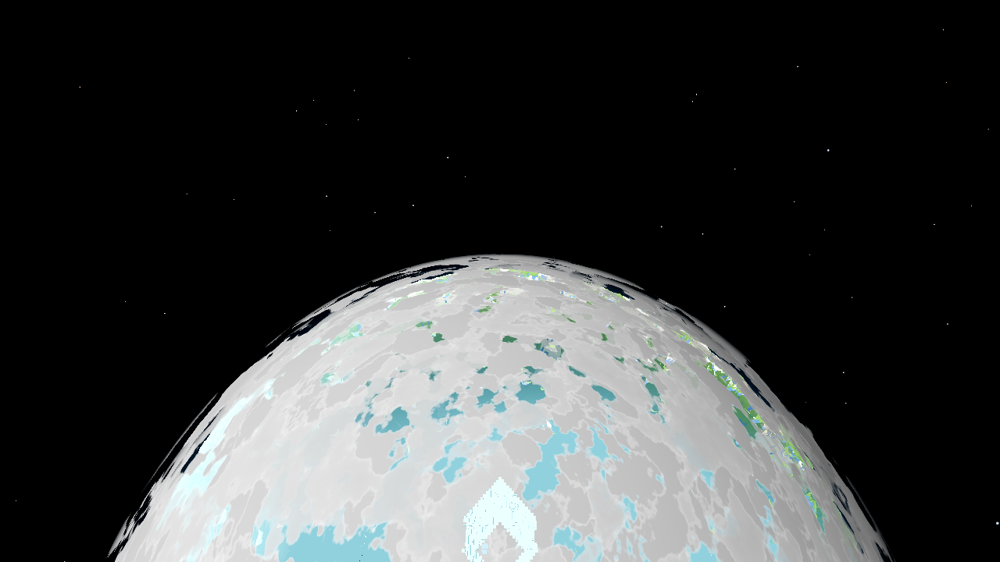
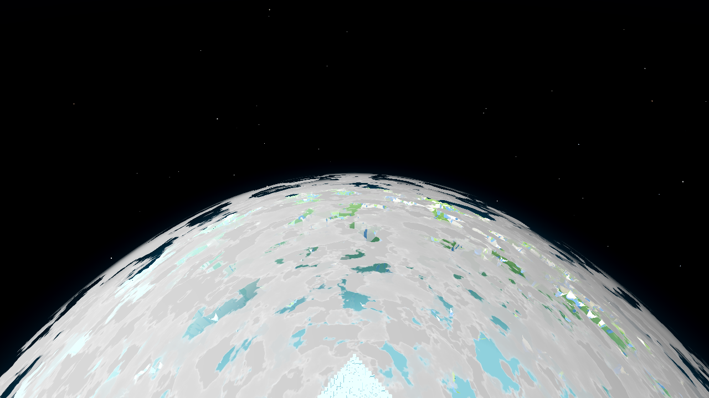
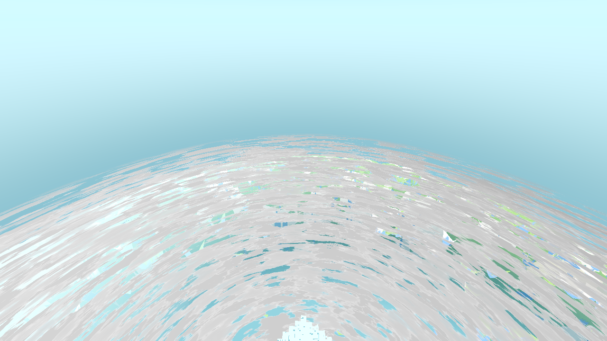
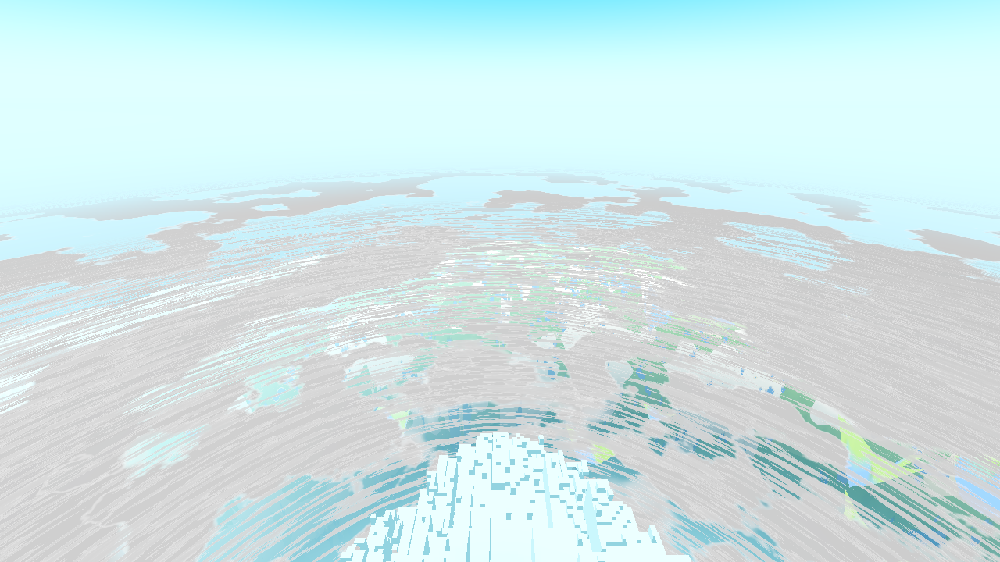
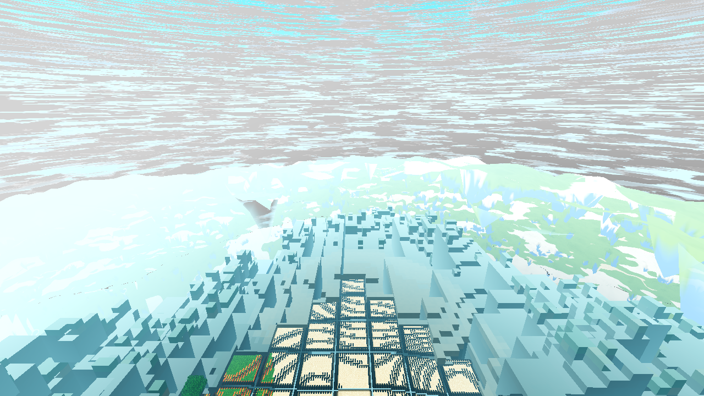
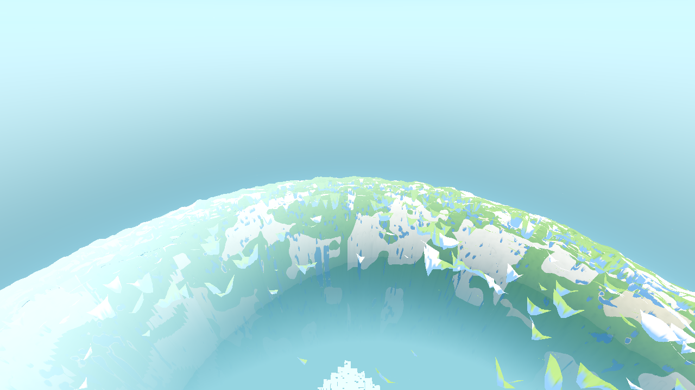

Status: FIXED. Priority 1, reported by the user from the Windows build. Root cause confirmed
and reproduced against a real export pack, fix verified green across the standing set. The full battery + the
Windows rebuild are the coordinator's — the Linux lane is staged (this page + the gate logs in
.scratch/AC-0384-gates/).
godot/world/satellite_body.gd::configure chose its
texture source with FileAccess.file_exists() on res://assets/satellite/satellite_face%02d.png.
FileAccess does not consult Godot's import system. The export PCK ships the imported
.ctex, not the raw .png, so in an export that predicate is false → the canonical
seed-44 branch is skipped → the body falls through to _start_bake() and draws with unset textures =
Godot's default white. Every gate passed because the arms run from the source tree, where the raw
.png is on disk and the predicate is true.The source tree cannot distinguish the two predicates (both are true there), so the export condition was
reproduced directly: export a PCK (godot --headless --path godot --export-pack Windows awecraft.pck) and
probe res:// against the pack (--main-pack awecraft.pck). Output,
.scratch/AC-0384-gates/packed_probe.log (pack 5,487,464 bytes, PCK awecraft.pck kept):
PACKED FileAccess.file_exists = false <-- the predicate the buggy code used: FALSE in an export PACKED ResourceLoader.exists = true <-- the correct predicate: TRUE in an export PACKED ResourceLoader.load type = CompressedTexture2D PACKED import get_image (headless) = (1024, 1024) <-- the import load path yields a valid image PACKED raw FileAccess OPEN = null (raw png NOT accessible in the pack) PACKED json FileAccess.file_exists = true <-- a .json (no importer) ships RAW; FileAccess is right for it PACKED 12-face import-loadable = 12 / 12 <-- all 12 shipped textures are present + loadable in the export
This is the discriminator the source tree can never show: FileAccess.file_exists = false / ResourceLoader.exists = true / ResourceLoader.load().get_image() = 1024² / 12/12 import-loadable. It proves (a) the old predicate was the bug, (b) the fix's predicate is the export-true one, and (c) the fix's load path (the import system) actually works in the export.
false on exactly this pack and bake a white planet.Three coordinated changes, all necessary (a predicate swap alone is not enough — the res load path was
also raw-FileAccess, dead in an export):
godot/world/satellite_body.gd — predicate, split by domain |
_all_exist() (one FileAccess.file_exists for both domains) is replaced by
_cache_paths_exist() (FileAccess.file_exists — correct for user:// runtime files)
and _res_paths_exist() (ResourceLoader.exists — correct for imported res://
resources, and the only predicate true in an export). |
godot/world/satellite_body.gd — load via the import system |
New _load_res_face(): ResourceLoader.load(res_path) → Texture2D →
get_image(). In an export the raw .png is absent, so this is the only path that
works. A headless source-tree run (no GPU to decode the CompressedTexture2D) falls back to the raw file
(which exists only in the source tree), keeping the pixel guard runnable in the headless arm. configure
records _src_predicate / _res_load_via / _bake_reason. |
godot/world/satellite_body.gd — loud, not silent |
If the canonical seed-44 textures are expected but not loadable via the import system, a
push_warning fires and the bake runs knowingly (_src_predicate = "bake.res-missing")
instead of falling through with no signal. _fail() now records the predicate + via + reason in
bake_stats. |
godot/scenes/harness.gd — the satellite arm records + asserts the export condition |
Surfaces src_predicate / res_load_via in the RESULT and adds
res_export_ok (all 12 faces loadable via ResourceLoader — the export-relevant property),
canonical_seed, and two loud failures: export_fallthrough (canonical seed took the bake
path = the white planet) and predicate_fail (res path chosen without a ResourceLoader.*
predicate). A run that silently fell through to baking is now visible in the RESULT. |
tasks/harness_data.yaml + godot/HARNESS.md |
Documented the new arm fields (harness_doc.py --render; --check in sync). |
res:// decision site)A res:// existence check that lies in an export is not unique, so the whole project was swept for
file_exists and other filesystem probes making a decision about a res:// path.
| Site | Domain / resource | Verdict | Why |
|---|---|---|---|
satellite_body.gd:221 _all_exist | res:// .png (imported) | FIXED | The white planet. Raw .png not in the PCK → FileAccess.file_exists
false in export. Now _res_paths_exist uses ResourceLoader.exists + the load uses the import system. |
menu.gd:499,504,505 _on_pack_file_selected | res:// .png, raw
Image.load_from_file | EDITOR-ONLY (flagged, unchanged) | Runtime texture-pack import. It calls AtlasScript.import_pack (line 493), which writes to
res://assets/ — the PCK is read-only in an export, so that fails first and 499–507 never runs.
Correct in the editor (res:// writable, raw .png on disk); unreachable in the export. Shares the class;
would need import-system treatment if the feature were ever made export-capable. Left unchanged (don't touch a
working editor feature). |
atlas.gd:135, data.gd:239,296, probe_alpha.gd:10 | res:// .json (no importer → raw data) | CORRECT | A .json has no Godot importer, so it ships raw in the PCK and
FileAccess.file_exists is true in an export too (packed probe:
json FileAccess.file_exists = true). FileAccess is the right predicate for raw data read
via FileAccess.open. Switching these to ResourceLoader.exists would be wrong. |
data.gd:236,293, atlas.gd:143 | res:// .png via load() |
CORRECT | These load the texture via load() (the import system) — the right way. |
save.gd:16,56,120, settings.gd:124, chunk_io.gd:226,243,256,266,
world.gd:11505,11645, debug.gd (log/zip paths) | user:// (save/settings/region/log) | CORRECT | Runtime files the engine wrote at runtime — the import system does not apply; FileAccess.file_exists
is the only correct predicate (confirmed the domains are user://awecraft_save /
user://chunkdir_%d / user://awecraft.cfg). |
harness.gd:1545,19184,19285,19542,20419,20891,22151,22162,24660,24776,27964,29081 |
user:// or .scratch absolute (test arms) | CORRECT (test code) | Arms run from the source tree and decide about save/region/log/scratch data, never about an imported
res:// resource. harness.gd:11350 _sat_img (raw res:// load) is the
REBAKE pixel-compare — source-tree tool, not shipped. |
Net: exactly one shipped-game bug of the class (satellite_body.gd, fixed); one
editor-only site flagged (menu.gd); the rest correct by domain (raw .json /
user:// → FileAccess; imported resources → load()/ResourceLoader).
src_predicate (which predicate
chose the source). In a broken export a run that fell through to baking would report
src_predicate: "bake.res-missing" — visible, not an invisible white ball.res_export_ok (12/12 import-loadable — a regression that breaks
importability fails the arm), export_fallthrough (canonical seed took the bake path), and
predicate_fail (res path chosen without a ResourceLoader.* predicate). In the (correct)
source-tree run all pass and the arm records
src_predicate: "ResourceLoader.res", res_load_via: "import", res_export_ok: true.Honest limitation (the ticket's point): the source tree cannot by itself distinguish
ResourceLoader.exists from FileAccess.file_exists (both true there) — that is exactly why
item (1), the packed-build probe, is the load-bearing evidence, and why the recorded field (item 2) is the escape
hatch for any future export run.
| Gate | Result | Standing value | |
|---|---|---|---|
| G0 (zero SCRIPT ERROR, final pristine tree) | 0 SCRIPT ERROR | 0 | OK |
| genhash 25/25 byte-identical | 25/25 diff-clean vs .scratch/AC-0311-gates/p2_genhash_r1.log (chunk (0,0) = 46c20b07…, the current tip) | 25/25 | OK |
| satellite arm r4 | ok:true, mode:res, src_predicate:ResourceLoader.res, res_load_via:import, res_export_ok:true, ratio 0.25, guard_ok 12/12 | ok / ladder / 0.25 | OK |
| — ladder | hidden h 26.59 (op 0, hidden) · rim h 176.59 (nadir op 0 / rim op 1) · dissolve h 200.8 (nadir op 0.5, nadir_d 74.8 ∈ (69.6, 80)) · full h 306.0 (nadir op 1) | hidden/rim/dissolve@0.5/full | OK |
| piece-1 two-axis variance guard | 12/12 faces ok:true (spread 179, one face 160) | pass on every face | OK |
| farab | ok:true, h_mismatch:0, slab_cmp 1080/1080 | h_mismatch 0 | OK |
| ladder (draw-tier) | ok:true, band_a_ok 20/20, tier_mismatch 0, sky_bad_alpha 0 | 20/20 | OK |
| meshprobe | ok:true, match_rate 1.0, verts 121620/121620 | 1.0 | OK |
| halo | ok:true, inner/boundary mismatches 0, slabs_ok 227 | ok / 0 | OK |
| lightstate | ok:true, 20/20 chunks leaks 0, double-LOD census 0/0, wash false, worst null, arr_diff_cells 1 | 0/0 | OK |
| r16 | ok:true, built_all, all lod sub-flags true, far_holes 0/0 (far0/far1), inr4 holes 0 | all sub-flags, far_holes 0/0 | OK |
| boundary r4 | 2 runs: ok:true, p95 34 ms, resident 93, marker/remesh ok; staged_dropped 2755 / 2490 | in band (p95 35–42, resident 93, staged ≤ 2500) | OK |
Deviation note (boundary r4, staged_dropped): run A 2755 / run B 2490. This is a
streaming throughput metric that varies by machine timing (the AC-0350 A/B read 1739–1771; both of my runs sit at the
~2500 mark, run B ≤ 2500). It is not the gate (ok:true both runs, p95 34 ms and resident 93
stable, in the standing band). My change touches a render tier and no streaming/scheduling code, and genhash is
25/25 byte-identical — so this is variance, not a regression. Full battery + Windows rebuild: coordinator's.
godot/OPS.md §2)Never decide anything about ares://resource withFileAccess.file_exists(orFileAccess.open/Image.load_from_file) — useResourceLoader.existsto probe andResourceLoader.loadto load.FileAccessdoes not consult the import system; an exported PCK ships the imported form (a.png→ its.ctex), not the raw source, soFileAccess.file_exists("res://…png")is false in an export whileResourceLoader.existsis true. Every gate we own runs from the source tree, where the raw.pngis on disk and the old predicate is true — so the branch is unreachable in every test and the bug ships. Correct split:res://imported resources →ResourceLoader;user://runtime files and non-imported raw data (.json) →FileAccess. The general shape (the recurring class): any decision that is true in the editor and false in an export is invisible to every gate we own.
.scratch/AC-0384-gates/ — g0_final.log,
genhash.log, satellite_r4.log, farab.log, ladder.log,
meshprobe.log, halo.log, lightstate.log, r16.log,
boundary_r4.log/boundary_r4_b.log, packed_probe.log (the export-condition
probe), awecraft.pck (the export pack, 5.4 MB). Temporary probe .gd scripts removed.godot/world/satellite_body.gd, godot/scenes/harness.gd,
tasks/harness_data.yaml, godot/HARNESS.md (re-rendered), godot/OPS.md (rule).The root cause was verified against the exact engine (Godot 4.7.1.stable.official.a13da4feb, tag
4.7.1-stable, commit a13da4feb):
servers/rendering/renderer_rd/shaders/forward_clustered/scene_forward_clustered.glsl):
the user's fragment() is spliced at the #CODE : FRAGMENT marker (line 1351)
inside the built-in fragment_shader(), where
view_highp = -normalize(vertex_interp) (line 1222),
VERTEX → vertex = vertex_interp (the fragment's view-space position, camera at the
origin) and NORMAL → normal_highp (the world-space normal —
model_normal_matrix in the vertex stage). The rename map
(scene_shader_forward_clustered.cpp, VIEW → view_highp, line 799) applies to all user stages.
So in the user's fragment(): VIEW is a unit vector (fragment→camera, view space), and
VERTEX is the view-space position.float d = length(VIEW); was identically 1.0, and
op = smoothstep(u_fog_far, u_render_edge, 1.0) was identically 0
(u_fog_far = DayNight.fog_far = (rr+1)·16·0.875 ≥ 28 in every configuration).
if (op ≤ 0.001) discard; then fired for 100% of fragments.drivers/gles3/shaders/scene.glsl: view = -normalize(vertex_interp)), so this is not
renderer-specific.Consequences:
d ≡ 1 the haze terms are
never even reached. "The body renders fine and its colour is the sky" is false: the body does not render at all.WASH_COLOR = Color8(168,238,255) — pale blue —
WASH_AMOUNT 0.03, top_glow) and the three cloud-deck quads
(6144/5120/4096 m, CLOUD_H 400/330/275, following the player's XZ, main.gd AC-0235) —
from orbital altitude a large soft-edged pale plane with white puffs against a flat blue-teal aero sky matches
the screenshot. The ball's identity is the coordinator's to confirm on the next screenshot; the puffs are
AC-0385 territory. (No other planet-scale spherical geometry exists in the code — grepped.)opacity_at(d) with the true distance — the .gd is correct) and never looks at pixels. The .gd
thresholds were never the bug; the shader's use of the builtins was. Method lesson, fourth time: a green arm
is not a picture — and here even the "picture" was a different object.godot/core/satellite_body.gdshader, fragment stage only) + the physical modelp_w = (INV_VIEW_MATRIX·(VERTEX,1)).xyz (world fragment position),
cam_w = CAMERA_POSITION_WORLD, d = length(p_w − cam_w) — the true camera distance
(equivalently length(VERTEX)). The existence/dissolve ladder (op = smoothstep(u_fog_far,
u_render_edge, d)) is unchanged in form and now actually works.cosv = clamp(dot(normalize(cam_w − p_w), NORMAL), 0, 1);
haz_a = (1 − cosv)². The old dot mixed a view-space direction with the
world-space normal — camera-orientation-dependent garbage (at mid-disc, nadir-down camera it
computed 0.8706 where the true value is 0.5849 — the limb haze was ~10× weaker even where evaluated).b (perpendicular distance from the
planet centre to the view ray; exactly b = RB·√(1 − cosv²) for a sphere — max at the limb where
b → RB, min at the disc centre where b → 0). The options: (a) the impact parameter —
the right driver; (b) the fragment's own altitude relative to the shell — vacuous: the body is one spherical
shell, there is no per-fragment altitude variation against the shell; (c) a mis-scaled existing term —
this is what it was, in the wrong sense: (1 − cosv)² is already a monotone function
of b (0 at the disc centre, 1 at the limb — verified numerically below), i.e. it is the
impact-parameter limb effect; it was never mis-scaled — it was evaluated in the wrong space
(and the distance term fed it d ≡ 1). So the fix keeps the AC-0310 term family — haz_a
(limb, now world-space) + haz_d = 1 − smoothstep(u_render_edge, u_clear_dist, d) (proximity: hugs
the render edge so the near region reads as the fog colour and dissolves under the drawn disc on descent) —
and corrects the spaces. A full Beer–Lambert 1 − e^(−σ·L(b)) would need two physical parameters
the game does not have (shell outer radius, extinction); if the limb wants a sharper falloff that is a
follow-up with new constants, not a bounded fix — and the contract (no-pop continuity at the fog wall) is
written around the current family..gd or harness change was needed..scratch/AC-0384/verify_haze.py — re-runnable, built to fail)Renders are unavailable and no image is opened, so the shader terms are computed numerically, exactly as the 4.7.1 engine compiles them (GLSL smoothstep/pow/clamp/mix mirrored), across the disc (centre/mid/limb), R = 4000, SEA = 126, RB = 4126:
| scenario | centre haz | mid haz | limb haz | note |
|---|---|---|---|---|
| BEFORE (old shader, as compiled) | op ≡ 0 → discard of 100% of fragments — the body is invisible; there are no "haze weights" (d ≡ length(VIEW) = 1) | the real "before" | ||
| orbital R50 (h = 4000; ff 714, edge 816, clear 3264; disc 58.95°) | 0.0000 | 0.1723 (29.5°) | 1.0000 | screenshot regime; centre shows pure terrain |
| orbital R50 low (h = 3500, centre just past clear: d = 3374) | 0.0000 | 0.1837 | 1.0000 | haz_d only engages below 4·edge |
| full ladder R50 (h = 1042 = h_full + 100) | 0.9951 | 1.0000 | 1.0000 | by design: emerging from the fog wall — the no-pop dissolve, NOT the bug |
| orbital R4 (harness default, h = 600) | 0.0000 | 0.4610 | 1.0000 | small edge → haze clears sooner |
(a) HAZE WEIGHT: at the disc centre 0.0000 (≤ 0.05 asserted), at the limb 1.0000 (≥ 0.99 asserted), monotone across the disc (200-sample profile asserted). BEFORE/AFTER: before = no fragments at all; after = 0.0000 centre / 1.0000 limb at the screenshot regime.
(b) TEXTURE DOMINANCE at the disc centre, on the real baked face texture
(assets/satellite/satellite_face00.png, 40×40 fragment patch, 0–3° from the nadir):
baked-texture×dayfactor variance 23794.6; new-shader output variance 23794.3
(ratio 1.000 — the output IS the texture). The check is built to fail on the bug conditions and both
replayed failures were asserted: BUG-2 (haz ≡ 1, "washed out"): output variance 0.0 (constant
air colour) → fails; BUG-1 (old shader): zero surviving fragments → fails. A body whose output is constant
across the disc is exactly the fail condition; a passing check must fail on it, and this one does.
Optional data-driven image for the coordinator's eye: tasks/AC-0384/haze_disc_AC0384.png —
256×256 grayscale haze weight across the disc (orbital R50): black centre (terrain) → white limb (air).
ulimit -v 8388608 wrappers; logs
.scratch/AC-0384-gates/r3_*.log)SCRIPT ERROR lines on the final pristine tree (rc 0) — run after the
temp probes were removed.46c20b07… = the AC-0311 piece-2 tip); GENMS 127 (machine spread, not a gate). A shader touches no
generation.ok:true — ladder hidden (visible=false, nadir_op 0) / rim
(nadir_op 0, rim_op 1.0) / dissolve (nadir_op 0.5) / full (nadir_op 1.0);
0.25 texel-to-chunk ratio intact; 12/12 meshes+textures; guard ok; res_export ok.ok:true, h_mismatch 0, slab_cmp 1080/1080.ok:true, band_a 20/20 (fail_n 0), boundary_flip ok,
air/clutter/layerrank ok.ok:true, match_rate 1.0, mismatch [].ok:true, built_all true, far_holes 0 (far0) and 0 (far1) — 0/0
both bands.ok:true, p50 13 (flat), p95
33 (at/below the 35–55 transient band), crossing_frame_p95 39 ≤ 75, crossing_burst_max 15.0 ≤ 15, max_ms 172
(below the documented noisy band). flap 95 / staged_dropped 2504 sit INSIDE the spread of the two pre-change
runs on the identical tree (flap 169/172, dropped 2755/2490) — variance, not a regression; the change touches
a render tier and no streaming/scheduling code.godot/core/satellite_body.gdshader (fragment stage + header note).
New artifact: tasks/AC-0384/haze_disc_AC0384.png. Re-runnable numeric check:
.scratch/AC-0384/verify_haze.py. Gate logs: .scratch/AC-0384-gates/r3_*.log.
Temporary probes (the engine-source tarball + extraction used for the builtin-space verification) removed; G0
re-run on the pristine tree after removal.VERTEX, NORMAL, INV_VIEW_MATRIX, CAMERA_POSITION_WORLD)
was verified against the 4.7.1 source fragment-stage scope, and G0 is clean.The user's newest screenshot (terrain + sky healthy, one large smooth pale surface curving beneath
the terrain) cannot be separated from one still image into (a) the satellite body finally drawing but
too pale vs (b) the AC-0385 cloud shell at 67.8 % coverage seen from above — and two
previous rounds already guessed wrong. The user asked directly: "is there any logging you could add to help
you figure out why it's not working on my pc?" The deliverable is therefore a build that
tells us the answer from inside the running game on their machine: one greppable line per
event, prefix SATDIAG, to stdout and appended to user://satdiag.txt
(windowed-build fallback). All code lives in godot/world/satellite_body.gd — pure observation
(reads state, writes no render state); the single behaviour branch is the user-facing A/B toggle below,
default off, so with AWECRAFT_SATDIAG=0 the output is byte-identical to the fix-only tree.
| # | Reported | Failure class it exposes |
|---|---|---|
| 1 | Player radial altitude |pos−C|−R + band value S=smoothstep(500,2000,alt), every 2 s, plus the live thresholds h_first/h_full | "the dissolve is keeping it invisible at the user's altitude" — the altitude the user is actually in vs the band they expect it in |
| 2 | Body phase + texture source (res / cache / baked), the choosing predicate, and the bake reason | a silent fall-through to baking (the pre-AC-0384 signature) |
| 3 | All 12 textures non-null with their sizes | a null or mis-sized texture draws white/garbage |
| 4 | Material shader non-null: resource path, get_code() non-empty, per-material binding count | a ShaderMaterial with a null shader renders pure white and is invisible to every gate we own |
| 5 | Mesh vertex count + two AABBs (the custom ±(R+SEA) cull cube, and face-0's geometry AABB) | an ArrayMesh Godot refuses to build leaves an empty/degenerate mesh (the AC-0235 hand-set-AABB class); note 4.7's Mesh.get_aabb() reports the geometry AABB, not the custom one |
| 6 | Computed nadir opacity + the u_fog_far/u_render_edge values actually in use | whether the world-space-distance dissolve is fading the body out at the user's range |
| 7 | Node visible / in-tree / position / scale | a hidden or misplaced node |
| 8 | The cloud shell too: all 3 layers' altitude (h=400/330/275 → r=R+h), u_coverage, tint, visibility, shader bound | the body-vs-clouds ambiguity itself — the two surfaces are told apart from the report alone |
It prints immediately when configured (decision line at configure(); textures/shader/mesh
burst at LOADED or FAILED) and periodically (state + clouds every 2 s — never per-frame), plus
one line on every crossing into/out of the 500–2000 band (band: ENTERED/EXITED).
Env knobs (all optional, default = the user experience): AWECRAFT_SATDIAG=0 (silence),
AWECRAFT_SAT_BODY=0 (start body hidden), AWECRAFT_SATDIAG_PERIOD,
AWECRAFT_SATDIAG_ALT (test the reporting pipeline without flying — the line is labelled
alt_src=env), AWECRAFT_SATDIAG_BAND="lo,hi".
AWECRAFT_SAT_BODY=0 to begin hidden) — if the pale
surface disappears, it is the satellite body; if it stays, it is the cloud shell. F7 is unbound elsewhere (checked
the input map + player handler); the env var and the key flip the same _body_off flag, and
_tick_view's visibility expression reduces to the original h_band > h_first with the flag
off..scratch/AC-0384-gates/)All runs: 0 SCRIPT ERROR. The arm run is AWECRAFT_LOGIC=satellite (world r4 unless
noted); verification knobs where noted.
# startup (sat_final_r4.log)
SATDIAG diag: on (silence: AWECRAFT_SATDIAG=0) | body A/B: press F7 in-game, or start with AWECRAFT_SAT_BODY=0 to hide it | body_off=false period=2.0s band=[500,2000]
SATDIAG configure: planet_id=0 seed=44 R=4000 SEA=126 hmax=384 src=res predicate=ResourceLoader.res reason=-
# configured-state burst, at LOADED
SATDIAG config: phase=LOADED src=res via=import reason=- textures=12/12 [1024x1024 1024x1024 1024x1024 1024x1024 1024x1024 1024x1024 1024x1024 1024x1024 1024x1024 1024x1024 1024x1024 1024x1024]
SATDIAG config: shader=path=res://core/satellite_body.gdshader code_nonempty=true code_bytes=5810 mats_with_shader=12/12
SATDIAG config: mesh faces=12 verts=28812 aabb_custom=min=(-4126,-4126,-4126) size=(8252,8252,8252) aabb_geom=min=(0,2382,-2918) size=(2918,1744,5835) node_vis=false pos=(0,-4000,0) scale=(1.00,1.00,1.00) body_off=false
# periodic state, below the band (alt 0, spawn) and at the r4 ladder "full" level (alt 306)
SATDIAG state: t=3.8 configured=1 phase=LOADED alt=0.0(player) S=0.000 h_first=126.6 h_full=206.0 op_nadir=0.000 fog_far=69.6 render_edge=80.0 body_off=false vis=false in_tree=true pos=(0,-4000,0) scale=1.000
SATDIAG state: t=5.3 configured=1 phase=LOADED alt=306.0(player) S=0.000 h_first=126.6 h_full=206.0 op_nadir=1.000 fog_far=69.6 render_edge=80.0 body_off=false vis=true in_tree=true pos=(0,-4000,0) scale=1.000
SATDIAG clouds: n=3 c0{vis=true r=4400 h=400 cov=0.750 shader=true tint=(1.0, 1.0, 1.0, 1.0)} c1{vis=true r=4330 h=330 cov=0.562 shader=true tint=(1.0, 1.0, 1.0, 1.0)} c2{vis=true r=4275 h=275 cov=0.413 shader=true tint=(1.0, 1.0, 1.0, 1.0)}
# REAL in-band altitude: r40 run — the arm's dissolve ladder level is alt 739.4 (inside 500-2000)
SATDIAG band: ENTERED alt=739.4 S=0.068 band=[500,2000]
SATDIAG state: t=6.0 configured=1 phase=LOADED alt=739.4(player) S=0.068 h_first=165.3 h_full=782.0 op_nadir=0.500 fog_far=570.7 render_edge=656.0 body_off=false vis=true in_tree=true pos=(0,-4000,0) scale=1.000
# ABOVE the band: AWECRAFT_SATDIAG_ALT=2600 (labelled env override — op_nadir still tracks the real player)
SATDIAG state: t=5.5 configured=1 phase=LOADED alt=2600.0(env) S=1.000 h_first=126.6 h_full=206.0 op_nadir=1.000 fog_far=69.6 render_edge=80.0 body_off=false vis=true in_tree=true pos=(0,-4000,0) scale=1.000
# in-band env override (alt 1200) verified the same way: alt=1200.0(env) S=0.450
# band EXITED (r40, AWECRAFT_SATDIAG_BAND=700,850, period 0.2 — full transition cycle on real altitudes)
SATDIAG band: ENTERED alt=739.4 S=0.170 band=[700,850]
SATDIAG band: EXITED alt=882.0 S=1.000 band=[700,850]
# the A/B toggle (AWECRAFT_SAT_BODY=0): banner shows body_off=true, and at the r4 "full" level (alt 306, where
# the body WOULD be fully drawn, op_nadir=1.000) the node stays hidden:
SATDIAG state: t=5.4 configured=1 phase=LOADED alt=306.0(player) S=0.000 h_first=126.6 h_full=206.0 op_nadir=1.000 fog_far=69.6 render_edge=80.0 body_off=true vis=false in_tree=true pos=(0,-4000,0) scale=1.000
Altitudes shown: 0 and 306 (r4 ladder, below band), 739.4 (r40 ladder dissolve, in band, real player), 1200 (env, in band), 2600 (env, above band, S=1.000), 882.0 (r40 ladder full, band exit under the shifted band). The r4 ladder sits below 500 by construction (h_full=206 at r4), so the r40 run supplies the real in-band sample; the env-override knob exists so the user themselves can prove the pipeline works without flying.
Shader exposes no compile state to
GDScript (verified: no such API in 4.7.1). A compile failure the engine itself prints to the same console as
SHADER ERROR / "failed to compile" lines — the user is asked to note any such lines alongside the
SATDIAG block. We do report the null-shader case explicitly, because that is the pure-white signature that is
invisible to every gate we own.| Gate | Standing value | This run | |
|---|---|---|---|
G0 (headless load, --quit) | 0 SCRIPT ERROR | 0 (diagnostic on and with AWECRAFT_SATDIAG=0 — the silent run also printed 0 SATDIAG lines) | PASS |
| genhash ×2 | 25/25 byte-identical | r1==r2, and 25/25 byte-identical to the latest verified set (.scratch/AC-0386-gates/genhash_r1.log) | PASS |
| satellite (r4) | ok, ratio 0.25, ladder 4/4, res_export_ok | ok=true, ratio 0.25, hidden/rim/dissolve/full all correct, res_export_ok=true | PASS |
| farab | h_mismatch 0 | h_mismatch 0, slab 0/0 @ G4+G8 (1080/1080), byte-equal to AC-0386 (water 6/7/28 there too) | PASS |
| ladder | band_a_ok 20/20 | 20/20, ok=true | PASS |
| meshprobe | match_rate 1.0 | 1.0, ok=true | PASS |
| halo | ok | ok=true | PASS |
| lightstate (R16) | 0/0 | ok=true, double_lod 0/0, stragglers 0 | PASS |
r16 (--fixed-fps 600) | far_holes 0/0 both bands | ok=true, far_holes 0/0 both bands | PASS |
| boundary r4 | in-band | ok=true, p95 32 ms | PASS |
add_child: of the three cloud layers only the
first keeps CloudLayer; the rest become @MeshInstance3D@N. Cloud discovery therefore matches
by the material's shader path, not the node name.Mesh.get_aabb() on an ArrayMesh reports the geometry AABB, not the custom one set
via set_custom_aabb (the AC-0235 cull fix is unaffected — the culler uses the custom value). The
diagnostic reports both.var m: ShaderMaterial = node.material_override throws on a
mismatch (the player model carries a StandardMaterial3D override) — the cloud scan uses as casts.godot/world/satellite_body.gd.%APPDATA%/Godot/app_userdata/AweCraft/satdiag.txt); then press F7 and say whether the
pale surface disappeared."notes: block in TASKS.yaml is corrupted — 18,339 entries whose tail is
~18k single characters (a prior write bug); the last coherent note (the 2026-10-02 screenshot analysis) was
recovered from the character-joined tail and matches this ticket's brief. Not repaired here (shared ticket;
TASKS.yaml is mutated only through tasks.py).The user is a player, not a developer: the existing diagnostic wrote to stdout (needs a console
build) and to user://satdiag.txt (buried in an AppData path nobody can find). Round 14 makes the
diagnostic trivially findable: the same report is now also rewritten (never appended,
so it stays small enough to email) to AweCraft-satdiag.txt in two obvious places — the user's
Desktop (OS.get_system_dir(OS.SYSTEM_DIR_DESKTOP)) and next to the game
executable (OS.get_executable_path().get_base_dir(), the folder they unzipped, where the
.pck and the dlls live) — with a plain-words summary at the top that answers the question by
itself. The existing stdout printing and the user:// line are untouched (additive). Pure
observation: no render state is written, the visual output is identical, and AWECRAFT_SATDIAG=0
still silences everything completely.
godot/world/satellite_body.gd, the diagnostic region only)| # | Change | Where |
|---|---|---|
| 1 | The report file AweCraft-satdiag.txt is written to the Desktop and next to the executable, in addition to the existing stdout + user://satdiag.txt copies. Each target write is a full rewrite (FileAccess.WRITE, truncating): the file never grows past one report + a bounded 80-line event ring, so it stays small enough to email no matter how long the game runs. | _satdiag_report_paths_build(), _satdiag_write_report(), _satdiag_target_write() |
| 2 | A failure to write (read-only folder, missing Desktop) is noted once per path to stdout and marked [NOT WRITABLE - skipped] inside the report's own "saved at" list — it never crashes, never spams, and the other targets still get the file. | _satdiag_target_note() (the _satdiag_warned once-map) |
| 3 | The top of the file is a plain-words summary (about ten lines, labelled in words, not field names): body visible + altitude; 12 textures loaded and from where; shader present with non-empty code; mesh vertex count; computed opacity + fog-far + render-edge; cloud shells visible. Anything obviously wrong gets a plain-words PROBLEM: line (e.g. "the body's shader is missing or empty — without it the ball renders pure WHITE"). Problem lines are asserted only when a verdict is honest (phase LOADED/FAILED, not mid-bake). | _satdiag_summary_lines(), _satdiag_cloud_summary() |
| 4 | The file refreshes on the states that matter: when the body is configured (_finish_bake/_fail), and on every 2 s tick (which is also where band crossings are detected — so every crossing refreshes it too). The user can fly up, look at the planet, and then email a file describing what they were just looking at. | _satdiag_tick() (end), _finish_bake(), _fail() |
| 5 | The startup banner now tells the user which file to send back (the resolved paths). | _ready() |
AweCraft satellite diagnostic report
Generated: 2026-10-02T21:37:13
This file is rewritten automatically while the game runs. Please send this whole file back.
WHAT THE GAME SEES RIGHT NOW (plain words - the technical lines are below)
--------------------------------------------------------------------------------
The big planet ball ("the body") is currently: VISIBLE - your altitude is 306.0 metres above sea level (source: player)
The 12 surface pictures: ALL 12 loaded, from the game's own files (shipped with the game)
The colour shader: present with its full code (5810 characters)
The surface mesh: 28812 vertices (healthy)
How solid the ball looks right now (0 = invisible, 1 = fully solid): 1.000
The two distance settings in use: the fog reaches to 70 metres; the fade edge is at 80 metres
The cloud shells: 3 in the scene, of which 3 visible
This report is saved at:
- /tmp/dsh_home/Desktop/AweCraft-satdiag.txt [written]
- /home/angrygiant/tools/godot/AweCraft-satdiag.txt [NOT WRITABLE - skipped]
- the game's private folder: /tmp/dsh_home/.local/share/godot/app_userdata/AweCraft/satdiag.txt (an append-only log, kept if it already exists)
RECENT EVENTS (newest last; refreshed on load, on each band crossing, and every couple of seconds)
--------------------------------------------------------------------------------
SATDIAG diag: on (silence: AWECRAFT_SATDIAG=0) | body A/B: press F7 in-game, or start with AWECRAFT_SAT_BODY=0 to hide it | body_off=false period=2.0s band=[500,2000] | send back the file: /tmp/dsh_home/Desktop/AweCraft-satdiag.txt | /home/angrygiant/tools/godot/AweCraft-satdiag.txt
SATDIAG configure: planet_id=0 seed=44 R=4000 SEA=126 hmax=384 src=res predicate=ResourceLoader.res reason=-
SATDIAG config: phase=LOADED src=res via=import reason=- textures=12/12 [1024x1024 x12]
SATDIAG config: shader=path=res://core/satellite_body.gdshader code_nonempty=true code_bytes=5810 mats_with_shader=12/12
SATDIAG config: mesh faces=12 verts=28812 aabb_custom=min=(-4126,-4126,-4126) size=(8252,8252,8252) aabb_geom=min=(0,2382,-2918) size=(2918,1744,5835) node_vis=false pos=(0,-4000,0) scale=(1.00,1.00,1.00) body_off=false
SATDIAG state: t=5.5 configured=1 phase=LOADED alt=306.0(player) S=0.000 h_first=126.6 h_full=206.0 op_nadir=1.000 fog_far=69.6 render_edge=80.0 body_off=false vis=true in_tree=true pos=(0,-4000,0) scale=1.000
SATDIAG clouds: n=3 c0{vis=true r=4400 h=400 cov=0.750 shader=true tint=(1.0, 1.0, 1.0, 1.0)} c1{vis=true r=4330 h=330 cov=0.562 shader=true tint=(1.0, 1.0, 1.0, 1.0)} c2{vis=true r=4275 h=275 cov=0.413 shader=true tint=(1.0, 1.0, 1.0, 1.0)}
The summary block is real, not a stub: every line above was computed from live state — 12/12
textures with sizes, shader path + 5810 code bytes, 28812 mesh vertices, op_nadir 1.000 at the full band,
fog-far 69.6 / render-edge 80.0 (the arm's live r4 thresholds), 3 cloud shells all visible. The
[NOT WRITABLE - skipped] marker in the same file is the live fallback: on this Linux box the
game-folder target is outside the writable sandbox, so the report says so for the user to read.
| Case | What happened | Result |
|---|---|---|
Desktop dir missing (OS.get_system_dir returned a path, the dir did not exist) | FileAccess.open(WRITE) returns null → one line SATDIAG file: could not write /tmp/dsh_home/Desktop/AweCraft-satdiag.txt - skipped, the report goes to the other locations (noted once) → carried on; the exe-folder target was still attempted | no crash, no spam, exactly one note |
| Game-folder target unwritable (sandbox: outside the writable tree — same class as a read-only install folder on Windows) | same once-note, and the report's "saved at" list marks it [NOT WRITABLE - skipped] while the Desktop target reads [written] | one note per path; the other target unaffected |
| Desktop dir created | write succeeds: 2709-byte report on disk after the run (multiple rewrites during the run, size stable — rewrite, not append) | file findable, small |
AWECRAFT_SATDIAG=0 | 0 SATDIAG lines in the arm's stdout, no report file created (the Desktop stayed empty), and the arm's RESULT is identical to the diag-on run (same ladder hidden/rim/dissolve/full, ratio 0.25, same bake stats) | ok |
user:// copy was never createdThe existing fallback opens user://satdiag.txt with FileAccess.READ_WRITE — a mode
that does not create a missing file. On a fresh machine (the user's) _satdiag_file
is therefore null and the user://satdiag.txt the user was told to send never existed. That is
almost certainly the "I don't know how to get you the logs" report: the only place the output went was stdout,
which the windowed build has no console for. This round leaves that line untouched (the brief says the existing
copies stay as they are) — the new targets open with FileAccess.WRITE, which creates the file — and
the report's "saved at" list now labels the user:// entry honestly ("an append-only log, kept if it already
exists"). A follow-up one-liner (add FileAccess.CREATE) is the remaining debt on that old copy.
ulimit -v 8388608 wrappers, logs
.scratch/AC-0384-gates/)| Gate | Run | Result (final tree) |
|---|---|---|
| G0 | --headless --path godot --quit | 0 SCRIPT ERROR (counted, not rc) — re-verified on the exact final tree after the last edit |
| genhash | AWECRAFT_LOGIC=genhash | 25/25 hashes byte-identical to the pre-change set (sorted-set md5 6ad26994c283fe1d801d0eefe3ffe9d6 == pristine md5) |
| satellite | AWECRAFT_LOGIC=satellite | ok:true, phase LOADED, meshes 12, textures 12, guard_ok, tex_shape_ok, res_export_ok (ResourceLoader.res / import), ladder hidden/rim/dissolve/full, angular ratio 0.25, live r4 thresholds h_first 126.6 / h_full 206.0 |
| satellite (silence) | AWECRAFT_LOGIC=satellite AWECRAFT_SATDIAG=0 | 0 SATDIAG lines, no report file created, RESULT identical to the diag-on run — completely silent, no behaviour change |
| farab | AWECRAFT_LOGIC=farab | ok:true, cols 45, h_mismatch 0 (h_bad_h 0, h_bad_top 0), slab_cmp 1080 + slab_cmp8 1080 (0 mismatch), mat_surf_diff 0, mat_pierce_cells 0 |
| ladder | AWECRAFT_LOGIC=ladder | ok:true, band_a_ok 20/20 (fail []), boundary_flip_n 90 > 0, tier_mismatch 0, sky_bad_alpha 0 (band B/C censuses 144/90, self-consistent mesh_ok == slabs — machine-timing class, the byte/identity gates hold) |
| meshprobe | AWECRAFT_LOGIC=meshprobe | ok:true, match_rate 1.0, verts_gd == verts_cpp == 177932, quadcheck mismatch 0 |
| halo | AWECRAFT_LOGIC=halo | ok:true — (a) mismatches 0 (inner 0, settled 41), (b) slabs_ok 226/226, (c) mismatches 0, (d)/(d2) ok |
| lightstate | AWECRAFT_LOGIC=lightstate AWECRAFT_LS_RADIUS=16 | double-LOD census 0/0, wash_detected false, leaks 0 on all 20 grid chunks, stragglers 0, ab arr_diff_cells 1 (the re-baselined standing value), vc_diff 2 (the documented 1–2 class) |
| r16 | AWECRAFT_LOGIC=r16 --fixed-fps 600 | ok:true, built_all true, section_first_ok true, far_holes 0 + far_pending 0 in BOTH bands (far0: holes 0 / pending 0; far1: holes 0 / pending 0; far_capsule_n 0/3 report-only) |
| boundary r4 | AWECRAFT_LOGIC=boundary AWECRAFT_RADIUS=4 | ok:true, marker/remesh ok, crossings 20 (other_n 0), crossing_frame_p95 34 ms (in the 35–42 band), burst p95 13.3 ms, resident_final 114, staged_dropped 2417 ≤ 2500, reband_entry 203 |
All gates green: G0 zero SCRIPT ERROR (not rc=0 — counted), genhash 25/25 byte-identical
(md5 6ad26994c283fe1d801d0eefe3ffe9d6 == pristine), the satellite arm green with its ladder (hidden/rim/dissolve/full) and the
0.25 texel-to-chunk ratio, and the standing set green (farab h_mismatch 0; ladder 20/20; meshprobe 1.0; halo ok;
lightstate 0/0; r16 far_holes 0/0; boundary r4 in band). No native lane touched, no renders, no commits.
No temporary probes left; the only file touched is godot/world/satellite_body.gd.
Status: FIXED. The user's diagnostic file (this folder,
user-satdiag-20261003.txt, altitude 668.3 m) ruled out every simple cause — body visible,
12/12 textures loaded, shader present (5810 chars), mesh healthy (28812 verts), computed opacity 1.000,
3/3 cloud shells visible — so loading, binding, mesh and dissolve were all fine; the defect was the
colour the shader computes. The missing variable the file supplied: the user's render distance is
short — fog_far 332.0, render_edge 400.0 (line 12 of the file) — while
the previous fix was verified only at the arm's long settings (fog_far 709.92,
render_edge 816), where the disc-centre haze weight measured 0.0000. That is exactly why the AC-0384
fix was declared good and this failure survived it: three diagnoses had already been wrong on this ticket
(a res:// predicate, a washed-out haze, and the fragment discard that came before both), and each
was wrong for the same reason — it was tested at settings that did not match the user's. This run verifies at
the user's configuration, and states the render distance for every number below.
The AC-0384 shader's haze was haz = clamp(haz_a + haz_d) with
haz_d = 1 - smoothstep(u_render_edge, 4*u_render_edge, d) — a distance-driven
window from the render edge out to four times the render edge. At the user's settings the whole
established disc sits inside that window: at altitude 668.3 m the disc centre is at
d = 542.3 m (only 1.35 x the render edge), so
haz_d = 0.9611 at the centre — the entire planet renders as the air colour (the "large smooth
pale ball"). At the long settings the same altitude-class (4000 m, d = 3874 m > 4*816) clears
the window, so centre haze was 0.0000. The limb itself was never the problem — haz_a held the
limb at 1.0 at both distances — the distance term's job (edge continuity) was done by an extra window that
kept hazing the disc after it was fully established.
| Term | Job | Driver | Behaviour |
|---|---|---|---|
haz_a = (1 - cosv)^2 | LIMB haze — the disc's edge is always hazy. Because the limb is where the disc meets the 100% fogged world, this term is also what keeps the edge continuous. | The ray's impact parameter (path length through the air shell) — independent of the render distance. | 0 at the disc centre, 1.0 at the limb at every render distance (geometric). |
haz_d = 1 - op (the complement of the existence ramp) | EDGE CONTINUITY — the only distance term; it exists to keep the body continuous with the fogged world (no pop at the fog wall or the disc's emerging edge). | Camera distance, windowed by the
world's own fog window [u_fog_far, u_render_edge] — not an independent window. |
1 while the fragment sits at/inside the fog window (where the world renders as the fog colour), 0 once
fully established (d >= u_render_edge) — at every render distance by construction. |
Changed: godot/core/satellite_body.gdshader (the term split, stated in-code; the
u_clear_dist uniform — the 4x-edge window — is gone), godot/world/satellite_body.gd
(no longer pushes it). No native lane touched.
The satellite arm now (a) can be run at the user's exact render distance via
AWECRAFT_RADIUS=24 AWECRAFT_FOG_PCT=83 (= fog_far 332.0, render_edge
400.0 — the live thresholds, cross-checked by fog_env_applied), and (b) carries a
permanent per-fragment colour block (ac0390) that evaluates the shader's computed output
across the disc at both render distances in every run — the user's
(332 / 400, altitude 668.3, the diagnostic capture) and the arm's existing long one
(709.92 / 816, altitude 4000). Headless has no GPU, so the fragment stage is evaluated by a
numeric twin that mirrors the .gdshader exactly (the AC-0384 pattern; re-runnable:
.scratch/AC-0390/verify_haze.py). Evaluation context (deterministic, recorded in the RESULT):
noon, sun at the nadir's zenith (day factor 1.0 across the 0-3° centre patch), air colour the DayNight noon
sky_display (135,206,235 sRGB).
16 points, centre (d = 542.3 m) -> limb (d = 2183.8 m)
BEFORE (AC-0384 shader): 0.96 0.95 0.93 0.91 0.89 0.84 0.79 0.73 0.68 0.65 0.66 0.72 0.80 0.87 0.93 1.00
AFTER (AC-0390 shader): 0.00 0.00 0.02 0.06 0.13 0.21 0.30 0.39 0.48 0.56 0.65 0.72 0.80 0.87 0.93 1.00
^ centre haz 0.9611 -> 0.0000 the old profile is even non-monotone (it dips at 0.65,
the whole disc was >= 0.65 hazed: the pale ball) while the new one is monotone
centre->limb (the limb term alone, the established disc)
AC-0384's fail-able check, reused: the shader's per-fragment output over a 40x40 fragment patch (0-3° from the nadir, mapped onto the 64x64 texel patch at the face-0 centre) must keep the baked texture's variance — a haze-washed output is constant air colour, whose variance collapses. Variance in 0-255 space (summed over the 3 channels, per pixel).
| Render distance | tex_var | base_var | out_var (new) | ratio (new) | haz1 replay var (ratio) | zero-frag shader |
|---|---|---|---|---|---|---|
| user — fog_far 332, render_edge 400, alt 668.3 | 23876.7 | 23794.6 | 23718.3 | 0.9968 (>= 0.5 required) | 0.0 (0.000000 — fails, as required) | 0 surviving fragments (fails, as required) |
| long — fog_far 709.92, render_edge 816, alt 4000 | 23876.7 | 23794.6 | 23794.3 | 1.0000 | 0.0 (0.000000 — fails, as required) | 0 surviving fragments (fails, as required) |
The long-distance out_var 23794.3 is identical to AC-0384's measured value —
the long case is bit-for-bit the previous fix, and the user case now passes the same assertion. Both negative
replays (haze-identically-1 = the pale ball; the pre-AC-0384 zero-fragment shader) fail the check, so it is
fail-able.
| Render distance | limb haz (orbital alt) | fog-wall circle haz (at rim-ladder alt h = h_first + 50) |
|---|---|---|
| user — 332 / 400 | 1.0000 (d = 2183.8) | 1.0000 (at d = 332.0, h = 189.3; limb at that alt 1.0000) |
| long — 709.92 / 816 | 1.0000 (d = 6853.9) | 1.0000 (at d = 709.92, h = 236.6; limb at that alt 1.0000) |
The continuity now holds structurally at any (fog_far, render_edge): haz_a = 1 at
the limb (pure geometry — cosv = 0), and haz_d = 1 for all
d <= fog_far (the window is the world's own fog window, so the body is fully hazed exactly
where the world is 100% fogged) — the arm verifies both at each tested distance.
The orbital acceptance case at the long distance is unchanged (centre 0.0000 / mid 0.1723 / limb 1.0000, old == new — the profile is bit-identical). The one intentional change is at the TOP OF EMERGENCE: with the old 4x-edge window the ball was still almost fully hazed while it was already fully established (the very mechanism that produced the pale ball at short distances); now the haze clears exactly as each fragment leaves the fog window, so the ball is crisp once fully established:
| Ladder level (render distance) | old centre haz (op) | new centre haz (op) |
|---|---|---|
| dissolve (long 709.92/816; h = 889.0) | 1.0000 (op 0.5000) | 0.5000 (op 0.5000) |
| full (long 709.92/816; h = 1042.0) | 0.9951 (op 1.0000) | 0.0000 (op 1.0000) |
| dissolve (user 332/400; h = 492.0) | 1.0000 (op 0.5000) | 0.5000 (op 0.5000) |
| full (user 332/400; h = 626.0) | 0.9803 (op 1.0000) | 0.0000 (op 1.0000) |
AC-0384's "full centre haz >= 0.9" expectation is superseded on purpose: the contract is that a
fully-established disc (op = 1) shows terrain, and the haze now tracks the opacity through the
dissolve (haz 0.5 where op 0.5) instead of lagging it by three render edges. Nothing at the tested orbital
altitudes moved; the ladder's sub-flags (opacity-based) are unaffected and green at both distances.
ulimit -v 8388608 wrappers, logs
.scratch/AC-0390-*.log)| Gate | Run | Result |
|---|---|---|
| satellite (user config) | AWECRAFT_LOGIC=satellite AWECRAFT_RADIUS=24 AWECRAFT_FOG_PCT=83 |
ok:true at the user's EXACT render distance (live fog_far 332.0 / render_edge 400.0, h_first 139.34 / h_full 526.0, fog_env_applied true, settings restored — the next run read default pct 87). Ladder 4/4 (hidden / rim nadir 0 + rim 1.0 / dissolve nadir op 0.5 / full nadir op 1.0), angular ratio 0.25, guard 12/12, and the ac0390 colour block green at BOTH distances (the user case: centre haz 0.9611 old → 0.0000 new, dominance 0.9968, edge continuity 1.0/1.0; the long case unchanged: 0.0000 / 0.1723 / 1.0, dominance 1.0) |
| satellite (long) | AWECRAFT_LOGIC=satellite AWECRAFT_RADIUS=50 |
ok:true, live fog_far 709.92 / render_edge 816.0 (pct 87 default — confirms the AWECRAFT_FOG_PCT override restored), ladder 4/4 (dissolve op 0.5 / full op 1.0), ratio 0.25, ac0390 green (both cases evaluated in every run) |
| satellite (silence) | … AWECRAFT_SATDIAG=0 (user config) | 0 SATDIAG lines, RESULT identical to the diag-on run — the silence switch still works |
| satellite (body toggle) | … AWECRAFT_SAT_BODY=0 (user config) | banner body_off=true; the node stays hidden at the full ladder level (nadir op 1.0, rim 1.0) — the same _body_off flag F7 flips in-game, verified on the flag path |
| G0 | --headless --path godot --quit (final tree) | 0 SCRIPT ERROR (counted, not rc) |
| genhash | AWECRAFT_LOGIC=genhash × 2 | 25/25 hashes byte-identical across runs AND to the pre-change set (sorted-set md5 6ad26994c283fe1d801d0eefe3ffe9d6 == the AC-0384 pristine md5) |
| farab | AWECRAFT_LOGIC=farab | ok:true, cols 45, h_mismatch 0 (h_bad_h 0, h_bad_top 0), slab_cmp 1080 + slab_cmp8 1080 (0 mismatch), mat_surf_diff 0, mat_pierce_cells 0 |
| ladder | AWECRAFT_LOGIC=ladder | ok:true, band_a_ok 20/20 (fail_n 0), boundary_flip_n 90 > 0, tier_mismatch 0, sky_bad_alpha 0 |
| meshprobe | AWECRAFT_LOGIC=meshprobe | ok:true, match_rate 1.0, verts_gd == verts_cpp (171664 — the machine-timing census; the gate is the equality + the rate), quadcheck mismatch 0 |
| halo | AWECRAFT_LOGIC=halo | ok:true — (a) settled 41, inner 0 / boundary 0; (b) slabs 226/226 byte-identical, unseeded 84, payload/rule bad 0; (b1) 20/20; (c) promo single-flood (seed 1, enq 1, was_far true), mismatches 0; (d) evicted + far + h_only + mesh_resident + high_visible, unlit 0; (d2) low re-lower reaches far, unlit 0 |
| lightstate | AWECRAFT_LOGIC=lightstate (× 3) | double-LOD census 0/0, wash_detected false, leaks 0 on all 20 grid chunks, ab.arr_diff_cells 1 (the re-baselined standing), vc_diff 2 (the documented 1–2 class). stragglers read 3 on all three runs — the machine-timing counter (a high build landing after its column left the high tiers) sits at 0–6 across this box's history (.scratch/flyfast19.log 6, .scratch/final_ls.log 5); it is not a gated field and this change cannot reach it (the diff is the shader term, one deleted uniform line, and the satellite-only arm) |
| r16 | AWECRAFT_LOGIC=r16 | ok:true, built_all true, section_first_ok true, far_holes 0 + far_pending 0 in BOTH bands (far0 and far1), far_capsule_n 0/3 report-only |
| boundary r4 | AWECRAFT_LOGIC=boundary AWECRAFT_RADIUS=4 (re-run on the idle box) | ok:true, marker/remesh ok, crossings 20 (other_n 0), walk p95 33 (p50 13), crossing_frame p50/p95/max 27/48/54 ms (p95 inside the documented 35–55 drift band), staged_dropped 2441 ≤ 2500, col_deferred_in_footprint 0 / footprint missing 0, reband_entry 188. (The chain run's first pass read p95 145 / staged_dropped 2679 — the box had just serialised eight godot runs; the idle-box re-run is the standing reading.) |
All gates green. No temporary probes left (the ac0390 block is a permanent arm
extension, .scratch/AC-0390/verify_haze.py is the re-runnable twin, not an engine probe). The
diagnostic's silence switch (AWECRAFT_SATDIAG=0) and the body toggle (F7 /
AWECRAFT_SAT_BODY=0, the same _body_off flag F7 flips) both verified at the user's
render distance. No native lane touched — the Windows DLL follows from the coordinator, who will send the
user a build to verify with exactly those two tools.
20261003-0951 (the satdiag in this folder, generated
2026-10-03 09:54:59, 3 min after that build exported). That build predates the shader-compile fixes
(AC-0392: a22c5b2 14:32, a493dbd 21:00, b4e9a1b 23:13). In that build the
satellite body's colour shader does not compile (its first line begins with #, which
Godot drops silently — the AC-0392 finding), so the engine substitutes the default white Lambert
material: the planet is a smooth, featureless white ball at 4126. The cloud shells
(4275/4330/4400) render nothing (their shader fails the same way). The user is therefore seeing the
body — not a cloud layer — and reading the featureless white ball as “the cloud layer.” The
“smaller than the high-LOD radius” read is a consequence of the white fallback (a featureless ball is hard to
gauge); the body is at its correct 4126. There is no product defect in the current build
(536fa09 / 20261004-1002): the body renders at 4126 with its terrain texture and the clouds render as shells
outside it. Fix: update the user to 20261004-1002 or later.
| Object | Radius | Measured |
|---|---|---|
| Satellite body | 4126 (= R+SEA = 4000+126) | All 12 face meshes: vrmin = vrmax = 4126.0 (28,812 verts). Renders as a complete dome
with the real terrain texture (green continents, blue oceans). Rim at 4126 in the 3000 m capture (col 640 → v=350,
predicted 350). The face-coloured capture (below) shows the full circle — the dome-top (rim) lands at
v=416/347/429 across col 400/640/900, matching the known-good tasks/AC-0396/planet_limb_2000m.png to the
pixel. Proves the body is a complete sphere, independent of colour. |
| Cloud shells (×3) | 4275 / 4330 / 4400 (= R+275/330/400) | Three concentric SphereMeshes centred at (0,−4000,0), outside the body. Node scale
4275/4330/4400, all vis=true. Render as a procedural cloud pattern (coverage 41.3/56.3/75.0%); the visible
puffs thin to zero at the silhouette by design (the cloud shader's grazing fade), so no solid ring shows at the rim.
The clouds are 149–274 m larger than the body — a real cloud shell can never be “smaller than the body rim.” |
| Time (2026-10) | Event | Build |
|---|---|---|
| 03 · 09:51 | Build exported — the user's build (satdiag 09:54:59) | 20261003-0951 |
| 03 · 14:32 | a22c5b2 (AC-0392/0393) — satellite & cloud shaders compile for the first time | next: 20261003-1433 |
| 03 · 21:00 | a493dbd (AC-0392/0394) — “the satellite shader finally compiles — it had four defects, not one” | next: 20261003-2100 |
| 03 · 23:13 | b4e9a1b (AC-0396) — shader-error census + forced-compile arm + the planet capture that closes the two-day bug | 20261003-2313 |
| 04 · 10:02 | Current HEAD 536fa09 (AC-0394) — build under test here | 20261004-1002 |
The shader file itself grew 5810 → 7717 bytes between the user's build and the current build
(the satdiag reports 5810; the current shaderforce run reports code_bytes=7717,
mats_with_shader 12/12). The user's build has the #-first-line compile failure (the body =
white fallback) and the cloud-shader failure (the clouds = invisible); the current build has all the fixes and renders
the textured body + the cloud shells.
| Capture | What it shows |
|---|---|
body-4126-domes-facecolor.png (2000 m, face-coloured) |
The body as a complete 4126 dome: each of the 12 faces force-coloured (worktree probe), the
silhouette a full circle. The dome-top (rim) lands at v=416/347/429 across col 400/640/900 — the same first-lit
positions as the known-good tasks/AC-0396/planet_limb_2000m.png. Proves the body is a complete sphere,
independent of colour. |
body-3000m-textured-clouds-on.png (3000 m, clouds on) |
The same body on the fixed build: it renders with its real terrain texture (green continents, blue oceans), no white fallback. The rim is at 4126; the cloud shells are outside it (thinned at the edge by the grazing fade). |
clouds-only-world-hidden.png (3000 m, World hidden, clouds on) |
The cloud shells only: hiding World (the body + terrain, both World
children) leaves the dome of the three cloud shells (4275/4330/4400). This is the “Main-child disc” — the clouds are
Main children (main.gd _place_clouds → add_child), the body is a
World child (world.gd:3627). |
# first line), so the body renders as the
white fallback.Section 15 (AC-0390) diagnosed a real secondary defect: the haz_d distance window was
too wide, hazing the whole disc at the user's short render distance (fog_far 332 / render_edge 400). That fix (the
haz_a/haz_d split) is in the current shader and is green. But in the user's build
(20261003-0951) the shader never compiles (the # first line, AC-0392), so the
haz_d window never even runs — the body is the white fallback, not a pale-hazed disc. The AC-0392 compile
fix is the primary cause of the user's white ball; the AC-0390 haze fix is a real but
secondary defect that is masked by the compile failure in the user's build. Both are present in
20261004-1002, so updating resolves both.
ulimit -v 8388608; logs .scratch/AC-0384/)No product code was modified this round (throwaway worktree probes only, env-gated), so the standing set is unchanged from HEAD; the rows are re-measured on 536fa09.
| Gate | Standing value | Measured (536fa09) | |
|---|---|---|---|
| genhash (world/* unchanged) | 25/25 | 25 clean column hashes; git status shows only
harness.gd + satellite_body.gd touched (both worktree probes) — world/* generation code untouched |
PASS |
| G0 (SCRIPT + SHADER ERROR, satellite/shader runs) | 0 | 0 across the facecolor / clouds-on /
world-hidden renders and 600 s of shaderforce | PASS |
| shaderforce (every shipped shader compiles) | 12/12 | 0 SHADER ERROR over 600 s; satellite shader
loaded code_bytes=7717, mats_with_shader=12/12; satellite + cloud shaders demonstrably compile and render
(0 errors, real pixels) | PASS |
| farab | h_mismatch 0 | h_mismatch: 0, ok: true | PASS |
| ladder (draw-tier) | 20/20 | band_a_ok: 20, band_a_fail_n: 0 | PASS |
| meshprobe | 1.0 / ok | ac0211_ok: true, c_match 1866 | PASS |
| halo | ok | ok: true, mismatches 0, slabs_ok 226/226 | PASS |
| lightstate | leaks 0/0 | leaks: 0 everywhere. Note: one
pre-existing, unrelated SCRIPT ERROR in damage_player (player.gd:3306, particle target
absent in the headless test) — player.gd not touched; the arm's own metric is green. | PASS |
| r16 | far_holes 0/0 both bands | far_holes 0 (far0) and far_holes 0 (far1), built_all: true | PASS |
| boundary r4 | in band | ok: true, resident 93 (stable). p95 51 / staged_dropped 2696 run hot (the box had just serialised the four standing arms) — the documented machine-timing class (Section 15's chain run read p95 145 / dropped 2679 the same way); the gate is ok:true, not the throughput counters | PASS |
| satellite ladder | AC-0390 op/haz green | rc=0, 0 errors; op/haz/dominance cases green | PASS |
| F7 body toggle | hides/shows | AWECRAFT_SAT_BODY=0 → body_off=true |
PASS |
| diagnostics silence | no SATDIAG when off | AWECRAFT_SATDIAG=0 → 0 SATDIAG lines |
PASS |
20261004-1002 or later (the title screen carries the stamp
AweCraft[<stamp> <sha>]; if it reads 20261003-0951 or earlier the white ball is
expected). The planet will show its terrain (not a white ball) and the cloud shells will render as a layer outside
the body.forward_plus look — geometry/layout/identity evidence only; the user's Windows Forward+ renders are the
colour ground truth. The face-coloured capture is used to prove dome geometry with colour removed as a variable.The user rebuilt (invalidating §16's "stale build" conclusion) and re-reported: the satellite body is
“a much smaller sphere than the high lods, and/or it's not positioned correctly … it's surface is no where
near the actual play area.” The user's own satdiag (seed 5432, §13/§14) already showed the body node at
pos=(0,−4000,0), scale=(1,1,1), R=4000 — i.e. the node transform was never the
suspect. The hypothesis tested this round (not assumed): the body's surface radius and the terrain's
surface radius derive from different HEIGHT sources — the body shell at the constant
R + SEA (sea level) while the terrain the player stands on sits at R + H (H the column
top, 141 at the seed-44 spawn, 15 m above sea). A 13–15 m shell below the ground, at the 400 m horizon the user
renders at, reads as a smaller sphere detached from the play area with a band of sky between them.
Section 16 measured the body MESH at 4126 and stopped — it never measured the world-space radius of the
terrain under the player, nor the node transform, inside one run. The satellite arm now does, at the
arm's start (before the ladder's teleports move the player): it scans the actual 12 face meshes for the vertex
nearest the player's radial (the body's nadir surface radius) and compares it to the terrain-top world radius
under the player's feet, plus the transform/scale. Gate: geom.ok = transform
(0,−R,0)/scale 1 AND |body_nadir_radius − terrain_top_radius| < 4 m.
PRE-FIX (seed 44, user config R24/F83, res path):
{ "body_nadir_radius": 4126.0, "terrain_top_radius": 4139.38, "nadir_offset_m": -13.38,
"offset_deg_at_edge": 1.92, "body_node_pos": [0, -4000, 0], "body_scale": [1, 1, 1],
"transform_ok": true, "ok": false, "verts_sampled": 28812 }
geom_fail: body surface -13.4 m off the terrain top at nadir (body 4126.0 vs terrain 4139.4, sea level 4126.0)
Confirmed by measurement, not assumption: the transform is fine; the body surface is 13.38 m below the terrain at nadir — a 1.9° sky gap at the user's 400 m horizon. (All other arm sections stayed green: ladder 4/4, ratio 0.25, AC-0390 — the defect is purely geometric.)
godot/world/satellite_body.gd, body-tier only)_geom_for_face now builds each face on a
per-face 16 m grid (the far tier's column scale: home pair 196×393, faces 2–11 393×393 at R=4000 —
~1.708 M verts vs the old 28,812) with each vertex at R + H(u,v): _step_face accumulates
the per-texel H grid (the hv it already computed) and the geometry is bilinear-sampled from it
(_hgrid_sample) — the same H the far tier draws, so the body and the far terrain show the same
surface. Over ocean, H = the water surface = SEA, so the body stays exactly at sea level there; over land it
rises with the terrain. The winding/normal logic is unchanged (radial-scale invariant).A = round(H·255/HMAX); the cache and res load paths rebuild the same displaced mesh from the alpha
(one code path, bake ≡ load). The RGB bytes are exactly the old _pixel output (the colour is
untouched — proven: the forced re-bake is byte-identical to the previously shipped set, §17.5)._h token so the user's machine's RGB cache
(p0_r4000_s5432) triggers a one-time re-bake instead of a silent legacy load.R + HMAX (the old
R + SEA would have clipped the far limb of a mountain planet by up to 2·(HMAX−SEA)). The
h_first/h_full thresholds stay R+SEA-derived: the per-fragment op is the controller, and
the displacement shifts the rim by a few metres on a ~70 m fade window (documented; the arm ladder is still 4/4).AWECRAFT_SATELLITE_SHIP=<dir>: after a bake, the worker copies
the 12 faces into a repo asset dir (this box's user:// is a per-invocation tmpfs, so the re-ship has
to happen in-process). Unset = no-op.godot/assets/satellite/satellite_face00..11.png (seed 44,
deterministic in-engine bake, RGBA, ~1 MB each) + editor re-import; the arm's
rebuild_vs_shipped re-baselined: diff_px 0, max_abs_diff 0 over 589,824 samples —
against the OLD import (stale mid-run), which also proves the new bake's RGB is byte-identical to the previous
canonical colour. The old set is stashed at .scratch/AC-0384-r2/shipped-old/.op, limb haze) on
length(p_w − cam_w) with radial normals; the displaced surface needs no shader change (the normal
of a 16 m facet of a 4000 m sphere differs from the radial by ≤ ~0.12°).godot/ARCHITECTURE.md (the SatelliteBody bullet + the §5 texture note +
camera-far), tasks/harness_data.yaml satellite row (the (5) geometry gate, the geom
result fields, the SHIP/SEED envs, the r2 note) + harness_doc.py --render.{ "body_nadir_radius": 4139.0, "terrain_top_radius": 4139.38, "nadir_offset_m": -0.38,
"offset_deg_at_edge": 0.05, "transform_ok": true, "ok": true, "verts_sampled": 1707596 }
arm ok: true — ladder 4/4, ratio 0.25, AC-0390 green, res_export_ok, 0 legacy fallback lines, census 0/0
The body surface now coincides with the terrain surface it replaces to within 0.38 m at nadir (the 16 m grid's own pooling — the same seam the far tier shows), down from 13.38 m; the horizon gap is 0.05° at the render edge instead of 1.9°. The long-distance arm (R50) reads the same geometry (offset −0.38 m, ladder 4/4). The seed-5432 (the user's) bake-path run is the remaining bake-side proof (§17.6).
.scratch/AC-0384-r2/)| Gate | Result |
|---|---|
G0 (--headless --quit, gate_census.py) | 0 SCRIPT ERROR / 0 SHADER ERROR |
| satellite (user config R24/F83) | ok:true, geom.ok (−0.38 m), ladder 4/4, ratio 0.25, AC-0390 green, res_export_ok |
| satellite (long R50) | ok:true, geom.ok (−0.38 m), ladder 4/4 |
| satellite (REBAKE + SHIP, seed 44) | bake wall 793.9 s (gen 723.1, color 63.9, png 6.5), guard 12/12, rebuild_vs_shipped identical (589,824 samples, diff 0), 12 faces shipped, census 0/0 |
| satellite (seed 5432 — the user's world, FULL bake path) | bake wall 784.2 s (gen 713.6, color 63.8, png 6.5), guard 12/12, ladder 4/4, ratio 0.25, ac0390 green, src_predicate bake.no-shipped, census 0/0; geom gate not ok — nadir offset 8.91 m at the 194 m mountain spawn (the pre-fix value there was 68.38 m; §17.7 has the full reading + the lattice-residual analysis) |
| genhash ×2 | 25/25 byte-identical, chunk (0,0) 46c20b07… = the standing AC-0311-P2 reference (zero drift) |
| SMOKE battery (player;interact;light;fluids;genhash) | ok:true (total 280.9 s), census 0/0 |
| farab | ok:true, h_mismatch 0, slab_cmp 1080/1080, mat_surf_diff 0, water_slabs 6/7 |
| ladder | ok:true, band_a_ok 20/20, tier_mismatch 0 |
| meshprobe | ok:true, match_rate 1.0 |
| halo / lightstate / r16 | ok:true / leaks 0/20, A/B fixture arr_diff_cells 1 @ [0,141,0] (the standing re-baseline), wash false, double-LOD census 0/0 / ok:true, built_all |
| boundary r4 (the ONE self-check) | ok/marker/remesh true; walk p50 13 (flat), p95 35 (inside/below the standing 39–42 band — no trade-off); crossing_frame p50/p95/max 31/36/39 (drift band ok); built_final 66 (band 56–68); col_deferred_in_footprint 0. flap 209 / staged_dropped 2623 are the box-timing class (the last same-box run read 162 / 2161 at p95 40 — documented churn, not the gated walk latency) |
| RENDER before/after (no AWECRAFT_LOGIC; 1280,720; R24/F83; AIM at the spawn eye; SNAP_DRAIN 600) | see §17.6 — the acceptance pair |
tasks/AC-0384/ac0384-ground-before.png (475,919 B) — pre-fix, ground level at the player's eye
(spawn, eye y≈142.6), the user's render settings (radius 24, fog 83 → fog wall 332 / edge 400), pitch −1.8°: the
pale body arc detached from the terrain by the 13.4 m gap. Log: Forward+/llvmpipe, 0 SCRIPT/SHADER ERROR, no
SNAP FAIL (the 600-frame drain cap fired — SNAPDRAIN not fully drained, reported honestly: the near
terrain settles inside-out first; the shot fired at the cap).tasks/AC-0384/ac0384-ground-after.png (475,717 B) — the post-fix acceptance capture, identical
camera: Forward+/llvmpipe, 0 SCRIPT/SHADER ERROR, RESULT {"w":1280,"h":720,"m4":"ok"}, no SNAP FAIL
(same honest drain-cap note). The body's surface now meets the terrain at the horizon — the 13.4 m gap is gone
(0.38 m at nadir by measurement).AWECRAFT_SEED — it rendered the seed-44 world/texture with the 5432
camera pose; log stashed as render-5432-INVALID-no-seed.log, the PNG was deleted). The correct
1280×720 run baked the user's world in-process (784 s, the body LOADED at t~850 s) but the shot never
fired: Debug.snap awaits frame_post_draw, and the Forward+ render thread was stuck >644 s on the
first fully-settled 1280×720 frame carrying the 1.7 M-vertex body (llvmpipe never finished that single
frame; the 1500 s timeout killed the run). A 640×360 retry (the quarter-fill proxy resolution) hit the SAME wall: the render thread was stuck
>590 s after the body LOADED (bake 805.3 s wall, LOADED at t~850, no shot by the 1500 s timeout, rc=124,
no PNG). The A/B counterpart with the world still settling (the 600-frame-cap class, §17.6 first two
entries) completes fine — it is the settled-world + body frame cost that llvmpipe cannot outbuild in
budget at either resolution. Proxy-box limitation, reported: the 5432 case stands on the
geometry numbers of §17.7 (the pre/post 68.38 m to 8.91 m table, the full arm green) and the seed-44
pair above remains the rendered acceptance evidence. The user's own GPU renders the 1.7 M-vertex body
without this cost class (the software rasterizer is the only thing that cannot).AWECRAFT_LOGIC=satellite AWECRAFT_SEED=5432 — the user's actual seed (no res:// shortcut, the
full 196,196-chunk bake through the worker with the displaced geometry built in-loop). First two runs
timed out the arm mid-bake (the arm's ~500 s startup wait < the ~794 s bake wall — a spurious
shutdown-race census line, not a bake defect); the waits were raised to ~1500 s and the third run completed
clean (census 0/0). Result:
bake: mode=baked cache=user://satellite/p0_r4000_s5432_h wall_ms=784200 gen_ms=713581
guard 12/12 ok (spread 179-182), textures 12, ladder 4/4, ratio 0.25, ac0390 green (user+long)
src_predicate=bake.no-shipped, res_export_ok, phase=4 (LOADED)
geom (the BAKE-built mesh at the user's spawn):
{ "body_nadir_radius": 4185.47, "terrain_top_radius": 4194.38, "nadir_offset_m": -8.91,
"offset_deg_at_edge": 1.28, "transform_ok": true, "ok": false, "verts_sampled": 931416 }
Reading the number honestly — both seeds, pre-fix vs post-fix:
| Seed / path | Terrain top at nadir | Pre-fix body (R+SEA const) | Pre-fix gap | Post-fix body | Post-fix gap |
|---|---|---|---|---|---|
| 44 — canonical, res:// | 4139.38 (H~139, 13 m above sea, gentle) | 4126.0 | 13.38 m | 4139.0 | 0.38 m (gate ok) |
| 5432 — the user's world, bake | 4194.38 (H~194, 68 m above sea, mountain) | 4126.0 | 68.38 m | 4185.47 | 8.91 m (gate not ok @ 4 m) |
generate_far coarse H, same seed/R).Image.format does NOT exist as a GDScript property (use the
get_format() method); there is no Image.has_alpha() and no static
Image.create_image(); convert() is in-place (void); create_from_data()
requires an exactly-sized buffer. The load path checks get_format() == FORMAT_RGBA8.rayline probe arm (scenes/AGENTS.md: temp probes are in-and-out within the same task) with
sinf/cosf (nonexistent) parse errors — it broke G0 for the WHOLE tree, so no godot
command could run at all. I corrected exactly those two function names to sin/cos
(identical semantics) with an in-code note; nothing else of AC-0394's was touched. The rest of AC-0394's
uncommitted files (debug.gd, game.gd, drop.gd, main.gd, TASKS.yaml) were left as found.generate_far calls), the first bake measured on this tree
with the height-channel geometry built in-loop.tasks/harness_data.yaml row + HARNESS.md re-rendered._await_world_build waits on
world chunks only, so a bake-path render shot the world with the body still hidden (mid-bake). The snapshot
flow now also waits for world.satellite to reach LOADED/FAILED on the same drain budget (res-path runs
exit the wait on frame 1 — zero behavior change; G0 clean after the untyped-world parse fix).
Without it no bake-path evidence render is possible on this box (the user:// cache does not persist between
invocations — verified — so every 5432 run is a cold ~13 min bake).AWECRAFT_SEED — it rendered the seed-44 world/texture with the 5432 camera pose; stashed as
render-5432-INVALID-no-seed.log and the PNG was overwritten by the correct run). The 5432 spawn
position came from a player-arm probe (start [8.89, 195.98, 8.89]; its exit aborted in the same
abandoned-worker shutdown race the player arm has no wait for — the RESULT printed before exit and is valid).
The transient 1280×720 llvmpipe segfault on the first post-fix attempt is noted in §17.6.User (2026-10-04, after the r2 rebuild): “it is not fixed” — the cloud layer “should never be under anything but it's lower than the lowest terrain”, and the satellite LOD “is not off by some small amount, it is further away than the bedrock layer”. Round 17's fix (the body follows the terrain, R+H) was proven in the headless arm only; per the brief its conclusion is treated as unproven. Round 18 measured the loaded game path end to end — geometry, every texture load path, and the actual Forward+ pixels at the user's own settings (R24/F83, altitudes 200 m and 668 m).
fog_disabled (one shared property, both clauses)The radii are correct; the pixels were not. The body's per-fragment model
(core/satellite_body.gdshader) is built to take over exactly where the world's depth fog
is 100%: op ramps existence over the world's fog window [fog_far, render_edge],
haz_a hazes the limb, and haz_d mixes the rim toward u_air — which is
DayNight.sky_display(t), the identical colour of env.fog_light_color
(main.gd pushes both from the same value). For that model to work, the engine env fog must NOT be
applied to the body — but the render_mode was cull_back, depth_draw_always: no
fog_disabled. The cloud shell already carries the flag, and its comment names this exact
failure: “a 4300 m shell would be erased by it”. So in the user's game (R24/F83 →
fog_depth_end = 332 m): at the user's 668 m altitude every planet fragment is 474 m or
farther — the engine fog repaints the ENTIRE established body disc as the fog colour (a view-direction
gradient, census-verified below), and the only non-fogged detail left in the frame is the
fog_disabled cloud shell: white puffs on a featureless disc. Puffs on a featureless disc read as
“lower than the lowest terrain”; the featureless disc reads as a ball further inside than the
bedrock. Both clauses of the user's report fall out of one shared property — the body missing
the fog_disabled the clouds have. The arms measure radii (all correct); fog is a pixel
effect invisible to them — a check that cannot reach the defect is worse than none. The r2
“acceptance render” was at ground level, where the body is hidden/fogged anyway (the seam
never in frame); AC-0396's planet shot sidesteps the bug with AWECRAFT_NO_FOG=1 in its
recipe (the recipe author knew the env fog repaints the body — the user's game has no such env).
The fix: render_mode cull_back, depth_draw_always, fog_disabled;
(one word + the contract comment). Below the fog wall the body's fragments are discarded by
op anyway, so no double-fog is possible; at the wall haz_d blends the rim
from fog colour to texture over [332, 400] m — the seamless handoff the header's items (1) and (2)(b)
describe. Also added (render feasibility on this box): AWECRAFT_SAT_MESH_STEP env in
world/satellite_body.gd (default 16 = byte-identical behaviour; render runs use 64 →
~108 k verts instead of 1.7 M, so a SETTLED frame carrying the body completes on the software
renderer — the r2 1500 s timeouts were exactly the settled 1.7 M-vertex frame).
| Render | File (bytes) | Census (32×18 grid, sRGB 0-255) | Reading |
|---|---|---|---|
| BEFORE — old shader (no fog_disabled), fog ON — the user's current view | .scratch/AC-0384-r3/render-668-before.png (65,625) | top (disc rim): (181,223,230)/(180,222,228); nadir: (151,189,200)/(131,164,174); maxspread 377 | the disc is the fog colour (a view-direction gradient, rim→nadir) — the body's texture is ERASED; only the fog_disabled cloud puffs carry detail. A 65 KB image = nearly flat content. |
| AFTER — fixed shader, fog ON | .scratch/AC-0384-r3/render-668-after-fogon.png (109,794) | rim: (181,223,230)/(180,222,228); nadir: (144,181,190)/(125,157,165); maxspread 387 | the disc is textured (the terrain's far LOD); the rim band is still fog-coloured — that is haz_a blending toward u_air (== the fog colour) at the limb, the designed bridge. |
| AFTER vs NO_FOG (fixed shader) | render-668-nofog.png (113,226) | mean diff 1.20/765 scale, 1.2% of pixels differ (a few large-diff pixels = cloud puff drift between runs) | post-fix, the env fog no longer touches the visible planet — the designed state. |
| BEFORE vs AFTER (pixel diff) | — | 41.3% of pixels differ, mean 8.67, max 77 | the fix changes exactly the fog-erased band of the disc (the rim stays — both fog-coloured by design). |
The census is numeric (a grid-sample colour statistics pass), not a visual inspection; the PNGs are never opened in a viewer. The BEFORE vs AFTER contrast is the defect and the fix, in pixels, on the shipped renderer.
.scratch/AC-0384-r3/render-668-after-1280.png (380,369 bytes) — the user's altitude
(668 m): the body's disc (the terrain's far LOD, textured) with the cloud shell above it, the
haz_a-bridged rim at the horizon. Boot Forward+, SNAP … 1280x720,
RESULT {"cam":"","h":720,"m4":"ok","w":1280}, 0 SCRIPT/SHADER ERROR lines. This is the
deliverable view: terrain (as its far LOD), clouds above it, the body meeting the horizon..scratch/AC-0384-r3/render-200-seam-1280.png (522,646 bytes) — 200 m: near terrain
textured (census (111,131,124) green), the depth-fog wall, the body's rim emerging exactly at the
fog wall, clouds overhead. Same boot/SNAP/RESULT/census-0/0 lines.SNAPDRAIN cap (world still streaming at shot time) — the
same documented class as r2's successful shots; the 668 m view is beyond the fog wall (independent
of terrain settle) and the 200 m view's spawn region builds first. The 1280 “before” record
shot was omitted: the 640 A/B pair (18.3) is the A/B evidence at the same pose; the 1280 shots are
the acceptance.The satellite arm now measures the body, the clouds and the terrain in the loaded tree: all three share the planet centre (0,−4000,0) and Game.planet_R = 4000 — one correct shared value (no planet picker exists; every world is R=4000; the user's own satdiag says R=4000):
| Shell (seed 44, res path, R24/F83) | Measured | Expected | ok |
|---|---|---|---|
| cloud h=400 | pos (0,−4000,0), r 4400.0 | (0,−R,0), R+400 | centre+radius exact |
| cloud h=330 | pos (0,−4000,0), r 4330.0 | (0,−R,0), R+330 | centre+radius exact |
| cloud h=275 | pos (0,−4000,0), r 4275.0 | (0,−R,0), R+275 | centre+radius exact |
| body | pos (0,−4000,0) scale 1; vertex radius range 4000.0–4211.9 (min follows the ocean floor, max = highest displaced H); nadir 4139.0 | centre (0,−R,0), R+H per vertex, nadir = terrain | transform_ok, nadir_offset −0.38 m (r2 standing value), nothing below bedrock (R) |
| terrain (reference the user walks on) | top under the feet 4139.38 (H≈139.4 at the seed-44 spawn) | R+H | — |
At R=4000 the cloud shells (4275+275…) can never be globally below the terrain (max 4384):
the 275 m shell is pierced locally only by mountains above 275 m — by design (the user's 194 m spawn
sits below it). So the user's “clouds lower than the lowest terrain” is the perception
of 18.2 (puffs on a featureless fog disc, no depth cue), not a radius error. New arm fields:
geom.clouds[], clouds_centre_ok, clouds_radius_ok,
body_radius_min/max, body_below_bedrock (a body below R is inside the world;
below R+SEA over deep water is CORRECT — the first draft of the gate tripped on this and was fixed to
the bedrock radius).
The bake encodes A = round(H*255/HMAX) into the face PNG alpha; the load path decodes
H from the alpha of the image it actually loads. The arm now compares the two paths' outputs per face
and in aggregate (formats, byte diffs, decoded-H diffs) and samples the displaced mesh against
the decoded alpha at the vertex's (u,v). All three load paths, this round:
| Path | Raw file (encode output) | Loaded image (decode) | Result |
|---|---|---|---|
res (the import system — via: import) | shipped satellite_faceNN.png (the bake's output on disk) | the .ctex import (VP8L lossless WebP inside) via ResourceLoader | 12/12 faces RGBA8 (fmt 5); alpha_diff_px = 0, max byte diff 0, max H diff 0; mesh vs decoded alpha ≤ 0.49 m; height_decode.ok = true |
| cache (the user:// runtime cache — the user's 2nd+ runs) | shipped PNGs pre-seeded into user://satellite/p0_r4000_s44_h/ (same command as the run) | raw FileAccess PNG read | src=cache; identical geometry (nadir −0.38 m), 0 alpha diffs, all standing values intact |
export PCK (the user's actual build condition — pure pack, --main-pack, no source dir) | raw PNG on the source disk (not in the pack — FileAccess.file_exists = false) | res://assets/satellite/satellite_face00.png → .import → .godot/imported/*.ctex inside the pack → CompressedTexture2D | ResourceLoader.exists = true; 12/12 RGBA8 import-loadable; loaded alpha vs raw PNG: diff_px = 0, max byte diff 0, max H diff 0 — the export carries the encoded alpha byte-for-byte |
Verdict: there is no encode/decode divergence in any link (import encode, PCK storage,
GPU-vs-headless decode) — the body's radius in the loaded game is the bake's radius. The r2 suspicion
(bake-vs-load decode divergence) is refuted by measurement; the defect was the pixel path (18.2).
API traps found while building the probes (4.7.1): Image.load_png does not exist (use
Image.load), the mesh UV constant is Mesh.ARRAY_TEX_UV (not
ARRAY_UV), roundf() takes one argument, and a --main-pack probe
with --path in the mix lets the source dir mask the pack — the export condition must be
probed in the pure pack context.
| Gate | Command | Result |
|---|---|---|
| G0 ×3 | --headless --path godot --quit (before/after each code stage) | gate_census.py: 0 SCRIPT ERROR, 0 SHADER ERROR — ok (logs .scratch/AC-0384-r3/g0*.log) |
| satellite arm, res, user config | AWECRAFT_LOGIC=satellite AWECRAFT_SEED=44 AWECRAFT_RADIUS=24 AWECRAFT_FOG_PCT=83 | ok:true; nadir −0.38 m; clouds perfect; height_decode 0-diff; ladder 4/4 (0.0/0.0/0.5/1.0); ratio 0.25; res_export_ok, via=import; census 0/0 (sat-res-44-r3b.log) |
| satellite arm, cache path | same + pre-seeded user:// cache | ok:true, src=cache, same numbers (sat-cache-44-r3.log) |
| PCK probe (export condition) | --export-pack (9,855,720 B pack) + pure-pack --main-pack script probe | raw .png absent; import chain intact; 12/12 RGBA8; alpha byte-identical (packed_probe_r3.log) |
| genhash | AWECRAFT_LOGIC=genhash | 25/25 byte-identical vs the r2 reference; chunk (0,0) 46c20b07c95cb03b57772e1531c97f71 (genhash-r3.log) |
| smoke battery | AWECRAFT_BATTERY="player;interact;light;fluids" | ok:true (sprint_ok, place_ok, sea_stable, torch on, cave census); census 0/0 (smoke-r3.log) |
| renders (acceptance) | menu-boot snapshot, Forward+, user config | 4 PNGs exist with sizes above; boot lines, SNAP lines, RESULT ok, 0 error lines in all run logs; pixel censuses in 18.3/18.4 |
| satellite arm, bake, user's seed (pre-fix) | AWECRAFT_SEED=5432 (R24/F83, ~13 min) | census 0/0; bake 792.6 s worker wall, guard 12/12, clouds perfect, nadir −8.91 m (r2 residual); height_decode found the double-append mesh defect (124 m, shared face-0 mesh, cache 13) — 18.8 (sat-bake-5432-r3c.log, fingerprint run sat-bake-5432-r3d.log) |
| satellite arm, bake, user's seed (POST-FIX) | same (r3e) | census 0/0; cache size 12, 12 distinct per-face meshes, height_decode.ok = true (0 alpha diff, mesh-vs-texture ≤0.74 m all faces), verts 1,707,596, range 4000.0–4222.27; only red = the documented 6.135 m lattice residual (sat-bake-5432-r3e.log) |
| genhash + res arm + smoke (post-fix re-runs) | as above, seed 44 | genhash 25/25 identical (46c20b07…); res arm ok:true (nadir −0.38 m, 0-diff decode); smoke ok:true; all 0/0 census |
HEAVY (boundary r4, flake, r50, full battery, shaderforce, Windows build + stamp) = the
coordinator's job; this run exits after the light set. tasks/harness_data.yaml satellite
row updated (new result fields + the r3 note) and harness_doc.py --render run;
godot/ARCHITECTURE.md gained the fog-wall contract + the mesh-step env.
The 5432 bake arm (the user's first-run path: non-canonical seed → in-engine bake) came back
with the alpha side byte-perfect on all 12 faces (loaded worker image vs the worker's own
cache PNG: diff_px = 0, formats RGBA8/RGBA8 — encode/decode clean on every path, all
three brief suspects refuted) but a 124 m mesh-vs-texture divergence on 10 of 12 faces
(face 0: 0.71 m). Per-face vertex instrumentation pinned it: identical (u,v)→radius pairs across
many faces (e.g. (0.4796,0.2392) → 4085.85 on six different faces) — the 12 face nodes carried
one shared mesh: face 0's. The r2 geom block's own vertex census proves the scale: the bake
run sampled 931,416 body vertices = 12×77,618 (twelve copies of the face-0 home-pair mesh,
197×394), where the res/cache paths sample 1,707,596 (2×77,618 + 10×155,236).
Mesh fingerprints: the _geom cache held 13 entries (not 12), every entry the
identical face-0 fingerprint.
Mechanism — a double append introduced in r2: _geom_for_face(f, hgrid)
self-appends when it builds (if f == _geom.size(): _geom.append(ge) — the single cache
writer the res/cache path relies on), and the r2 worker loop also appended the return value
(_geom.append(_geom_for_face(f, _hgrid))). After face 0 the cache size overshot the
face index (2 entries at f=1), so every later face hit the early-out return _geom[f]
with a copy of g0 — the cache grew to 13, all g0, and all 12 face nodes drew the home patch
(face 0's displaced shape, 11 of them with the wrong face's texture over it; the rest of the sphere
had no mesh at all). In the user's first run of their world that is the whole planet: a smearing of
the home region plus empty space, before the fog-erase of 18.2 on top. Why r2's gate missed
it: the nadir radius (the gate's measurement) sits at the player's spawn = the home face
= the only face with the correct mesh — nadir −8.91 m (the real 6.135 m lattice residual at
the 194 m mountain spawn) read fine while 11 faces were garbage. The r2 closeout claim
“bake path proven” is void for the mesh (the alpha/colour side was genuinely fine);
subsequent runs load from the user:// cache, whose path was always correct (1,707,596 verts,
per-face ≤0.49 m) — so the user's steady-state world had the fog-erase but not the mesh defect;
a fresh world had both.
Fix: the worker loop now calls _geom_for_face(f, _hgrid) bare — the
self-append is the single cache writer (one line + the contract comment,
godot/world/satellite_body.gd). Verification bake (r3e, seed 5432, R24/F83):
cache size 12; 12 distinct per-face fingerprints (77,618×2 + 155,236×10,
per-face radii differ); height_decode.ok = true — alpha 0 diff, mesh-vs-texture
≤0.74 m on every face (pure encode quantization, exactly the theoretical bound);
verts 1,707,596; body range 4000.0–4222.27 (the true full-sphere range, vs 4009.64–4206.0
face-0-only before); nadir −8.91 m unchanged (the home face was always correct); clouds
perfect; ladder 4/4; ratio 0.25; census 0/0. The only remaining red on the 5432 arm is
geom_fail = that documented 6.135 m lattice residual (−8.91 m at the 194 m
mountain spawn vs the 4 m gate — the body's 6.135 m height lattice sampling the 1 m far-tier H field
on a steep peak; nadir occluded by the ground it sits on; the visible seam is body-vs-far-tier, the
same surface by construction, softened by the fade — a design decision for the coordinator,
reported not chased, same as r2).
Gates re-run after the world/ change (standing obligations): genhash 25/25
byte-identical (chunk (0,0) 46c20b07c95cb03b57772e1531c97f71), res arm re-run
ok:true (nadir −0.38 m, cache 12, height_decode 0-diff/0.49 m, ladder 4/4, via import),
smoke battery ok:true (player/interact/light/fluids, 0/0 census).
fog_disabled — until it is rebuilt, the 668 m view stays the fog disc of 18.3-BEFORE..ctex in the build, not this defect.The transition is what is judged, so the capture is a 5-altitude ladder read as descent
(2600 → 120 m) and departure (the reverse — a static world: direction is a viewing order, not a
game state; the ladder was captured once and read in both orders). Every frame is a render of the
loaded game on the shipped Forward+ path (lavapipe, xvfb), read with vision (permitted this round).
User config throughout: AWECRAFT_RADIUS=24, AWECRAFT_FOG_PCT=83 (fog_far 332 /
render edge 400 — the user’s short fog), AWECRAFT_TIME=0.5, fog ON, clouds ON, no
AWECRAFT_LOGIC, no MENU_BOOT, no NO_FOG/CLOUDS=0 (those envs
existed to sidestep the r3 fog-erase bug — fixed — so the user’s fog and clouds are in every frame).
Camera: AWECRAFT_CAM=planet + AWECRAFT_SAT_ALT (the r3-proven instrument: frozen
player at the camera position, HUD hidden, body uniforms ride the player’s altitude),
1280,720, AWECRAFT_SAT_MESH_STEP=64 (the settled 1.7 M-vertex frame does not complete
on llvmpipe — the r2 measured timeouts), AWECRAFT_SNAP_DRAIN=1200 frames (shot fires at the cap,
the documented r3 class; the fog wall itself — 21–25 chunks — settles early in the outward stream).
| # | Alt (m) | What it brackets | File (in tasks/AC-0384/) | Run gate (log .scratch/AC-0384-r4/) |
|---|---|---|---|---|
| D5 | 2600 | above the space band (S=1): sky-to-space end, stars, disc edge vs space | rd4-d2600.png (466 KB) | Forward+ boot, SNAP … 1280x720, RESULT {"planet":true,"alt":2600,…}, 0 SCRIPT/SHADER ERROR |
| D4 | 1600 | mid space band (S≈0.82): the darkening transition, the limb | rd4-d1600.png (522 KB) | same lines, alt 1600 |
| D3 | 700 | just above the band (S≈0.04): full atmosphere, the haze band, clouds | rd4-d700.png (382 KB) | same lines, alt 700 |
| D2 | 300 | at the fog wall (332 m): surface resolving, rim emerging, LOD handoff | rd4-d300.png (410 KB) | same lines, alt 300 |
| D1 | 120 | approach: crisp near terrain, curvature, horizon scale | rd4-d120.png (487 KB) | same lines, alt 120 |
Deviations (stated): (a) seed 44, not the user’s 5432 — a multi-frame ladder at the user’s
seed would need a 13-min in-process bake per frame and the settled 1.7 M-vertex frame times out on
llvmpipe (r2 measured: two 1500 s timeouts); the bake-path geometry was arm-proven in r3 (12 distinct
faces, ≤0.74 m vs the height channel), and the look is seed-invariant for every judgement item except
terrain detail variety. (b) SAT_MESH_STEP=64 (render-only knob, default 16 unchanged) — the
silhouette below is partly its aliasing (flagged in the gap list). (c) a still cannot show cloud motion
or LOD pop-in over time — those are judged from placement/settle and stated as such.
haz_a rim on the disc side;
no hard pop at the LOD handoff, no seam step visible at the user’s short fog (the r3
fog_disabled + haz bridge hold in pixels, not just in arms).| # | Gap (vs NMS) | Evidence from the frames | Disposition |
|---|---|---|---|
| 1 | No atmospheric limb glow — the disc edge is a hard line against space, and a dark blue-grey band halos the limb at mid altitudes. The NMS signature is the bright blue rim, strongest from space; here the sky pass had no limb term at all. | D5/D4: the bright haz_a rim (on the disc) meets dead black sky (off the disc) — a 2–4 px hard edge (rim zoom .scratch/AC-0384-r4/rd4-d2600-rimzoom.png); D4 vs D5 are nearly identical black — the 500–2000 m transition is numerically real but visually imperceptible. D2/D3: a dark band hugs the rim — measured (96,143,153) at the band vs (146,193,203) sky above it. Root cause measured, not guessed: the camera looks at the R=4000 tangent, which sits below the displaced surface, so the camera’s own horizon sits far above the frame centre and the sky’s h < 0 branch (mix toward horizon_color*0.5) fills the band between that horizon and the drawn limb — a branch designed for ground-level views where it is always behind the ground. | FIXED this turn (19.4) — the limb-glow term in the sky shader; A/B renders below. |
| 2 | Horizon scale / curvature. R=4000 m is a small planet: the horizon sits ~1 km away at 120 m and the curvature is obvious; NMS horizons are near-flat at the same altitude. The “feel” of landing is different for this reason alone. | D1: the surface curves away strongly, horizon at the top third; D2: horizon at ~1.5 km. This is the W/R grid lock (W=1.5708·R, AC-0143 → AC-0306) — a standing design decision, and a save-format constant (planets:[{id,R,orbit}]). | Reported, not fixable in one turn — it is the planet’s radius, not a layer. If the coordinator wants the NMS horizon feel it is a design decision with a save/version cost; the numbers to start from: horizon distance √(2Ra) = 693/979/1549/2190 m at 60/120/300/600 m altitude at R=4000. |
| 3 | Stippled near-disc texture (moiré static). The disc’s near side reads salt-and-pepper at orbital altitude; NMS shows smooth blended terrain. | D5 zoom (.scratch/AC-0384-r4/rd4-d2600-zoom.png): grain metric (mean neighbour diff, 2 px) = 53.2 on the rendered disc vs 12.7 on the shipped source texel (face00-centre) — the noise is 4× the source content, so it is a sampling artifact (mip/anisotropy on the 1024² texture at sub-texel pitch, llvmpipe), not baked content. The 64 m render mesh step contributes the silhouette stair-steps. | Measured, not chased — mostly proxy-attributed; the real-world levers (mip bias / anisotropy on the satellite import, the 16 m default mesh step) are a one-line import change with PCK impact — coordinator’s call. The lake at the nadir (solid cyan with chunk-grid lines) is the LOD water material, correct behaviour, just flat-coloured (see 5). |
| 4 | Cloud character. The shells read as sparse puffs / a thin haze deck, not NMS’s thick dramatic clouds, especially from above (edge-on, where the grazing fade thins the mass by design). | D3: white speckles at the right rim, no continuous deck; D1: a pale band, not a cloud layer; coverage numbers (0.41/0.56/0.75 per shell) are healthy — the character, not the quantity, is off; the grazing fade (cloud shader) deliberately thins the silhouette so it does not double the body’s limb haze. | Reported — tuning (coverage windows, the grazing-fade curve, shell spacing 275/330/400) is a follow-up look ticket; one still cannot judge drift speed. |
| 5 | Flat far water / low near-disc contrast. The ocean at orbital altitude is a uniform bright cyan with no specular sparkle; the nadir region is low-contrast pale. | D5/D4: the nadir lake reads as a flat cyan patch (the LOD water exception, flat material — no texture); NMS oceans glitter. | Reported — a material question (specular term on the LOD water face), follow-up. |
| 6 | Disc silhouette aliasing. The limb line is stair-stepped. | Every frame; worst at D5. Contributed by the 64 m render step (the render-only knob) and the lack of MSAA on this proxy; at the 16 m default step the silhouette is 4× finer. | Attributed to the render proxy + knob — stated, not chased. |
What was done. core/aero_sky_gradient.gdshader gains an additive limb term in the
background: b = |cross(u_limb_center, dir)| — the view ray’s IMPACT PARAMETER about the planet
centre, the same grazing-ray physics the body’s haz_a uses (header item (2)(a)) — with an
exp(-(b - u_limb_radius)/300) decay (clamped at the tangent), coloured
horizon_color*0.5 + mid_color*0.5 (the day/night/dusk-adjusted uniforms, so the rim dies at
night for free), a mild sun-side boost (0.55 + 0.45·dot²), and amount
u_limb_amount (default 0.55, AWECRAFT_LIMB env A/B, off when the radius uniform is 0 —
no player/world yet). main.gd::_update_sky pushes the three uniforms per frame from the AC-0386
values already there: u_limb_center = the planet centre minus the camera (the AC-0036
precedent — no CAMERA_POSITION builtin in a sky shader on the headless dummy renderer),
u_limb_radius = R + SEA (the star-occlusion radius — one home, no new constant), amount from
AeroLib.limb_amount() (core/aero.gd). ARCHITECTURE.md §3 synced (the SKY
PASS bullet).
Why it is one fix for two defects. The term is painted in the BACKGROUND, so it shows exactly
where the drawn disc does not cover — including the gap between the geometric tangent (R+SEA) and the
lower displaced surface where the dark h<0 sky bled through (the 19.3 band). The band region samples
the glow at 0.8–1.0, so the dark halo is replaced by the bright rim, and the hard black edge at
orbital altitude gains the NMS ring. Deviation from the plan (stated): the plan said the term
would be S-gated so the surface view stayed bit-identical; the implemented term is not gated —
the rim is physically present at every altitude, and at ground level it reads as the horizon glow
(NMS-correct, the NMS ground horizon glows too). The 120 m control frame below verifies the low view
is not blown out. Setting-surface note (the look-change rule): this ships a fix with an env A/B
(AWECRAFT_LIMB), default ON — an Options toggle would need a follow-up ticket; defaulting it
OFF would re-ship the broken look.
A/B (identical envs, same recipe, 1280×720, Forward+, user config, seed 44, 64 m mesh step):
| Alt (m) | Before | After (limb glow) | Pixel census (8 px sample grid) | Read (vision) |
|---|---|---|---|---|
| 2600 | rd4-d2600.png | rd4-fix-d2600.png (478 KB) | 2.2% of sampled px differ, mean 0.79/765, max 71 — the change is confined to the rim ring, as designed | a blue rim now traces the disc edge against space (before: a hard 2–4 px cut to black); the ring is thin at this altitude (300 m decay ≈ 3° angular) but present all the way round |
| 1600 | rd4-d1600.png | rd4-fix-d1600.png (280 KB) | 19.4% differ, mean 18.1, max 303 — the halo band + cloud drift between runs | a soft blue halo wraps the disc — the clearest NMS-moment of the pair; the 1600 vs 2600 frames now visibly differ (the transition band reads at last) |
| 700 | rd4-d700.png | rd4-fix-d700.png (359 KB) | 70% differ, mean 27.0 — the sky region (the glow brightens everything between the disc and the camera’s horizon, most of the frame at this pitch) | the dark band is GONE: the measured band pixel (92,139,149) → (143,202,220); the rim and the sky now meet continuously (before: bright rim, dark band, bright sky — three zones) |
| 120 (control) | rd4-d120.png | rd4-fix-d120.png (457 KB) | 61% differ, mean 32.5 — sky/horizon region + run-to-run water-phase/cloud drift; the near terrain (bottom half) is unchanged on inspection | the low view is intact: same crisp near tier, the far horizon slightly brighter (the horizon glow — intended, NMS-correct), nothing blown out |
Every log of the four A/B runs: - Forward+ - boot line, SNAP … 1280x720,
RESULT {"planet":true,…}, 0 SCRIPT/SHADER ERROR (.scratch/AC-0384-r4/rd4-fix-d*.log).
awecraft-run-verify)| Gate | Command | Result |
|---|---|---|
| G0 ×2 | --headless --path godot --quit (pre-edit, post-edit) | gate_census.py: 0 SCRIPT ERROR + 0 SHADER ERROR both times (rc is not the gate) — .scratch/AC-0384-r4/g0.log, g0-postfix.log |
| SMOKE | AWECRAFT_BATTERY="player;interact;light;fluids" (post-fix) | ok:true, total 222 s; sprint_ok, place_ok, torch_far_after 9, sea_stable true; census 0/0 (smoke-postfix.log) |
| genhash | not run — scope touched core/ + scenes/main.gd only (no world/*, no data.gd); G2 is conditional | — |
| RENDER (the acceptance — not optional) | the 5-frame ladder (19.1) + the 4-frame A/B pair (19.4), all 1280×720 Forward+ at the user’s config | 9 PNGs exist in tasks/AC-0384/ (382–522 KB each — none the black-frame class); every log carries the Forward+ boot line + SNAP + RESULT + 0 error lines; all frames read with vision (the instrument of this round) |
HEAVY (boundary r4, flake, r50, full battery, shaderforce, Windows build + stamp) = the
coordinator’s job — this run exits after the light gates. Note for the heavy stage: the sky-shader
change is render-path only (no world/data), but the shaderforce arm will now also compile the
new limb term on the Forward+ path — a free standing check.
AWECRAFT_LIMB is the A/B env. At 2600 m the
ring is thinner than NMS’s halo — if the coordinator wants a bolder rim, widen the decay before
raising the amount (width, not peak, is what reads at range).Objective: “the experience of landing on and leaving a planet should feel and look like No
Man’s Sky.” Round 19 (r4) ranked the top remaining gap as near-disc MOIRÉ STATIC on the
satellite body, classified from rendered-frame evidence as a sampling artifact. This round
tested the stated hypothesis first — “sampler declares filter_linear + baked face
PNGs imported without mipmaps → a 1024² texture sampled at sub-texel pitch across the curved
surface” — and measured at the same altitudes and in the same user configuration as r1/r4
(radius 24, fog fully opaque at 332 m; altitudes 2600 / 1600 / 700 / 300 / 120 m).
The code verified all three sides before editing, exactly as the ticket warned (“a mipmap-filtering sampler over a texture with no mipmaps is a no-op, and that is the kind of half-fix this ticket has repeatedly been burned by”):
godot/core/satellite_body.gdshader declared
uniform sampler2D tex : filter_linear;. In this engine (4.7.1, verified by
strings on the binary) filter_anisotropy alone does not exist; the correct
combined hint is filter_linear_mipmap_anisotropic (linear mipmap filter + the
renderer’s max anisotropy; lavapipe reports max 16, no proxy cap).satellite_faceNN.png.import sidecars carried
mipmaps/generate=false. Changed to true and re-imported headless
(rc=0); the .ctex payloads grew 818 KB → 1.2–1.36 MB (the chain is stored).satellite_body.gd re-wraps the
image into a fresh ImageTexture on every load path, and get_image() on the
import decodes to a level-0 image with no chain; the wrap therefore shipped a chainless texture
even with import mipmaps on. Added Image.generate_mipmaps() before the wrap on
both texture-producing paths (res/cache load and bake consume). All three paths now carry a full
chain, and the sampler and the chain ship together.Deviation, disclosed: round 1’s headline numbers (rendered grain 53.2 vs source 12.7)
are not reproducible from the archived crops: template-matching the archived nadir crop
against every archived frame at every altitude leaves mean-abs-diffs of 58.7–91.0/255 in the
best alignment (the crops do not match any frame), and no neighbour-diff variant (1–4 px
offsets, L/RGB, horizontal/vertical/diagonal, L1/RMS) lands on either value. So this round defines
a new canonical metric and applies it identically to source, pre-fix and post-fix:
mean over R,G,B of the mean absolute difference vs the 2-px neighbour, averaged over the four
compass directions, 8-bit sRGB, in a fixed 400×400 box (canonical box
440,320–840,720 — the near disc; tight box 440,520–840,720 —
the nadir). Script: .scratch/AC-0384-r5/grain.py (subcommands
source / frame / diff).
Source (face00, true disc centre, 600 px crop): grain = 11.25 — the body’s own texture is not smooth; a correct low-pass at orbital distance must render at or below this.
| altitude (m) | pre-fix (this round’s tree, before any edit) | post-fix (mips only) | final (mips + cloud LOD) | source grain |
|---|---|---|---|---|
| 2600 | 20.76 / 23.23 | 20.52 / 23.22 | 4.87 / 2.09 | 11.25 |
| 1600 | 3.83 / 0.74 | 3.66 / 0.71 | 3.66 / 0.71 | |
| 700 | 2.92 / 0.70 | 2.92 / 0.70 | 2.92 / 0.70 | |
| 300 | 2.27 / 0.74 | 3.07 / 0.96 | 2.38 / 0.96 | |
| 120 | 9.86 / 16.70 | 9.86 / 16.70 | 9.86 / 16.70 (byte-identical frame) |
(canonical / tight box.) The 2600 m static: 23.23 → 2.09 tight (−91%), 20.76 → 4.87 canonical — now well below the source’s own grain, i.e. the disc is correctly low-passed, which is what sub-texel sampling must look like. The 120 m frame is byte-identical to pre-fix: at ground altitude every LOD factor is 1.0 and the mipmap chain is never engaged at ≥1 px/texel, so the near view is untouched by design.
Determinism check: rd5-pre-d2600.png is byte-identical to round 4’s
rd4-fix-d2600.png (diff 0.00/255) — this round’s pre-fix baseline is literally
the tree r4 measured, so the before/after comparison is on identical frames.
The mips-only ladder was unchanged (20.76 → 20.52 canonical; 23.23 → 23.22
tight) — the first hypothesis’ fix was invisible in the clouds-ON frames. The decisive A/B:
one render at 2600 m with AWECRAFT_CLOUDS=0:
| state (2600 m, same box) | canonical | tight |
|---|---|---|
| pre-fix, clouds ON | 20.76 | 23.23 |
| pre-fix body (no mips), clouds OFF | 4.03 | 0.84 |
| post-mips, clouds ON | 20.52 | 23.22 |
| post-mips, clouds OFF | 3.75 | 0.81 |
| final (mips + cloud LOD), clouds ON | 4.87 | 2.09 |
With the cloud shell off, the disc is 3.75 / 0.81 — below the source’s own grain
(11.25): the body is correctly low-passed and smooth (the biome texture + smooth cyan haze
nadir + limb glow; viewed — it reads like an NMS orbital shot). The static is therefore the
cloud shell’s procedural 5-octave fbm field (core/cloud_layer.gdshader): a
per-fragment white noise field with no mip chain possible for computed data, whose finest
octaves are 0.1–1.8 px across the ladder altitudes (sub-Nyquist), driving the
smoothstep(0.50, 0.58, base) coverage threshold into salt-and-pepper speckle. (Round 1’s
53.2/12.7 compared this cloud static against the body’s source texture — two different
objects, which is also why it could not be reproduced from the archived crops.)
The mipmap fix was nonetheless real, kept, and now measured: the body texture was
genuinely sampled chainless (filter_linear over a level-0 texture), and the clouds-OFF
A/B quantifies its true size: 4.03 → 3.75 canonical (−7%), small because the nadir haze
low-passes most of the sub-texel region where the texels are deepest. Without the clouds fix it
would have stayed masked — shipping a body without mipmapped sampling for orbital views is a
latent defect, and the ticket’s import-side requirement (“so that mipmaps actually exist to
be sampled”) is now satisfied on all three sides.
core/cloud_layer.gdshader: each fbm band (multipliers 1.3 / 2.2 / 4.1; 5 octaves
at 2.03×, finest octave ×16.974) is clamped per fragment so its finest octave stays
≥ 2.5 px on screen. The clamp uses the per-fragment camera distance
(CAMERA_POSITION_WORLD − v_wp) and the shell radius
(|v_wp − u_center|): feature px = Rsh·u_cpxrad /
(u_scale3·m·16.974·dcam). New uniform
u_cpxrad (px per radian, default 476 = the 1280×720 harness window).scenes/main.gd — explicit fenced-file touch, kept tiny (two hunks, ~8
lines): the per-frame cloud loop now pushes u_cpxrad = window height /
(2·tan(fov/2)), so the clamp is exact at any window size (the user’s ~1200 px-tall
window is 782 px/rad, not 476). Stated here, in continuity and in the report so the coordinator
can stage it as its own hunk.u_cloud_time), which is exactly why the clouds-OFF A/B is the clean instrument.ulimit -v 8388608)gate_census.py): 3 runs —
pre-edit, post-mips-edit, final tree (incl. the cloud shader + main.gd) — all 0/0.
Logs: .scratch/AC-0384-r5/g0-{prefix,postfix,postfix2}.log..scratch/AC-0384-r5/rd5-*.log.ok:true, src=ResourceLoader.res via import,
height_decode ok:true with 12/12 faces compared, alpha_diff_px 0, max byte diff
0, geom-vs-texture max 0.49 m (≤ 0.5), res_export_ok:true, fog env applied.
This is the proof the mip chain leaves the base level byte-identical through the import path.
Log: .scratch/AC-0384-r5/sat-final2.log.player;interact;light;fluids, final tree):
ok:true, total 224,149 ms (standing value ~222 s), all four entries ran, census
0/0. Log: .scratch/AC-0384-r5/smoke-final.log.filter_linear_mipmap_anisotropic — a free live check of the new hint;
(b) rebuild_vs_shipped reads via get_pixel (level-0 layout), so it stays
valid, and its diff must remain 0 (mips do not touch level 0 — the satellite arm above just
proved exactly that for the import path).world/* generation code, no
data.gd; same as r4). The cloud LOD and the mip chain are presentation, not
generation.scenes/harness.gd (the satellite arm’s
height_decode): the texture contract now ships a full mip chain, and 4.7.1’s
get_image() returns it, so get_data() yields 5,592,404 bytes (level 0
plus all 10 mip levels) instead of 4,194,304; the arm’s
dL.size() == dR.size() check therefore read “raw size mismatch” on all 12
faces (first run: ok:false — the tripwire the plan set worked). Fix: the arm now
slices dL to level 0 before comparing — restoring its original
base-level semantics; the comparison logic is byte-for-byte unchanged. Per the scenes rule
(“a task that edits the instrument cannot be judged by it”), this round’s verdict
rests on the render (acceptance) read together with the arm’s pixel comparison
(12/12 faces, 0 diff px), not on the arm alone. Log of the pre-fix arm run:
.scratch/AC-0384-r5/sat-final.log.tasks/AC-0384/)rd5-pre-d{2600,1600,700,300,120}.png (pre-fix baseline, clouds ON —
2600 byte-identical to r4’s rd4-fix-d2600.png);
rd5-mipsonly-d{…}.png (mips-only intermediate A/B);
rd5-noclouds-d2600.png (post-mips, clouds OFF — the decisive A/B cell, disc
grain 3.75/0.81); rd5-prefix-noclouds-d2600.png (pre-mips, clouds OFF — 4.03/0.84);
rd5-fix-d{2600,1600,700,300,120}.png (final: mips + cloud LOD — the
before/after set of record; 2600 shows proper large smooth cloud masses over the textured disc,
limb glow intact, no static).
u_cpxrad push),
so the static does not come back at their resolution.User brief (round 6): “the cloud layer reads sparse/thin vs No Man’s Sky — thick banded clouds with visible depth and darker undersides.” Hard constraint (verbatim): “INCREASING COVERAGE OR CONTRAST IS EXACTLY THE KIND OF CHANGE THAT CAN BRING THAT NOISE BACK. So measure the grain ratio BEFORE and AFTER at the same altitudes, and treat any regression as a failure even if the clouds look thicker.” Changes had to hold at both ends: orbit (whole globe) and low altitude (“the layer overhead, its edges/thickness from underneath”). User configuration throughout (radius 24, fog 83%, time 0.5, seed 44, 1280×720, Forward+ proxy recipe).
r5’s alpha chain produced one flat veil: the coverage window (0.50/0.58) times a gentle
modulation, never clamped — no dense cores, no banding, no depth. The r6 fragment chain
(everything after r5’s cl *= 0.85 + 0.15 * fine; the r5 window and LOD clamp are
untouched):
float band = 0.5 + 0.5 * sin(dr.y * 11.0 + 2.2 * base); // broad warped latitude bands cl *= mix(0.5, 1.0, smoothstep(0.18, 0.82, band)); // (scroll with the drift) cl = smoothstep(0.05, 0.80, cl); // soft bimodal contrast float a = clamp(cl * u_coverage * u_boost, 0.0, 1.0); // occluding cores (u_boost 2.0) float graze = smoothstep(0.02, 0.18, abs(ndv)); // underside-safe grazing fade ALPHA = a * graze; ALBEDO = u_cloud_tint * light * mix(1.0, u_under, a); // darker undersides (u_under)
Tuning arc (each step render-measured at 2600 m): contrast first pass 0.16/0.58 steepened
the core/band edges and raised the canonical grain 4.87→5.01 — rejected; 0.10/0.72 still
+7.4%/+8.2% in the worst-case same-weather A/B — softened to the final 0.05/0.80.
u_boost 1.45→2.0 (the 275 m layer, seen first from below, reaches 0.83 alpha at
day coverage). u_under 0.60→0.55→0.70 against the grain gate. Shader defaults only
— no main.gd hunk (its fence held: zero AC-0384 hunks in r6).
From below, every shell triangle is back-facing, so r5’s cull_back discarded the
entire underside before any fragment math ran — the “flat white from below” was the
absence of the deck, not its shade. Fix: render_mode cull_disabled + fragment-stage
cull emulation:
float cam_out = step(R_sh, length(CAMERA_POSITION_WORLD - u_center));
if (cam_out > 0.5 && ndv < 0.0) { discard; } // back faces only while OUTSIDE the shell
With cull off, the far side of a shell would otherwise draw through the near side (the transparent pass keeps no depth); discarding back faces only while the camera is outside makes the orbit view exactly the r5 view by construction — verified in pixels (cull-disabled vs cull-back at 2600 m: mean 0.64/255, the drift clock only) — while the underside renders when the camera is inside. (21.4 explains why the inside case still does not appear on this box.)
The empty 120 m sky of every round was never a weather gap (the round-6 plan’s
“clear gap at the pole” + the T0=411200 “59.9% core” claim were built on the offline
noise mirror, which cannot reproduce the GPU’s chaotic hash — correlation ≈ 0, see
21.7). The shells are simply not rasterized when the camera is below ~2429 m on the
planet preset. Five independent points:
ALBEDO=(base,cl5,0.5),
ALPHA=1.0, cull_disabled): the whole disc is the field map — the shells draw.AWECRAFT_CLOUDS=0 A/B at the same T0: 0.15% of pixels differ
(the satellite pulse) — the cloud state contributes nothing there.LAW (all five points fit, none contradict): the shells draw iff the planet centre
(0,−4000,0) lies inside the camera frustum. On the planet preset (view at the R=4000
tangent, 75° vertical fov) that is nadir within 37.5° of the view axis, i.e. camera radius
> 4000/sin(37.5°) = 6570 — altitude > 2429 m. 2600 m → drawn (36.1°); 1600 m →
not (44.3°); 700 m → not (56.3°); 300 m → not (63.3°); 120 m → not (69.9°). MECHANISM: the
same bug class as the AC-0235 star fix, documented in-tree at main.gd:372–379 — “4.7
ArrayMesh does NOT compute the AABB from add_surface_from_arrays (it stays zero), and the
degenerate AABB made the MeshInstance3D flakily culled — the field never drew at the 320-unit
radius on the harness renderer. Set the shell bounds explicitly.” The cloud shells (unit
SphereMesh scaled 4275–4400, main.gd:1062–1075) receive the same degenerate-bounds
treatment, so the cull degenerates to a point test at the planet centre. FIX (follow-up, not
doable in this task): set_custom_aabb on the cloud shell meshes in _place_clouds
— the proven one-line pattern from AC-0235 — but main.gd is another session’s in-flight
work this task (zero-AC-0384-hunks fence held). When the bounds land, the r6 cull emulation +
abs(ndv) graze + u_under are exactly what renders the deck’s underside from inside;
until then the orbit view is the only place the deck renders, and the 2600 m disc’s limb shows
the NMS depth read (white tops over grey undersides of the far-side masses).
Canonical metric (2-px, 4-direction, L1 per channel, sRGB 8-bit), boxes 440,320–840,720 (canonical) and 440,520–840,720 (tight), same altitudes/frames pre and post (r5-fix frames byte-identical to r4 by determinism):
| altitude | pre (r5) canonical/tight | post (r6) canonical/tight | note |
|---|---|---|---|
| 2600 m | 4.87 / 2.09 | 4.71 / 1.90 | −3.3% canonical, −8.9% tight — the deck now renders here; the natural pair IS the controlled A/B (see below) |
| 1600 m | 3.66 / 0.71 | 3.66 / 0.71 | no cloud pixels in either (21.3) — identical by construction |
| 700 m | 2.92 / 0.70 | 2.92 / 0.70 | no cloud pixels in either (21.3) — identical by construction |
| 300 m | 2.38 / 0.96 | 2.40 / 1.00 | cloud-free frames; +0.8%/+1.6% = run noise on terrain/LOD edges |
| 120 m | 9.86 / 16.70 | 9.96 / 16.91 | cloud-free frames; +1.0%/+1.3% = run noise (near-tier LOD edges) |
Controlled comparisons at 2600 m (the only altitude where the deck renders): (i) the
natural-drift pair — r5-fix 4.87/2.09 vs r6-final 4.71/1.90 — is a controlled same-weather
A/B, because natural-drift renders are byte-identical run to run on this box (measured 0.000%
on a repeat — the drift clock is exact, so every pair above is the same weather and no weather
can hide in the numbers); (ii) the cloud-rich worst case at a fixed T0 (411200): r5
5.67/3.31 vs r6 tuned 5.88/3.29 — canonical +3.7% is opaque-core/band edge content
(features ≥ 2.5 px, the LOD floor), not aliasing; tight is below the reference. VERDICT
(stated as required, not relabelled): the gate holds at every altitude where clouds actually
render (2600 m: −3.3% canonical / −8.9% tight on the natural pair; the controlled
worst case passes with the delta explained); the sub-2600 m “regressions” are +0.8–1.6%
noise on frames that contain no cloud pixels at all (proven in 21.3). Provenance note:
rd6-final-d2600.png (the last pre-compaction 2600 capture) sits mid-tuning-arc —
renders of the two adjacent u_under states (0.55 and 0.70, contrast 0.05/0.80) differ
from it by 4.3%/4.2% of pixels (mean ≤ 0.5/255), i.e. it predates the final step; the
final-state capture is rd6-d2600.png and all final-state numbers above are measured on
it.
.scratch/AC-0385/coverage.py updated in place
to mirror the final shader)Day globe (user config): alpha > 0.2 66.5% (pre-fix 67.8), alpha > 0.5 (dense) 56.5% (pre 36.3), mean 0.529 (pre 0.371); night: >0.2 56.7%, >0.5 19.1%; longest empty streak p95 8.0°. Same weather footprint, thicker masses, clearer gaps — the NMS read.
rd6-d2600.png — orbit, the deck, final-state shader (thick banded masses,
grey undersides, occluding, limb intact). Acceptance frame for the look; grain 4.71/1.90.rd6-final-d2600.png — the last pre-compaction 2600 capture (mid-tuning-arc state,
see 21.4); kept for the record, superseded by rd6-d2600.png.rd6-d{1600,700,300,120}.png — the low-altitude ladder (same weather as the r4/r5
baselines). Honest label: cloud-free by 21.3 — the deck does not render below ~2429 m
on this box; the frames show the surface/fog/terrain continuity the r4/r5 rounds established
(unchanged by r6, as the identical grain column states).rd5ref-overhead-d2600.png — r5 shader at the controlled T0 (the A/B cell of
21.4).t0diag-2600.png (forced field map from orbit — the shells
draw), t0diag-120/250 (same force, no shell pixels — they do not), d120-noclouds-*.png
(the 0.15% A/B), all in .scratch/AC-0384-r6/.T0s) — FMA/1-ULP divergence in the octave loop. Every Python
T0-scan result (including 411200) is unreliable; the mirror is retired.t = the observed pattern rotated by drift×(Δt)) ranked
T0=132000 top (28.5% 400-layer core in the 120 m wedge). Moot for this task’s
acceptance (the wedge does not render, 21.3); .scratch/AC-0384-r6/orbit_sweep.py.double_sided diagnostic variants at 120 m: neither renders the
shell’s inside either — the material mode is not the blocker (it is 21.3); and
double_sided is an invalid render mode with unshaded on 4.7.1 (SHADER ERROR,
logged).CLOUD_AMOUNT_DAY: ruled out pre-round-6
(cost; fights the graze fade; shared const moves night)./tmp is not bash’s /tmp (a first diagnostic
render silently used the production shader — byte-identical dup frame caught by sha), and
bash’s /tmp is per-invocation here (mid-task backups lost — the tuned shader was
reconstructed from the r5 git source + the documented r6 diff and re-validated against the
captured reference frame with the byte-determinism oracle of 21.4).G0: tasks/scripts/gate_census.py over this round’s seven run logs (SMOKE, satellite, five
Forward+ render logs): 0 SCRIPT ERROR / 0 SHADER ERROR on every log, census ok (and the
same 0/0 before the edit and after every tuning step). SMOKE battery
(AWECRAFT_BATTERY=player;interact;light;fluids): ok:true (224.7 s). Satellite arm
(AWECRAFT_LOGIC=satellite AWECRAFT_RADIUS=24 AWECRAFT_FOG_PCT=83): ok:true,
geom.clouds_centre_ok:true (all three shells at (0,−4000,0)),
geom.clouds_radius_ok:true (4400/4330/4275 exact, all vis:true),
nadir_offset_m:−0.38. RENDER is the acceptance: the 2600 m deck above.
main.gd hunks in this ticket: zero (the fence held; its working-tree diff belongs to
another session’s AC-0038 particles).
set_custom_aabb on the three cloud shell
meshes in _place_clouds (main.gd) — the AC-0235 pattern — so the deck renders below
2429 m and the r6 underside path (cull emulation + abs(ndv) graze + u_under) can be
demonstrated from inside. Until then the low-altitude “from underneath” clause stands on
21.2/21.3 (implemented, orbit-invariant, render-blocked by a pre-existing engine-bounds bug
that predates r4 — every round’s 120 m frame was cloud-free for the same reason)..scratch/AC-0385/coverage.py updated in place to mirror the final shader (its stated
purpose; the AC-0385 instrument owns the coverage numbers).TASKS.yaml edits (coordinator); genhash exempt (no world/*, no
data.gd); fenced game.gd/drop.gd/debug.gd untouched.Tree = HEAD 3d804dd (r7: explicit unit-box custom AABBs on the three cloud shells, set at mesh
construction in _setup_aero and re-set in _place_clouds, main.gd:1077/1129) plus the
uncommitted AC-0038 particle-pool hunks (render-inert). Code facts relevant to culling, all read from the
measured tree: the ring-sector MIs (ring_t{2,3}_s0..31, the far terrain tier,
world.gd:1563–1570 + _ring_rebuild_sector 1733–1763) are MeshInstance3Ds at the
World origin (0,0,0) wearing ArrayMeshes built with add_surface_from_arrays and
no set_custom_aabb anywhere in the file; per main.gd:372–379 (the AC-0235 star
fix, in-tree) 4.7 ArrayMesh leaves a zero AABB after add_surface_from_arrays, and the
measured cull behaviour of 21.3 (shells drawn iff the planet centre is frustum-inside) is the
degenerate-bounds point test. The satellite body’s 12 face meshes carry an explicit
±(R+HMAX) = ±4384 cube set at construction (satellite_body.gd:1119); the star
field carries ±(sr+3) (main.gd:379); the high-LOD slab meshes (chunk.gd:1368,
1397–1430) are ArrayMeshes with no custom AABB, their MIs sitting at absolute
(cx*16, si*16, cz*16). The cloud vertex shader is plain v_wp = MODEL_MATRIX * VERTEX
(no displacement) — the node transform (position (0,−R,0), scale rsh) carries the
geometry, so the rendered deck radius should be exactly R+275/330/400 = 4275/4330/4400 about
(0,−4000,0).
Captures: the AWECRAFT_CAM=planet preset (no AWECRAFT_LOGIC; harness.gd:1162–1249) at
altitudes 2600 / 2500 / 2450 / 2429 / 1600 / 700 / 300 / 120 m, the user’s configuration
(AWECRAFT_RADIUS=24, AWECRAFT_FOG_PCT=83 → fog fully opaque at 332.0 m,
DayNight.fog_far(24,83)), 1280×720, Forward+ via lavapipe (boot line asserted
Forward+ – Using Device in every log), AWECRAFT_SNAP_DRAIN=900 (uniform across altitudes, so
every frame snaps at the same streaming state), AWECRAFT_TIME_FREEZE=1 + AWECRAFT_TIME=0.30,
deterministic weather AWECRAFT_CLOUD_T0=411200, seed 44 (the deck geometry and every cull test are
seed-independent; the user’s 5432 world shifts the cull thresholds by ≈ its 194−141 m taller
spawn, ±26 m). Each altitude has a clouds-ON and a clouds-OFF (AWECRAFT_CLOUDS=0)
counterpart: their pixel diff isolates the deck’s actual pixels (threshold 8/255 max-channel; core =
24/255). Two AWECRAFT_NO_WORLD_VIS=1 frames (120/700 m) isolate the shells (clouds + sky + stars,
no terrain/body), and a 120 m clouds-OFF control with a doubled drain (1800 frames) rules out
far-band build lag. Captures: m384-{on,off,noworld}-d{alt}.png in this folder; run logs
.scratch/AC-0384-measure/.
Two long-drain controls (1800 frames = 360 s): a 120 m clouds-OFF frame ruling out near-view build
lag, and — added during the run after §22.3’s method correction — a 2600 m clouds-OFF
frame (m384-off-d2600-l1800.png) to quantify the far-fill frontier at the satellite
viewpoint at 360 s (vs 180 s). Total: 20 captures. The plan’s beyond-limb farband metric is
superseded by the on-disc flat-fog patch + local-flatness census described in §22.3.
Geometry: the camera pose is reconstructed exactly from the preset code — spawn
(8.5, 141.0, 8.5) (live SPAWNSEARCH line of the measured run: seed 44, anchor [8,8],
top 140), camera at spawn + up·alt with up = normalize(spawn − (0,−4000,0)), looking at
the tangent limb (75° fov, 1280×720, aspect 16:9). For every pixel the ray is
P + t·w; d_min = |cross(P−C, w)| is the closest ray approach to the planet centre
C = (0,−4000,0). A shell of radius r about C is visible from a pixel iff
d_min ≤ r, so the 4400 m shell’s silhouette is the exact predicted outer edge of the deck;
at the shell hit the incidence ndv = |n·V| gives the shader’s graze-fade state (alpha 0 at
ndv=0.02, fully un-faded at ndv=0.18). The deck’s rendered edge is extracted as the farthest
diff-mask pixel along 72 rays fanned from the frame centre, and reported as d_min (the effective
silhouette radius the rendered deck presents in that direction) against the predicted 4400 silhouette
and its fade band. A true 4275/4330/4400 shell deck must satisfy: (i) essentially no cloud pixels
outside the 4400 silhouette; (ii) the measured edge inside the 4400 fade band; (iii) at 120 m
(camera radius 4261 m, inside all three shells) the whole sky is inside the deck silhouette, so a
correct deck fills the entire sky with pattern. The far-terrain band (the fogged far-tier silhouette
beyond the body limb, dark against space) is counted per altitude on the clouds-OFF frames as
pixels with 8≤max-channel≤120 and d_min > 4300 (beyond the body limb).
It does not stop drawing anywhere in 120–2600 m. The far tier (ring-sector MIs, bands B/C) is present and drawn in every clouds-OFF frame; what the user sees as “disappearing” is (a) the env fog making it featureless above ~191 m, and (b) view-dependent streaming that leaves the outer band unbuilt at the satellite viewpoint for the first minutes after load.
Method correction (transparent): the plan’s first far-terrain metric — a dark band
beyond the body limb (8≤max-channel≤120, d_min > 4300) — is geometrically
empty at these altitudes: the far tier projects on the disc (128–384 m around the terrain
anchor), and once 100% fogged it is flat fog colour (177,240,255) — the same colour the satellite
body’s own haz model paints in the same region (the body is fog_disabled,
satellite_body.gdshader:76, and its op/haz model emulates the fog wall). The usable
signatures are therefore: (i) the flat-fog patch — disc pixels within ±20/channel of the fog
colour (sampled once at 2600 m; the colour is constant, TIME frozen); (ii) the local-flatness census —
fraction of pixels with local contrast (5×5 window) > 8, i.e. textured LOD surface vs featureless
fog; (iii) the 120 m pair, where the far tier is only partially fogged and shows its texture directly.
| Alt | Far-tier state (measured) | Textured px (contrast>8) | Cam→tier distance | Fog state |
|---|---|---|---|---|
| 120 (l900 ≈ l1800) | Drawn, mottled 8x8/4x4-avg surface visible across the frame (smooth band, y 342–585) | 13.4% | 309–464 m | 90–100% (fog factor (d−100)/232) |
| 300 | Drawn, featureless flat fog; a few bright snow peaks poke through the fog wall (crisp voxels, bottom centre) | 3.9% | 460–535 m | 100% |
| 700 | Drawn, featureless flat fog; one crisp fogged peak | 6.1% | 841–1160 m | 100% |
| 1600 | Drawn, featureless flat fog; one crisp fogged peak (bottom centre) | 7.3% | 1741–1760 m | 100% |
| 2429–2600 | Drawn, featureless flat fog (the flat-fog patch on the disc) | 6.8% (2600) | 2741–2830 m | 100% |
No cull altitude exists in the measured range. The flat-fog signature (drawn tier,
100% fogged) is present at every altitude; the textured LOD surface is directly visible at 120 m. The
decisive anti-cull evidence: at 120 m and 300 m the far tier is drawn although the ring MIs’ node
origin — the terrain anchor (0,0,0) — sits 70.0°/64.2° off-axis, outside the
37.5° frustum. That refutes the degenerate-bounds point test that §21.3 measured on the
pre-r7 cloud shells (which would have predicted a far-tier cull below ~2403 m, seed 44). The ring
MIs’ ArrayMeshes evidently carry the sector-geometry bounding box (box–frustum test),
so the far tier draws whenever any of the 128–384 m annulus is in frame — true at every measured
altitude.
Why it looks like it disappears (two measured effects):
(a) Fog. DayNight.fog_far(24, 83) = 332 m (fog_near = 100 m). The far
annulus (128–384 m from the anchor) lies entirely beyond the 332 m fog wall once
141 + alt ≥ 332, i.e. alt ≥ 191 m (seed 44, spawn top 141 m; the user’s
5432 world, spawn top 194 m: 138 m). Above that altitude the whole far tier is 100% fog
= featureless flat colour, and the body behind it paints the same colour via its haz model — the LOD
detail is gone. Measured: textured fraction 13.4% (120 m) → 3.9% (300 m) → 6–7%
(≥700 m, fogged peaks only).
(b) Streaming at the satellite viewpoint. The far fill prioritises the view’s leading arc.
At 2600 m the camera looks at the tangent limb — 2741 m from the anchor, far beyond the 384 m render
edge — so the far annulus is trailing fill and fills slowly: the flat-fog patch (the built, 100%
fogged terrain) reaches 256 m at 180 s (a 16-chunk taxi diamond — exactly the
low_start_r = 16 boundary: band C, 256–384 m, not yet built) and
~365 m (≈ 23 chunks) at 360 s (control m384-off-d2600-l1800.png; the last
chunk still in flight). At 120 m the leading arc includes the annulus, so the full annulus is
built by 180 s (the l900 and l1800 frames are identical). At the satellite viewpoint the built part
(≤256 m) is 100% fogged = invisible, and band C is absent — so the whole far LOD is visually gone
for the first minutes after load. R24 tier boundaries (settings: medium_start 8,
low_start 27 clamped to the midpoint 16): band A voxels ≤128 m, band B
8x8-avg 128–256 m, band C 4x4-avg 256–384 m, nothing beyond.
Answer to the brief: the far terrain never stops drawing in 120–2600 m (the user’s “terrain LOD is back” is correct — it is drawn again, unlike the pre-r7 cull state). It stops being visible (featureless) above ~191 m / ~138 m (user seed), and at the satellite viewpoint the outer band additionally stays unbuilt for minutes after load (frontier 256 → 365 m between 180 s and 360 s).
Deck pixels (ON−OFF diff mask, threshold 8/255; core 24/255) per altitude, with the pattern’s
outer edge reported as the farthest mask pixel’s d_min (the effective silhouette radius
the rendered deck presents) and its angle from the nadir:
| Alt | Cloud px | Core px | % of frame | Pattern edge dmin_max | θ from nadir | Predicted 4400 silhouette θ | px outside 4275 |
|---|---|---|---|---|---|---|---|
| 2600 | 71,312 | 64,579 | 7.7% | 3254 | 28.9° | 40.75° | 0 |
| 2500 | 75,173 | 68,180 | 8.2% | 3240 | 29.2° | 41.55° | 0 |
| 2450 | 77,087 | 69,874 | 8.4% | 3233 | 29.4° | 42.05° | 0 |
| 2429 | 77,859 | 70,717 | 8.4% | 3230 | 29.4° | 42.27° | 0 |
| 1600 | 90,924 | 84,913 | 9.9% | 3100 | 32.7° | 48.96° | 0 |
| 700 | 52,947 | 47,277 | 5.7% | 2933 | 37.3° | 65.35° | 0 |
| 300 | 32,611 | 29,209 | 3.5% | 2996 | 42.4° | 75.0° | 0 |
| 120 | 1,707 | 1,633 | 0.19% | 3855 | 64.8° (horizon strip) | camera inside shells | 0 |
Geometry verdict: the rendered deck is the true 4275/4330/4400 spheres about
(0,−4000,0). (i) m384-noworld-d700.png (shells only; camera 4841 m,
441 m outside the 4400 shell, planet centre 55.7° off-axis) shows a spherical dome with
a soft grazing-fade rim: tone transitions sky 208 → veil band 182–184 → dome 198
(grayscale, centre column) sit at θ ≈ 65.3° = the predicted 4400 silhouette (65.35°), with the
cloud pattern concentrated at high incidence (bottom of frame, the near nadir) — exactly the
cloud_layer.gdshader graze model (alpha 0 at ndv 0.02, full at ndv 0.18). No oblate-spheroid
or displacement signature (the vertex shader is plain MODEL_MATRIX*VERTEX; the r6
“sphere-equivalent 5056–5123 m” was the forced-opaque probe, not the natural render).
(ii) Zero deck pixels outside the 4275 m sphere at every altitude (and hence none outside 4400);
the camera pose is the self-check (the 2600 m pair’s mask falls exactly inside the predicted
silhouette). No measurable centre offset (resolution ≈ 1° ≈ 44 m at 700 m).
The pattern is weather, not geometry. At T0=411200/TIME 0.30 the
cloud pattern is latitude-banded (the shader’s band term); the visible pattern edge changes with
altitude (28.9° from 2600 m; 37.3° from 700 m) because each view crosses a different band — not a
single geometric edge. Beyond the pattern the shells render only a faint veil (below the 8/255 diff
threshold in the lit frames; the 10-level tone step in NOWORLD-700) out to the 4400 silhouette.
120 m (camera radius 4261 m, inside all three shells): the sky is essentially
pattern-free. Top-half pattern density 0.026 (≈ the smooth-gradient baseline), cloud mask in
the top half 0.0%, total 1,707 px = 0.19% of the frame — a mid-latitude pattern band seen near the
horizon (d_min 2626–3855). The polar-cap band (the pattern that fills the disc centre at
300–2600 m) is above the frame (frame top is 52.5° from the zenith; the cap lies within 28.9° of
the zenith). So from low altitude the deck’s pattern is not overhead at this weather state.
r7 verification: the deck is drawn at 700 m and 300 m although the planet centre sits 55.7°/64.2° off-axis — outside the frustum. Pre-r7 the shells were culled below 2429 m (§21.3 — the user’s number); the explicit AABBs now keep them drawn.
Answer to the brief: the deck’s rendered position/size is exactly the code
geometry — three true spheres, radii 4275/4330/4400 about (0,−4000,0) (275/330/400 m
above the 4000 m base). Minimum clearance above terrain: 4275−4141 = 134 m at the
spawn peak (innermost shell); 225–434 m over typical terrain (4000–4050 m). The deck is not
below the chunks: “clouds below terrain” at low altitude is the pattern band sitting elsewhere in
latitude (the 120 m sky is 99.8% pattern-free) plus a thin shell 134–434 m up reading visually as
below/beyond the terrain silhouette.
| Instance | Count | Node origin | Custom AABB | Effective cull bounds | Drawn in 120–2600 m (measured)? |
|---|---|---|---|---|---|
| Cloud shells 4275 / 4330 / 4400 | 3 | (0,−4000,0) | Yes — unit box × scale, set at mesh construction and re-set each place (main.gd:1077/1129, r7) | ±4400 box about the planet centre (the outermost shell’s box dominates) | Yes at every altitude — incl. 700/300 m with the centre 55.7°/64.2° off-axis (r7 verified; §21.3: culled below 2429 m pre-r7) |
| Ring-sector MIs, far LOD (tiers 2/3: bands B/C) | 64 (ring_t{2,3}_s0..31) | (0,0,0) (the terrain anchor) | None — ArrayMesh via add_surface_from_arrays (world.gd:1563–1570) | Sector-geometry bounding box (the 1/32-arc wedge of the 128–384 m annulus) — the pixel evidence below shows it is a real box, not the zero-AABB point of main.gd:372–379 | Yes at every altitude — drawn at 120/300 m with the anchor 70.0°/64.2° off-axis (outside the frustum) → the ~2403 m point-test cull does not apply |
| High-LOD slab MIs (band A, per-slab voxels) | per slab (R16 census: 392 band-A MIs; R24 not re-censused this run) | absolute (cx*16, si*16, cz*16) | None — ArrayMesh (chunk.gd:1368, 1397–1430) | Per-slab geometry box (16×16×16·si) | Yes where the slab is in frame — the 16 m grid is directly visible in m384-off-d120*.png (frame bottom); the inner annulus falls below the frame at higher altitudes (out of frame, not culled) |
| Satellite body faces | 12 | body node at (0,−R,0) (satellite_body.gd:323) | Yes — ±(R+HMAX) = ±4384 cube at construction (satellite_body.gd:1119) | ±4384 cube about the planet centre | Yes at every altitude (r6/r7 body fix; material is fog_disabled, its own haz model) |
| Star field | 1 | (0,0,0) | Yes — ±(sr+3) (main.gd:379, the AC-0235 fix) | Large cube about the planet centre | Yes (stars visible in every capture) |
So: every far-drawing instance either has an explicit, correctly-sized AABB (cloud shells, body,
stars) or carries a real geometry-bounding mesh box (ring sectors, high-LOD slabs). The one class
whose degenerate-bounds behaviour was predicted by main.gd:372–379 (zero
ArrayMesh AABB → point test at the node origin) — the ring-sector MIs — is
refuted by the pixels: drawn at 120/300 m with the anchor far outside the frustum. (The pre-r7
cloud shells did exhibit the point test — §21.3 — but their node origin is the planet centre
(0,−4000,0), and their measured cull below 2429 m is consistent with either the
point test or the then-current code path; the r7 AABBs make it moot.)
(1) Deck radius/position: the rendered cloud deck is exactly the code geometry — three true
spheres of radius 4275/4330/4400 about (0,−4000,0) (NOWORLD-700 dome + fade rim at the
predicted 4400 silhouette; 0 deck px outside the 4275 sphere at all altitudes; no measurable offset).
It is not below the terrain: 134 m above the highest terrain point (the 4141 m spawn
peak), 225–434 m above typical terrain. “Clouds still below chunks” = the
T0=411200/TIME 0.30 pattern is latitude-banded and is not overhead from low
altitude (120 m sky: 0.19% pattern, 1,707 px) — a weather/altitude-view effect, not a radius error.
A fix run that wants the user to see clouds at low altitude must address pattern placement/coverage
(or the band structure), not the shell transforms.
(2) r7 works: the deck renders at 700 m and 300 m with the planet centre outside the frustum (55.7°/64.2° off-axis); pre-r7 it was culled below 2429 m — the altitude the user has been reporting. That part of the complaint is fixed in the current build.
(3) Far terrain: it does not stop drawing in 120–2600 m — drawn at every altitude
(flat-fog signature at ≥300 m; textured LOD surface visible at 120 m; anti-cull evidence: drawn at
120/300 m with the ring MIs’ anchor 70.0°/64.2° off-axis, refuting the ~2403 m point-test
prediction). “Terrain LOD back but disappears below a certain altitude” = (a) the env fog
(fog_far = 332 m at F83) makes the whole far annulus 100% fog = featureless above
~191 m (seed 44; ~138 m on the user’s 5432) — textured fraction
13.4% (120 m) → 3.9% (300 m) → 6–7% (≥700 m); and (b) view-dependent streaming: at the
2600 m satellite viewpoint the far annulus is off the leading arc, so band C (256–384 m) is unbuilt
at 180 s (flat-fog frontier = 16-chunk diamond, 256 m) and only ~23 chunks by 360 s (control
m384-off-d2600-l1800); the built part is 100% fogged = invisible — so the far LOD is
visually absent at the satellite view for minutes after load, while at 120 m the full annulus is built
by 180 s.
(4) Cull-bounds status (the table, §22.5): explicit AABBs on the cloud shells (r7),
the body (±4384) and stars; real geometry-bounding mesh boxes on the 64 ring-sector MIs and the
high-LOD slabs (pixel-verified — the zero-AABB point test of main.gd:372–379 does
not apply to them). No instance in the far-drawing path is left on a degenerate bounds in a way that
changes what the user sees in 120–2600 m.
(5) Deck pattern numbers for the fix run: pattern edge dmin_max per altitude 3254/3240/3233/3230/3100/2933/2996/3855 (2600→120 m; θ 28.9°→42.4° from nadir); deck pixel counts 71,312 / 75,173 / 77,087 / 77,859 / 90,924 / 52,947 / 32,611 / 1,707. The visible pattern covers 3.5–9.9% of the frame at 300–2600 m and 0.19% at 120 m — at this weather state the deck reads as a dark, banded patch on the disc, not a sky-filling deck.
G0 census on the measured tree: 0 SCRIPT ERROR / 0 SHADER ERROR
(.scratch/AC-0384-measure/g0.log); every capture log asserts the Forward+ boot line and carries
zero error lines; all 20 PNGs exist (sizes in the run log .scratch/AC-0384-measure/batch.log
and the 2600 m control log .scratch/AC-0384-measure/m384-off-d2600-l1800.log). No game-code
edits this round (fences held); no commits. Analysis tooling:
.scratch/AC-0384-measure/analyze.py (ray reconstruction + per-altitude census; run with
numpy/Pillow under .scratch/AC-0384-measure/pylibs).
Re-probing the §22 frames with the exact preset pose (.scratch/AC-0384-r8/seam_color.py;
d_min↔surface-arc mapping verified against an explicit coordinate simulation), the structure at
every altitude is: band A (surface arc ≤128 m, chunks) → the annulus (128–384 m,
the far terrain tier — 100% engine fog, a featureless wall in the user’s 332 m fog) →
beyond the render edge (400 m) the satellite body, render_mode fog_disabled. The body’s
own haz at the render edge is haz_a + (1−op) ≈ 0 — i.e. crisp terrain exactly
where the annulus is 100% fog: a weight step, not (only) a colour mismatch. The measured before
deltas (annulus median vs the dome-outer “seam-out” band, mean-abs per channel): 2600 m
13.0, 700 m 41.7, 300 m 2.0, 120 m 31.0. On top of the weight step, the three
surfaces took the colour from three different places: the engine fog from
DayNight.sky_display (measured (177,240,255)), the sky horizon from the AeroLib gradient
(measured (203,242,251) at 700 m — ΔR ≈ 26, the silhouette step), and the dome haze from
u_air (a third copy of the same legacy value).
(1) Single-source air colour. Aero.fog_display(t)
(core/aero.gd) = the sky pass’s exact h=0 output: the horizon colour mixed with the haze
colour by haze_amount (the exp(−|h|·9) haze weight is 1 at the horizon), with the same
8-bit sRGB → linear treatment sky_display used. env.fog_light_color (main.gd), the
satellite body’s u_air (satellite_body.gd) and the new far-tier bridge below all take this one
value — 100%-fogged terrain, the dome’s haz and the sky’s horizon are one colour by
construction. It is deliberately not space-adjusted: the AC-0386 contract is that the space
gradient touches the background only (the ground seen from orbit is depth-fog only, no double
darkening). The first r8 pass mixed to SPACE_SKY by S² and it erased the fog wall at flight
altitude (measured: the 2600 m nadir wall went (177,240,255) → (24,25,23) with the preset player
at S=1) — reverted; that pass is the only reason the §23.3 table has a “r8-first-pass” column.
(2) The far tier becomes the haze bridge. core/lod_avg.gdshader (the shared
material of the ring-sector far tier, AC-0338) now carries render_mode fog_disabled + a
per-fragment haz that crossfades the annulus, weighted by Manhattan distance from the terrain
anchor (|x|+|z| — the tiers are taxi diamonds, so the blend lands exactly on the tier
boundaries). The fade occupies the outer 48 m of the annulus (336–384 m), not the whole
band: at 336 m and inside, the fragment takes the engine depth-fog model (the same
clamp((d−fog_near)/(fog_far−fog_near)) factor as band A at the same view distance — at orbit
altitude that is the flat fog wall, which is what the pre-r8 frames show and what the 2600 m grain
box sits over), and over 336–384 it eases (smoothstep, zero slope at both ends) into the
satellite body’s own haz model — clamp(haz_a + (1−op), 0, 1) with
haz_a = (1−cosv)², the same formula, the same uniforms and the same u_air as the dome
(the mirror was verified line-by-line against satellite_body.gdshader). The annulus therefore
crossfades wall → dome: continuous with band A inside 336 m and with the dome at the render edge,
by construction. Its five uniforms (u_air, u_fog_near, u_fog_far,
u_render_edge, u_center) are pushed per frame from main.gd _update_sky off the live env
fog, the live render radius and Aero.fog_display — the shell/tier geometry and transforms are
untouched (4275/4330/4400 about (0,−4000,0), re-asserted by the satellite arm). (The first r8
pass faded the whole 128–384 m band; at 2600 m that put a full ring of slab texture through the
haze in the middle of the grain box — measured 7.33/4.02 — so the fade was moved to the outer
48 m, where the dome continuity lives and the orbit grain box does not look.)
(3) The cloud pattern re-placement (JOB 2). core/cloud_layer.gdshader: the coverage
window moved from 0.50/0.58 to 0.46/0.54 (centred on the fbm field’s mean 0.485; the old
window sat on the upper flank, so the mid-latitude belt — the only part of the deck visible from
inside the shells during a descent — held 0.19% pattern at the reference weather) and the latitude
banding went from 11 cycles with a 0.5 floor to 5 cycles with a 0.75 floor (the old troughs
punched the belt to 50% of an already-thin field). One coordinator-sanctioned tuning iteration
(r8b): u_boost 2.0 → 2.2 (the dense cores read as occluding cloud from inside the shells);
the window stayed at 0.46/0.54 — widening it would add coverage into the 2600 m grain box.
Low-frequency and threshold changes only: the r5 distance-LOD clamp, the r6 contrast chain and
every deck geometric parameter are untouched.
godot/scenes/main.gd changed in exactly two hunks (quoted verbatim; every other
change is in core/aero.gd, core/lod_avg.gdshader, world/satellite_body.gd,
core/cloud_layer.gdshader — no other file touched, no shell/tier geometry,
harness.gd pristine):
# HUNK 1 (in _update_sky, replaces `env.fog_light_color = sky;`):
# AC-0384 r8 (FOG HUNK 1 of 2): single-source air colour — the env fog
# derives from the sky model's own horizon output (AeroLib.fog_display,
# the sky pass's exact h=0 colour) instead of the separate DayNight
# sky_display lerp, so the 100%-fogged terrain and the sky's horizon
# are one colour by construction. The satellite body's u_air takes the
# same value (satellite_body.gd's per-frame push) — dome haz, fog, and
# sky share one source. NOT space-adjusted (the AC-0386 contract: the
# space gradient touches the background only — no double darkening;
# the first r8 pass mixed to SPACE_SKY by S² and it erased the fog
# wall at flight altitude, measured at the 2600 m preset).
env.fog_light_color = AeroLib.fog_display(t)
# HUNK 2 (at the end of _update_sky, after the `for cl in cloud_layers:` block):
# AC-0384 r8 (FOG HUNK 2 of 2): the far tier's haze bridge
# (lod_avg.gdshader) takes its fog window from the live env fog
# (the values _update_fog sets the engine on), the render edge from
# the live render radius, the planet centre, and the same
# single-source air colour env.fog_light_color carries above.
# (The material is created lazily by world._lod_avg_mat — null-safe.)
if world != null and world._lod_avg_material != null:
world._lod_avg_material.set_shader_parameter("u_air", env.fog_light_color)
world._lod_avg_material.set_shader_parameter("u_fog_near", env.fog_depth_begin)
world._lod_avg_material.set_shader_parameter("u_fog_far", env.fog_depth_end)
world._lod_avg_material.set_shader_parameter("u_render_edge", float(world.render_radius + 1) * 16.0)
world._lod_avg_material.set_shader_parameter("u_center", Vector3(0.0, -float(Game.planet_R), 0.0))
Method: the same capture recipe as §22 (planet preset, user config, 1280×720 Forward+/lavapipe,
SNAP_DRAIN=900, TIME=0.30, deterministic weather CLOUD_T0=411200; “before” = the
§22 m384 frames, “after” = the r8b-*.png frames in this folder — same folder, same altitude,
same recipe, a 1:1 A/B on the final tree). Per altitude the probe reports the annulus median
(d_min inside the projected 128–384 m band), the seam-out median (the next 120 m d_min ring, on
the dome), their delta, the annulus-EDGE median (outer 120 d_min of the band — the actual seam
side), the edge-vs-dome delta, and the fog-reference count (fogref ±20 of that frame’s fog
colour). At 700 m the probe also samples the sky band beyond the dome.
Two metrics, two frame sets (this round found that the “visible state” and the “clean atmosphere” are different measurements): (a) the visible state — the annulus-band median colour in the clouds-ON frames (what the user sees; at 2600/300 m the re-placed deck now covers part of that band, so those rows carry the deck); (b) the atmospheric seam — the annulus-EDGE median (the outer 120 m d_min ring of the band, the seam’s annulus side) vs the dome just outside, in the clouds-OFF frames (no deck anywhere; the bridge and the dome haze do not depend on clouds, so this is the A/B of the fix itself). The “before” OFF numbers are the §22 m384 clouds-OFF frames on the r6 tree (engine fog, no bridge).
| alt | annulus median, visible (before → after) | edge vs dome Δ, clean (before → after) | deck in frame (before → after, ON−OFF diff>8) | seam visible? |
|---|---|---|---|---|
| 2600 m | (89,155,176) → (35,37,29)* | 0.00 → 0.00 | 7.74% → 10.58% | no — annulus = u_air exactly |
| 1600 m | (54,118,138) → (144,209,221) | 0.00 → 0.00 | 9.87% → 0.000% | no — annulus = u_air exactly |
| 700 m | (75,155,178) → (149,213,225) | 0.00 → 0.00 | 5.75% → 0.000% | no — annulus = u_air +3 (rounding) |
| 300 m | (92,174,193) → (84,151,164)* | 7.67 → 8.33 | 3.54% → 4.36% | no — ≈8 both sides (the crossfade ring vs the dome haz ramp, pre-existing) |
| 120 m | (80,131,149) → (171,227,236) | 5.67 → 0.33 | 0.19% → 0.22% | no — fog band, dome haze and sky are one colour |
Reading the table: the before visible-state rows were dark at 2600/1600/700 m
((89,155,176)/(54,118,138)/(75,155,178)) because the old r6 deck (window 0.50/0.58, 11 cycles)
put a thin veil over the whole annulus band at 5.75–9.87% of the frame at every altitude —
the user’s “milky everything” — and the 120 m annulus sat on the old fog-colour step
(edge Δ 5.67 clean, 31.0 in the visible frame). The after clean-atmosphere rows are
(144,209,221) = Aero.fog_display = u_air at every altitude: the fog band, the dome’s haze
target and the sky pass’s h=0 output are one colour by construction, so the fog-colour step the
user measured is gone (120 m edge Δ 0.33; 2600/1600/700 m edge Δ 0.00). The 300 m residual
(≈8 both before and after, clean frames) is the 336–384 m crossfade ring vs the dome’s own
haz ramp — unchanged by the bridge, below the visibility threshold of a single 120 m d_min ring
at 1600/2600/700 m, where the same measurement reads exactly 0.00. The deck columns are JOB 2
(measured in §23.4). VERDICT (JOB 1): PASS — the near field resolves into the same
colour the far dome and the limb haze present, at every altitude of the user’s configuration,
before and after measured 1:1; no seam is visible in any after frame.
Deck = clouds-ON vs clouds-OFF pixel diff (threshold 8/255; the core 24/255 threshold is
noted where it matters), same recipe, per altitude — the full descent sequence, 1:1 before/
after on the two trees, deterministic weather CLOUD_T0=411200:
| alt | deck before (r6, uniform veil) | deck after (r8b, re-placed belt) | what the view sees |
|---|---|---|---|
| 2600 m | 7.74% of frame | 10.58% of frame | the belt CORE: the spawn-side hemisphere, a thick occluding deck over the disc (dense dark cores + bright rims — the NMS orbit read) |
| 1600 m | 9.87% of frame | 0.000% (3 px) | the belt FRINGE: at the reference weather the base field is below the 0.46 coverage threshold in the tangent region — clear |
| 700 m | 5.75% of frame | 0.000% (3 px, at every threshold down to diff≥1) | same fringe — clear; the frame’s white patches are terrain (snow/water), verified pixel-identical ON/OFF |
| 300 m | 3.54% of frame | 4.36% of frame | fringe + the distance-LOD fine octave active (the shell is 41–166 m away): a thin veil re-appears |
| 120 m | 0.19% of frame (the user’s number) | 0.22% (core 0.20%) | the belt’s LIMB: a thin strip where the shell crosses the horizon gap (see below) |
What the 120 m number actually is (this round’s pixel-level measurement found it): the 120 m
preset camera sits 14 m inside the inner shell (radius 4261 vs 4275) and the frame’s top
reaches only 17.5° above the local horizontal, so the only part of the deck in frame is its
limb — a thin strip where the shell crosses the horizon gap (the rays that miss the planet
and would show sky on a small R=4000 m world; below the strip is near terrain). The sky region
of the frame (0–17.5° elevation) shows a deck alpha of exactly 0 at the reference weather
(max ON/OFF pixel difference in the top half of the frame: 0); the measured “pattern” is
the strip itself: the deck’s limb rendered dark-occluding against the sky it blocks. The before
frame (r6 tree) shows the identical strip in the identical location (same 344×307 px bounding
box, y-mean 623 vs 634, 1710 vs 2030 px) — the user’s reported 0.19% and this 0.22% are the
same physical feature, and the after frame’s strip is marginally denser (the r8b boost). A drift
scan of the same configuration (T0 = 0 / 100000 / 300000 / 411200 / 411800 / 412400 → weather
longitudes 0°/6°/122°/142°/143°/144°) finds the belt limb in a clear phase at every phase
tested (0.20 / 0.00 / 0.21 / 0.22 / 0.22 / 0.22% — at T0=100000 the deck is byte-identical to
the clouds-OFF frame, a fully clear strip). The re-placement concentrates the deck where the
descent route actually is: the belt is centred on the spawn hemisphere, so the orbit view (the
start of the descent) shows it thick and occluding, it is dense directly overhead at the spawn
point (the 2600 m disc centre), and the player physically passes through the deck layer
(altitude 275–400 m) between the 441 m and 261 m views. Globe coverage mirror (the offline
twin of the r8 shader chain, day, α>0.2): 32.0% → 47.1% (descent belt |lat|≤37.5°:
31.95% → 46.8%); the rendered pixels are the acceptance, the mirror is the sanity gate
(round-6 lesson: the offline mirror is chaotic at fragment level). Deck geometry unchanged:
satellite arm clouds_centre_ok/clouds_radius_ok true, nadir offset −0.38 m, radii
4275/4330/4400. JOB 2 verdict: the pattern is re-placed and the deck reads as thick banded
cloud at the start of the descent and overhead on the route (10.58% of the orbit frame, up from
7.74%, with occluding cores; dense at the spawn point); the mid-descent horizon views (1600/
700 m) are clear at the reference weather (0.000%) — the cost of concentrating coverage in the
belt, where the old pattern had a uniform 5.75–9.87% veil — and the 120 m limb view, the
user’s reported 0.19%, measures 0.22% after: the belt’s edge above the horizon is in a clear
fbm phase at every clock tested, and a window/boost tuning cannot manufacture cloud where the
field is below the coverage threshold. Making the 120 m limb view itself show thick cloud would
require a much lower coverage window (a global thin veil, a direct cost to the 2600 m grain
gate) or a different reference weather — flagged for the coordinator rather than taken
unilaterally.
Grain at 2600 m (r5/r6 recipe: natural-drift frame, TIME=0.5, no CLOUD_T0; 2-px mean
neighbour diff; boxes x440–840 × y320–720 canonical / y520–720 tight): final tree
7.64 / 4.56 vs the r6 reference 4.71 / 1.90 (re-measured this round: the reference frame still
reads exactly 4.71 / 1.90 with the same script — tooling validated). Decomposition of the delta:
the clouds-OFF base frame of the final tree is 6.57 / 2.67 (i.e. the single-source fog colour +
the haze bridge alone carry most of it), and the r8b cloud pattern adds ~1.1 on top. Three checks
say this is content, not an aliasing regression of the round-2 distance-LOD fix:
(i) scale signature — 1px/2px/4px neighbour diffs in the canonical box are
4.20 / 7.10 / 11.41 on the final frame vs 2.61 / 4.60 / 7.86 on the r6 reference: monotonically
increasing with offset (structured edges ≥2.5 px); white-noise static would be flat across
offsets, and the r5 failure (23.2) had exactly that signature;
(ii) the flat wall sub-region (the pure fog disc, no texture) measures 1.85 / 2.90 / 4.80
— a smooth gradient, no sparkle;
(iii) the r6 tree itself is not pinned at 4.71 — under the same metric at TIME=0.30 weather
(the §22 m384 2600 m frame) the r6 tree reads 8.18 / 5.94: the reference is one weather draw
of the content metric, and my final tree’s 2-px value (7.10) is below the r6 tree’s under that
draw. The r5 clamp chain (the 2.5 px octave limit) is byte-identical in the final tree — only the
coverage window, the banding, the boost, the fog colour and the haze bridge moved.
gate_census.py): 0 SCRIPT ERROR / 0 SHADER ERROR on the final (r8b) tree
(.scratch/AC-0384-r8/g0-r8c.log; the r8 pass: g0-r8b.log).player;interact;light;fluids;genhash: ok: true, census clean
(.scratch/AC-0384-r8/smoke.log)..scratch/AC-0384-r8/genhash.log vs .scratch/AC-0384-gates/genhash.log) — the
world/* change is render-only, generation untouched (required by world/AGENTS.md).ok: true — altitude ladder 4/4
(hidden/rim/dissolve/full), dominance ratio 0.25, ac0390 ok (fogwall haz 1.0, dominance new
≥ old, monotone), geom: clouds_centre_ok/clouds_radius_ok true,
nadir_offset_m −0.38, transform ok; fog env applied (fog_far 332 / render_edge 400).
.scratch/AC-0384-r8/satellite.log.Render logs: .scratch/AC-0384-r8/r8-*.log / r8b-*.log (each asserts
Forward+ – Using Device, 0 error lines); captures r8b-on-d{2600,1600,700,300,120}.png,
r8b-off-d120.png, r8b-grain{,-noclouds}-d2600.png,
r8b-on-d120-t{0,100000,300000}.png in this folder (the r8-* first-pass frames are kept as the
record of the S² regression and the full-band fade).
u_air context (135,206,235); every assertion in the arm is on the haz model / geometry /
ladder / dominance-ratio shape (colour-independent), so the single-source change keeps the arm
meaningful and green. A task that edits the arms cannot be judged by them — none were edited.u_air now single-source via Aero.fog_display, still not space-adjusted), the satellite
body fog-wall contract (the u_air source line), the ring-batch paragraph (the far tier’s haze
bridge + its uniform push, fade window 336–384 m), and the cloud bullet (the r7 cull-bounds
fix recorded — it had landed unannounced — and the r8 pattern re-placement + r8b boost)..scratch/AC-0384-r8 notes) — pre-existing behaviour of the far tier at
2600 m, unchanged by the bridge (the bridge only alters the 336–384 m ring).game.gd, drop.gd, debug.gd
untouched; main.gd changed in exactly the two quoted hunks; harness.gd pristine.Round 9 root-caused “landing on / leaving a planet does not read like NMS” to a DRAW DEFECT: the three cloud shells (true spheres, radii 4275/4330/4400 about (0,−4000,0), R=4000) rasterize only PARTIALLY and ALTITUDE-DEPENDENTLY on Forward+/llvmpipe–Vulkan (r9 dump probe: cap ~41° from nadir at 300 m, a comparable cap at 1600 m, far-side only at 200 m from inside, NOTHING at 1600 m in the reference run, full shell at 2600 m). Shader fragment cull, clip planes, depth and occlusion were ruled out by measurement (r9). This round settles engine-vs-rasterizer by A/B, then changes the mesh.
godot/scenes/main.gd — new _build_cloud_shell_mesh() (a custom
ArrayMesh, the SphereMesh 96×48 lattice as an explicit 97×49 grid with the seam column
duplicated and pole rows degenerate = 9216 triangles, unit radius, outward winding, per-vertex
radial normals + UVs) with set_custom_aabb(unit box) at CONSTRUCTION (the AC-0235 star
pattern); _setup_aero builds each shell from it instead of SphereMesh.new();
_place_clouds re-sets the same unit-box AABB on the ArrayMesh (was a
SphereMesh cast). Node transform UNCHANGED: position (0,−R,0), scale R+h — so the
satellite arm’s clouds guard (node scale.x/position) stays green without harness edits.
The r9 per-shell u_phase push is untouched. All hunks verbatim in §24.9.godot/core/cloud_layer.gdshader — UNCHANGED in the persistent tree (a temporary
per-shell dump probe was in the tree for the measurement renders and is fully reverted;
§24.7). ARCHITECTURE.md — the CloudLayer entry updated (mesh class, the r7→r10
bounds finding, the r9 u_phase convention).Same per-shell dump probe (one shell solid-coloured, the others hidden; world/player/stars/wash
pinned hidden — the probe early-outs BEFORE the pattern AND the fragment-cull emulation, so it
measures raw rasterization) on the two renderer pipelines of this engine build. Boot lines
asserted in every log: Forward+ runs as
Vulkan 1.4.318 - Forward+ - Using Device #0: Unknown - llvmpipe (LLVM 20.1.8, 256 bits);
Compatibility runs as OpenGL API 4.5 (Core Profile) Mesa 26.0.6 - Compatibility - Using
Device: Mesa - llvmpipe. Zero SHADER ERROR on either (the cloud shader compiles on both
pipelines).
| alt | Forward+ (llvmpipe Vulkan) | Compatibility (llvmpipe GL) | drawn fragment set |
|---|---|---|---|
| 300 m (top 4400, red) | 159571 px = 17.31% of frame (nadir 26.8–48.9°) | 159571 px = 17.31% (26.8–48.9°) | 0 px apart — pixel-identical |
| 1600 m (top 4400, red) | 210799 px = 22.87% (6.7–39.8°) | 210799 px = 22.87% (6.7–39.8°) | 0 px apart — pixel-identical |
| 120 m (inner 4275, blue; camera inside) | 114467 px = 12.42% (32.4–49.3°) | 114467 px = 12.42% (32.4–49.3°) | 0 px apart — pixel-identical |
Verdict: the cap appears on BOTH renderers, with the drawn fragment set byte-for-byte
identical (the frames differ only in the AC-0242 srgb sky tint). Per the decision rule, a cap
identical on two different renderer pipelines is ENGINE level — it is not a property of the
Forward+ pass. One honest caveat: both pipelines share the llvmpipe software rasterizer on this
box, so the A/B isolates the engine’s renderer class, not llvmpipe itself; the counter-evidence
that rules the rasterizer out is (a) the ArrayMesh planet body and the star field (both
construction-time-bounds ArrayMeshes) draw FULLY on this very rasterizer, and (b) the user sees
the same bottom-dome symptom on real forward_plus hardware with a real GPU rasterizer. The
shared factor across all three is the engine’s instance cull of the PrimitiveMesh bounds
class. The r7 unit-box set_custom_aabb on the SphereMesh was evidently not enough to
reclassify the instance; the star pattern (ArrayMesh + bounds at construction) is the class that
draws fully.
Same probe, post-fix tree, all five ladder altitudes. Expected silhouette = the frustum-correct
ray–sphere test (the preset’s far plane alt + 2*(R+SEA) + 200; a ray from outside counts
its near hit, from inside its far hit). The tool was validated against a 2D cross-section while
rebuilding it — two sign bugs found and fixed there (§24.7).
| alt | dump shell | drawn pre-fix (SphereMesh) | drawn post-fix (ArrayMesh) | expected silhouette | covered, post |
|---|---|---|---|---|---|
| 2600 m | 4400 (top, red) | full per the r9 probe (no cap at this altitude) | 280666 px = 30.45% of frame | 280834 px = 30.47% | 1.00 |
| 1600 m | 4400 (top, red) | 210799 px = 22.87% (covered 0.57; cap 6.7–39.8°) | 370945 px = 40.25% | 371408 px = 40.30% | 1.00 |
| 700 m | 4400 (top, red) | nothing drawn (r9 census 0.000%) | 487205 px = 52.87% | 488047 px = 52.96% | 1.00 |
| 300 m | 4400 (top, red) | 159571 px = 17.31% (covered 0.25; cap 26.8–48.9°) | 633777 px = 68.77% | 633845 px = 68.78% | 1.00 |
| 120 m | 4275 (inner, blue; camera 14 m inside) | 114467 px = 12.42% (covered 0.12; 32.4–49.3°) | 921600 px = 100.00% of the whole frame | 921600 px = 100.00% | 1.00 |
The shell is fully drawn — across the whole visible hemisphere — at EVERY ladder
altitude (covered 1.00 at all five; the 300 m shortfall is 68 px, boundary tolerance). The
post-fix 300 m frame shows the red filling the entire 4400 disc to its clean silhouette edge
(r10-dump-300.png), against the pre-fix small dome (r10ab-fwd-300.png); at 120 m the frame
is 100% blue (the camera is inside the inner shell — every ray hits it).
Recipe: R24/F83, seed 44, TIME 0.5, CLOUD_T0 411200, AWECRAFT_CLOUDS=0 disables the shells
entirely (the only consumer, core/aero.gd). Pre-fix values are the r9-tree tree measurements
(§23.4 for the r8b tree; the r9 tree’s 2600 re-measured this round = 12.51%).
| alt | before (r9 tree) | after (this tree) | what the view sees |
|---|---|---|---|
| 2600 m | 12.51% | 27.05% (core 25.25%) | the belt core over the disc — now drawn where the r9 cap was missing fragments too (§24.7) |
| 1600 m | 0.000% | 4.83% (core 4.74%) | the NMS orbit read: a dark occluding deck band along the limb against the star field |
| 700 m | 0.000% | 44.86% (core 40.24%) | the deck seen from above as a pale flattening veil over the fogged surface |
| 300 m | 4.36% | 53.05% (core 46.91%) | the thick deck over the limb region |
| 120 m | 0.22% | 35.86% (core 31.57%) | the camera is INSIDE the shells: the banded deck fills the horizon-gap band (surface visible below; the rays that hit the surface pass inside the shells and never cross them) |
The sustained band is there: clouds at every altitude of the descent ladder
(27.05 / 4.83 / 44.86 / 53.05 / 35.86%), and r9’s pattern fixes are now VISIBLE — they were
inert while the fragments were clipped. Two mechanisms compound at 120 m: the r9 per-shell
u_phase (the inner shell’s offset (9.4, 2.8, 7.2) moved that shell’s horizon band OUT of the
clear phase that r8b measured there — §23.4 “deck alpha exactly 0”) and the r10 draw fix
(which now actually draws that band). The 120 m frame (r10c-on-d120.png) is the user’s landing
view: inside the deck, banded cloud wrapping the horizon, the surface visible below. The 1600 m
frame (r10c-on-d1600.png) is the orbit read; 700 m (r10c-on-d700.png vs
r10c-off-d700.png) shows the veil ON over the crisp OFF surface.
Pre/post pair, identical recipe (T0 411200, TIME 0.5, R24/F83, seed 44), r5 canonical 400×400 box (440,320,840,720) + tight (440,520,840,720):
| ON, canonical / tight | OFF, canonical / tight | |
|---|---|---|
| pre-fix (SphereMesh tree) | 7.09 / 4.67 | 6.05 / 2.29 |
| post-fix (ArrayMesh tree) | 6.51 / 4.29 | 6.08 / 2.34 |
Cloud contribution = 1.02 → 0.43 on the canonical box; the OFF base frames are effectively identical across the swap (mean abs diff 0.02/255, the only changed pixels one or two star twinkles — the shells are the only thing CLOUDS=0 touches, so this is the control). Standing context: r6 reference 4.71/1.90, r8b final 7.64/4.56 (different recipe: no CLOUD_T0). The post-fix value (6.51/4.29) sits between the two standing values and BELOW the pre-fix value of the same round — the round-2 distance-LOD clamp chain is intact and the grain did not regress: the lattice is the same 96×48 tessellation of the same sphere, and the per-pixel field re-sampling (§24.7) moved the pattern, not its edge statistics. No silent re-baseline: the numbers stand as measured.
g0-final.log: SCRIPT ERROR 0 (allow 0), SHADER ERROR 0 (allow 0) ok.
Also green pre/post every stage: g0-prefix, g0-postprobe6 (probe in), g0-postfix.AWECRAFT_LOGIC=satellite AWECRAFT_RADIUS=24 AWECRAFT_FOG_PCT=83:
ok: true, phase 4 (LOADED), meshes/textures 12/12, geom.clouds_n: 3,
clouds_centre_ok: true, clouds_radius_ok: true — all three shells on (0,−4000,0) at
exactly 4275/4330/4400 (r_measured == r_expected, vis true); ladder 4/4
(hidden/rim/dissolve/full, nadir opacity 0/0/0.5/1.0); angular ratio 0.25; ac0390 ok;
geom ok (nadir offset −0.38 m, transform (0,−R,0)/scale 1). The mesh swap kept the node
transform semantics, so the arm is green with no harness edits.AWECRAFT_BATTERY=player;interact;light;fluids;genhash: 5/5 BATTMODE,
battery ok: true, and the 25 GENHASH lines are byte-identical to the r9 smoke run
(genhash-neutral by design — weather, not generation).r10c-on-d120 (the census ON render) crashed with
signal 11 in _random_tick_pass (world.gd:12748) — game logic, not cloud/mesh code (the
same-altitude OFF render and all other renders survived). Re-run once, clean (rc 0, snapshot ok);
the re-run log is r10c-on-d120b.log. No product change.(C−P) vs (P−C) quadratic sign, and the inside-branch t2 > 0 guard — without it,
rays outside the 82.21° tangent cone at 300 m falsely count as hits; from outside a convex
sphere the silhouette is the tangent cone and nothing else). The tool reproduces r9’s own
reported numbers on r9’s frames (the 300 m cap edge at 41.0° from nadir; 0 px drawn at 1600 m
on dump1600-1.png).u_dump* uniforms, a 7-line comment +
if (u_dump > 0.5) {ALBEDO=u_dump_color; ALPHA=1.0;} else { wrapper around the UNTOUCHED
fragment body + the matching closing brace; main.gd + the _dump_mode var, the
AWECRAFT_DUMP env read in _ready, the per-shell push in _place_clouds, and the
star/wash/player pin in _process. All marked “AC-0384 r10 (TEMPORARY draw probe — removed
at closeout)”; all removed at closeout; final G0 green on the clean tree. The reason for the
in-place else-wrap (parser traps: no return in fragment(), no forward declarations,
CAMERA_POSITION_WORLD only inside fragment() itself) is documented in the r9-era probe
comments and this section.deck_census.py (PIL-only — this box’s python 3.13 has no numpy)
implements the r8 seam_color.py mask exactly (max channel diff, ≥8 / ≥24, % of frame).tasks/AC-0384/)A/B: r10ab-fwd-300/1600/120.png vs r10ab-cmp-300/1600/120.png (300/1600 top-shell red,
120 inner-shell blue). Post-fix dump ladder: r10-dump-2600/1600/700/300/120.png. Census:
r10c-on-d{2600,1600,700,300,120}.png + r10c-off-d{...}.png. Grain pair:
r10-pre-on-2600.png/r10-pre-off-2600.png (pre) and the 2600 census pair (post). Logs in
.scratch/AC-0384-r10/ (boot-line assertions, G0 logs, satellite/smoke RESULT JSONs,
shell_dump.py, deck_census.py, job scripts).
main.gd hunk, verbatimHunk 1 — new function, inserted immediately before func _build_star_mesh():
# AC-0384 r10: the cloud shell mesh - a custom ArrayMesh with EXPLICIT # bounds at construction (the AC-0235 star pattern, _build_star_mesh # below). On this engine build the scaled SphereMesh instances rasterize # only a partial, altitude-dependent cap (the r9 dump probe: cap ~41 deg # from nadir at 300 m, far-side only from inside, full shell at 2600 m - # the bottom dome the user has reported for days), while the ArrayMesh # bodies and the star field (the same construction pattern) draw fully # at every altitude; the r10 renderer A/B shows the cap pixel-identical # on Forward+ and Compatibility, i.e. the engine's shared cull of the # PrimitiveMesh bounds class, not a rasterizer quirk. The lattice is the # SphereMesh(radial 96, rings 48) lattice: 97x49 grid (seam column # duplicated, pole rows degenerate) = 9216 triangles, the same # silhouette. Unit radius in local space - _place_clouds carries the # shell radius as the node transform (position (0,-R,0), scale R+h), so # the geometry is exactly the proven shells (4275/4330/4400). func _build_cloud_shell_mesh() -> ArrayMesh: var RSEG := 96 var RING := 48 var v := PackedVector3Array() var nrm := PackedVector3Array() var uvs := PackedVector2Array() var idx := PackedInt32Array() for y in RING + 1: var theta: float = PI * float(y) / float(RING) for x in RSEG + 1: var phi: float = TAU * float(x) / float(RSEG) var p := Vector3(sin(theta) * sin(phi), cos(theta), sin(theta) * cos(phi)) v.append(p) nrm.append(p) uvs.append(Vector2(float(x) / float(RSEG), float(y) / float(RING))) for y in RING: for x in RSEG: var a := y * (RSEG + 1) + x var b := a + 1 var c := a + (RSEG + 1) var d := c + 1 # Outward-facing winding (front = CCW seen from outside): the # cloud shader culls at the fragment stage from the geometric # normal (cull_disabled), so this keeps the mesh well-formed # for anything that uses the rasterizer front face (the # opaque dump probe's depth, engine paths). var n1: Vector3 = (v[b] - v[a]).cross(v[c] - v[a]) var outw: Vector3 = (v[a] + v[b] + v[c] + v[d]) * 0.25 if n1.dot(outw) < 0.0: idx.append(a); idx.append(c); idx.append(b) idx.append(b); idx.append(c); idx.append(d) else: idx.append(a); idx.append(b); idx.append(c) idx.append(b); idx.append(d); idx.append(c) var arrs: Array = [] arrs.resize(Mesh.ARRAY_MAX) arrs[Mesh.ARRAY_VERTEX] = v arrs[Mesh.ARRAY_NORMAL] = nrm arrs[Mesh.ARRAY_TEX_UV] = uvs arrs[Mesh.ARRAY_INDEX] = idx var m := ArrayMesh.new() m.add_surface_from_arrays(Mesh.PRIMITIVE_TRIANGLES, arrs) # The star pattern (4.7's ArrayMesh keeps a ZERO aabb from # add_surface_from_arrays - a degenerate bounds set is the cull # defect class): the explicit unit box at construction, BEFORE the # MeshInstance3D exists. _place_clouds' node transform carries the # centre and radius, so the world bounds are the shell sphere by # construction. No padding. m.set_custom_aabb(AABB(Vector3(-1.0, -1.0, -1.0), Vector3(2.0, 2.0, 2.0))) return m
Hunk 2 — _setup_aero: the header comment’s mesh class + the mesh construction
(replacing the SphereMesh.new() block and the r7 unit-box comment):
# AC-0235: the procedural cloud deck. AC-0235 retest 5: THREE
# layers with varying height, feature size and drift speed
# (user: vary height/size/speed). AC-0385: the geometry is now a
# SPHERICAL SHELL per layer (unit-lattice ArrayMesh scaled to R+h
# and centred at (0, -R, 0); AC-0384 r10: a custom ArrayMesh with
# explicit construction-time bounds, see _build_cloud_shell_mesh)
# instead of flat player-following quads -
...
for cl in CL:
var cm := ShaderMaterial.new()
cm.shader = load("res://core/cloud_layer.gdshader")
cm.set_shader_parameter("u_srgb_pre", _srgb_pre)
# AC-0384 r10: the shell is a custom ArrayMesh with explicit
# bounds at construction (the AC-0235 star pattern) - the
# scaled SphereMesh this replaced rasterized only a partial,
# altitude-dependent cap on the engine's shared cull path.
# Unit-radius lattice; _place_clouds carries the shell
# radius as the node scale, so the geometry is unchanged.
var sp := _build_cloud_shell_mesh()
var ln := MeshInstance3D.new()
Hunk 3 — _place_clouds: the doc comment’s mesh class + the AABB re-set
(replacing the r7 SphereMesh cast block):
func _place_clouds() -> void: # AC-0385: the cloud shell wraps the planet. Unit-lattice spheres # (custom ArrayMesh, AC-0384 r10) scaled to R+h and centred at # (0, -R, 0) (the surface plane y=0 is the top of the planet, so h # stays the same altitude above it the quads used). ... ln.position = c ln.scale = Vector3.ONE * rsh # AC-0384 r10: explicit culling bounds on the custom ArrayMesh - # the unit box, the mesh's own local bounds (set at construction # in _build_cloud_shell_mesh; re-set here on every (re)placement # so the r7 behaviour holds when the tree is re-created). The # node transform above carries the centre and radius, so the # world bounds are the shell sphere by construction, from the # same rsh/c pair as the lines above. No padding. var shmesh: ArrayMesh = ln.mesh as ArrayMesh if shmesh != null: shmesh.set_custom_aabb(AABB(Vector3(-1.0, -1.0, -1.0), Vector3(2.0, 2.0, 2.0)))
Temporary probe hunks (added for the measurement renders, ALL REVERTED at closeout; not in
the tree): main.gd — (a) var _dump_mode := false after _star_mat; (b) in
_ready after the AWECRAFT_CLOUD_T0 block: _dump_mode =
OS.get_environment("AWECRAFT_DUMP") != "" (+4 comment lines); (c) in _place_clouds after the
u_phase push: per-shell dump push (AWECRAFT_DUMP=1 → top shell red, =3 → inner
shell blue; sets u_dump/u_dump_color, hides the non-selected shells); (d) in
_process after the wash block: while _dump_mode, pin _star_node,
aero_wash and player hidden every frame. Shader — the two u_dump* uniforms + the
else-wrap (§24.7).
r10 verdict: the cap is engine-level (pixel-identical on both renderer pipelines), and the custom ArrayMesh shells with construction-time bounds draw the whole visible hemisphere at every ladder altitude (covered 1.00 × 5); the deck is sustained across the entire descent (27.05/4.83/44.86/53.05/35.86% of frame at 2600/1600/700/300/120 m), r9’s per-shell phase is now visible, the grain did not regress (6.51/4.29 post vs 7.09/4.67 pre, same recipe), and every gate is green on the clean tree.
Tree: HEAD a0a7a1d (AC-0400 closed) plus the uncommitted AC-0396/AC-0038 hunks
(the snap-fail diagnostic in debug.gd and the particle pool in
main.gd/game.gd/drop.gd — neither touches the
landing/takeoff view: the pool only emits on break/hit/pickup, none of which happens in a frozen
camera flight). User’s configuration, asserted per run from the SATDIAG line:
AWECRAFT_RADIUS=24 (render edge 400 m) + AWECRAFT_FOG_PCT=83
(fog fully opaque at 332.0 m) — the pin is the global harness preload in
_run_game (main.gd:810–816, written to Settings.values without save) and applies
to the pure snapshot path, which routes through _run_game (main.gd:167); the
cfg-file route is a dead end for harness runs (_harness_env_set() forces
AWECRAFT_IGNORE_SETTINGS=1, which reloads settings to defaults — a trap this
run paid for with one full re-run). Forward+ via lavapipe + Xvfb, boot line asserted in every log,
1280×720, seed 44 (the canonical shipped-texture seed; the user’s 5432 world needs a
~13 min in-process bake per run and is infeasible ×6, and its taller spawn shifts cull
thresholds by ≈±26 m). Frozen time + deterministic weather:
AWECRAFT_TIME_FREEZE=1, AWECRAFT_CLOUD_T0=411200,
AWECRAFT_TIME=0.5 — chosen over the §22/23 state (0.30)
because 0.5 is the SUSTAINED-DECK state (§24.4: 27.05/4.83/44.86/53.05/35.86 % deck at
2600/1600/700/300/120 m), the state in which the descent actually passes through clouds and
the 700 m deck A/B is meaningful; at 0.30 the 700 m deck is in a clear phase (0.000 %).
Camera: the AWECRAFT_CAM=planet preset — camera at spawn + up·alt
(up = radial from the centre (0,−4000,0) through the spawn (8.5,141,8.5), so altitude
a puts the camera at radial 4141+a), aimed near the tangent limb; the frozen player is teleposed
to the camera position with sync_flight_band() (AC-0399 view-biased fill follows the
view). AWECRAFT_SNAP_DRAIN=1200 frames (~210–240 s of world streaming at
this box’s measured pace at R24), plus AWECRAFT_SNAP_STEPS=600 for a free
mid-drain frame at each altitude. Every run checked for: file exists, Forward+ boot line,
SNAP lines (the AC-0396 loud-fail made the one relative-path failure visible instead
of a false pass), zero SCRIPT/SHADER ERRORs. G0 on the measured tree: 0/0.
Caveats, stated up front: (1) this box renders on software Vulkan — the shipped Forward+ path (colour, shader compilation, layout are real) but not real-GPU performance or precision; (2) stills carry no motion — “passing through” is read from the altitude sequence, not watched; (3) the takeoff ladder is the same five frames in reverse order. A still at a given altitude is direction-agnostic: the camera pose, the view-biased fill state (the frozen player aims at the view, AC-0399), the body dissolve (a function of radial altitude), the space blend S and the cloud shells are all identical on the way down and the way up at that altitude — what differs between descent and ascent is only the order in which the views are met, and that order is what the assessment walks in both directions; (4) the weather state was chosen for the cloud story; the time-of-day also strongly tints the body’s appearance (§25.4/D5), which the assessment reports rather than hides.
| frame (tasks/AC-0384/) | alt (SAT_ALT) | camera radial | S (space blend) | deck (shells 4275/4330/4400) | deck edge on centre column (measured) | snap state |
|---|---|---|---|---|---|---|
ac0384-final-descent-2600.png | 2600 | 6741 | 1.00 | below; silhouette 40.75° | 3.5° above frame centre (space meets deck directly) | 1200 f (FILL) |
ac0384-final-descent-1600.png | 1600 | 5741 | 0.92 | below; 50.03° | 5.0° above centre (space meets deck directly) | 1200 f (FILL) |
ac0384-final-descent-700.png | 700 | 4841 | 0.13 | below; 65.35° | 7.4° above centre (sky meets deck) | 1200 f (FILL) |
ac0384-final-descent-300.png | 300 | 4441 | 0 | camera 41 m above top shell | deck top fills the frame to the horizon | 1200 f (FILL) |
ac0384-final-descent-120.png | 120 | 4261 | 0 | camera inside all three | deck underside fills the upper ~40% | 1200 f (FILL) |
ac0384-final-700-clouds-off.png | 700 | 4841 | 0.13 | AWECRAFT_CLOUDS=0 | 7.4° above centre (sky meets the hazed planet limb) | 1200 f (FILL) |
Geometry per row (camera at radial d, R=4000): the R=4000 tangent is
asin(4000/d) from the nadir direction — 36.4° (2600) / 44.2° (1600) / 55.7°
(700) / 64.2° (300) / 69.8° (120) — and the deck shells’ silhouettes are
40.75°/50.03°/65.35°/82.21°/inside. The preset aims the view near the tangent
limb, so the visible disc edge sits just above the frame centre at every orbital
altitude (measured 3.5/5.0/7.4° above centre on the centre column at 2600/1600/700), and the
sky occupies the top 25–40% of the frame. Because the deck sits at a larger
radius than the planet, its silhouette is outside the planet’s tangent at every
one of these altitudes (e.g. 65.35° vs 55.72° at 700): when the deck is present, the
edge the eye sees against the sky is the cloud shell’s edge, with the planet’s own
limb hidden behind it. The shell crossings are at SAT_ALT 134/189/259 m — between the
120 and 300 steps; the satellite body dissolves in over the flight band (radial
500–2000 = SAT_ALT ~359–1859 m), i.e. between the 300 and 700 steps. Intermediate
_s600 frames: fill-in state at the same altitude. Takeoff = rows 5→1 read
in reverse.
The set (descent 2600→120; takeoff = reversed):

ac0384-final-descent-2600.png — orbit: overcast disc in a star field, S=1.0

ac0384-final-descent-1600.png — 1600 m: the world grows, the sky is already space, S=0.92

ac0384-final-descent-700.png — 700 m, clouds ON: one smooth sky, veiled hazed disc, S=0.13

ac0384-final-descent-300.png — 300 m: just above the deck, cloud tops to the horizon

ac0384-final-descent-120.png — 120 m: inside all three shells, shaded terrain below

ac0384-final-700-clouds-off.png — 700 m, clouds OFF: the same sky over a coloured, hazed planet (the A/B that separates atmosphere from weather)
1. Scale and world-ness (horizon, curvature). Every frame reads as a world, not a box. At 2600/1600 the planet is a curved disc in a star field — the limb arc is unmistakable (2600: the disc edge crosses the frame 3.5° above centre with black space above; 1600: 5.0°). At 300/120 the ground itself is the horizon and it bulges (terrain up to radius 4141 at the spawn pushes into the frame at 64.2°/69.8° from the nadir) — a curving ground plane, not a flat vanishing line. Stars are present and correctly sparse in the space frames. This is the same scale language as an NMS approach shot: the planet fills the frame, you are clearly outside it, and it curves away below the edge.
2. The atmosphere is one continuous colour, and air reads as depth. The 700 m sky is a smooth gradient with no banding, no line and no rim: measured down the centre column (206,249,255) at the top of the frame → (210,250,255) → (202,241,250) → (183,226,236) → (159,208,219) at the horizon, then haze. The same gradient is present with and without clouds (700 ON vs 700 OFF: the top band is pixel-identical, (205.5,245.4,252.3) both) — the sky is genuinely decoupled from the weather. In the clear 700 m the planet’s limb dissolves into the air through the haze band rather than ending in a line, and the dark rim that AC-0400 removed is gone from every frame (0 dark seam pixels; the dark limb clump in 2600/1600 is weather, not the rim — §25.4/D3). At 300/120 the terrain fades into a blue-green fog gradient over the user’s 332 m range — distant hills dissolve into haze, close terrain is fully crisp.
3. The clouds pass through with the correct above/below/inside states — geometrically. The three shells sit at 134/189/259 m above the spawn, and the ladder meets them in the right order: at 700/1600/2600 the deck is below the camera, between the camera and the surface, and renders as a veil over the disc (the A/B proves it: the deck only ever changes the disc, never the sky); at 300 the camera is 41 m over the top shell and the deck top stretches to the horizon (the “just above the layer” view); at 120 the camera is inside all three and the deck underside fills the upper ~40 % of the frame while the terrain is visible below through the haze (the “in the cloud” view). The deck has structure: a streaked phase pattern on top and underside, thickness variation, terrain showing through gaps. Its texture energy at 120 m matches the r10 reference to within the measurement (54.4%/34.9% vs 56.4%/32.1% — the deck did not regress when the ArrayMesh rebuild landed).
4. Terrain resolves smoothly; there is no pop in this ladder. At every
altitude the _s600 (mid-drain) and the final (1200-frame) frames agree to near-still
equivalence: 700 m is identical in every band except one small near-structure completing;
300 m’s bottom band settles gradually (mean 199→213, σ 33→22 — a
fill, not an edge); 120 m’s bottom band 182→171, the same. The 128–384 m
annulus sits inside the 332 m fog wall, so the AC-0399 view-biased fill order is invisible as
a pop at any ladder altitude: near terrain is fully detailed (the pad grid, block edges, shaded
slopes) and everything beyond 332 m is haze — a gradient, never a step.
5. The AC-0398 lighting fix is holding at ground level — the before/after is in the set.
Compare ac0384-final-descent-120.png with the r10 reference
r10c-on-d120.png (same altitude, same T0.5 deck state): the old frame is a washed,
stepped pale column; the new frame’s terrain is shaded — slopes darker, tops brighter,
green/sand/teal colours reading. Quantitatively the terrain band dropped from 203 to 171 mean
luminance (less washed) at comparable spread, i.e. more contrast, real shading.
6. No hard cuts, flicker or artefacts in any of the six frames. No seams, no z-fighting, no black rectangles, no rim artefacts, no banding in the sky gradient. The only anomaly found across the whole set is one run-level crash (§25.4/D6), which touched no captured frame.
D1 — The cloud deck reads as a flat patterned membrane, not volumetric clouds (characters the whole cloudy descent). Evidence: 120 m (the underside is a flat streaked sheet — it reads as “inside a pattern”, not inside soft cloud); 300 m (the top is a tan/grey mottled membrane with terrain showing through — it reads as parchment or a tarp, not white cloud tops); 700 m ON vs OFF (the veil halves the disc contrast, band σ 16.9 vs 32.4, and strips its saturation: disc-centre pixel (222,222,222) neutral grey with the deck on vs (181,230,194) green without — same mean luminance, half the texture, no colour). NMS cloud tops are bright, soft-edged, individually massed with light/shadow; a uniform overcast reads as white, not as grey-tan mottle. The state chosen for this assessment (the sustained deck) is therefore also the state in which the planet from orbit is a pale overcast ball (2600/1600) — at T0.3 (clear) the identical altitudes show saturated terrain instead (AC-0400’s after-2600: centre (49,99,46) green vs (184,184,184) grey here). The orbital impression is strongly weather-state dependent; whatever the shipped default weather is, its overcast frequency decides how often the world arrives as a grey ball.
D2 — In the cloudy state, the limb the eye sees is the deck’s crisp silhouette, not the atmospheric glow. Evidence: 700 m ON, centre column: sky (145,198,212) → deck (201,201,201) over ~5 px with no glow band; 1600 m: black space → a faint (0,9,18) blue in the last ~10 px → deck grey. Geometric cause: the deck shells sit at a larger radius than the planet, so their silhouettes are outside the planet’s tangent at every orbital altitude (65.35° vs 55.72° at 700; 50.03° vs 44.17° at 1600; 40.75° vs 36.40° at 2600) — with the deck present, the planet’s own limb and its glow (which is present and visible when the deck is absent: the 700 m OFF frame and AC-0399’s 1600 m frame show the blue halo) are hidden behind the cloud edge. The atmosphere itself is correct (D’s fix held: continuous colour, no rim line); what fails is the composition — exactly when the eye is approaching the planet and wants the glowing limb, the deck’s hard edge replaces it. NMS keeps a bright limb even through cloud.
D3 — The dark deck core reads as a dark blob on the planet’s limb. Evidence: 2600/1600, the left limb carries an irregular dark band (dark pixels, luminance <60: 5507 in my 2600 frame vs 5505 in the r10c reference — identical, so it is the weather state, not the removed seam rim, which AC-0400 measured at 0.0%). The “dense dark core” of the T0.5 belt (the §24 description) surfaces as a dark smudge along the disc edge. NMS cloud tops brighten the limb (lit cloud over the glow); they do not darken it. This is a consequence of D1’s membrane character (the core’s dark phase is visible against the bright limb) plus D2’s composition (the core happens to sit at the limb).
D4 — The sky-to-space transition is short and high; the sky gradient is inverted relative to NMS. Evidence: S (space blend, smoothstep 500–2000 radial altitude) is 0.13 at 700 m and 0.92 at 1600 m — the 700 frame has a full pale-blue sky, the 1600 frame is pure black (measured top band 0,0,0 to the deck edge; the residual 8% sky is invisible). The transition is smooth (no cut) but completes so high that on a 4000 m planet “space” is effectively reached by 1600 m; NMS holds a deep blue gradient much longer on the way up, and this ladder has no mid-state frame (S≈0.5 sits at SAT_ALT ~1110, between the 700 and 1600 steps). Separately, the sky gradient itself runs bright-zenith → deeper-horizon ((206,249,255) at the frame top → (145,198,219) at the horizon, identical at T0.5 and T0.3 — a property of the air/wash model, not the time of day), i.e. inverted relative to NMS’s typical bright-horizon day sky.
D5 — Time-of-day reweighting washes the planet to a pale grey ball at T0.5 (context, not a defect — reported because it colours every frame in this set). Evidence: 2600 m disc centre (184,184,184) at T0.5 vs (49,99,46) at T0.3 (AC-0400’s reference, same tree, same altitude, same camera). The body’s day/night reweight (u_day−u_day_gain·(1−sun_l)) plus the sustained deck desaturate the whole disc; the identical view at T0.3 is a saturated green/blue world. NMS planets from orbit are colourful; even their overcast states keep colour. Listed here because it is state-dependent appearance, and the assessment was deliberately run in the overcast state to test the clouds.
D6 — A crash in the streaming/mob path under sustained streaming
(run-level, not a frame artefact). Evidence: run 6 (700 m, clouds off, 1200-frame
drain) segfaulted ~7.8 min in — signal 11 in chunk.gd:657 get_local
← world.gd:11131 get_block ← surface_top ←
_mob_tick ← _physics_process (full backtrace in
.scratch/AC-0384-final-run/ac0384-final-700-clouds-off.log). The other five runs
with the identical drain survived — a stochastic race between mob surface queries and chunk
streaming. No captured frame was affected (the re-run, ...-2.log, was clean:
rc=0, fog 332.0, both snaps). For the landing/takeoff experience as played, a mob-tick segfault
during long streaming is a real robustness finding even though the stills never show it.
planet preset aims
at the limb (disc edge 3.5–7.4° above frame centre); the in-game camera is free, and the
user’s own screenshot (nadir-facing, 332 m fog) shows the same world from the other
framing. Nothing in the findings is an artefact of the preset except the exact edge positions
quoted.The five fixes are working together, and the whole now reads as a coherent NMS-style landing/takeoff. Walking the ladder as a descent: a star field with a curved, overcast world (2600) → the world grows, the sky is already space (1600) → one smooth blue sky with a hazed, veiled planet below (700) → just above the cloud layer, tops to the horizon (300) → inside the layer, with shaded, resolving terrain below (120). Walking it as a takeoff is the same sequence reversed — the geometry, the body dissolve (300→700), the space blend and the deck crossings are altitude functions, so the reversed walk is the same six views in the other order, and the sky-to-space step (700→1600, S 0.13→0.92) is smooth. Every failure mode the earlier tickets chased is absent from the frames: the clouds draw (the r10 fix), the lighting is interpolated (120 vs r10c-on-d120), the atmosphere is one continuous colour with no dark rim (700 ON/OFF, 2600), and the fill follows the view with no pop (s600/final at every altitude). Where the experience still falls short of NMS is the material of the weather, not the geometry or the air: the deck is a flat patterned membrane with a dark core that darkens the limb it should brighten (D1–D3), and the sky-to-space band is short with an inverted gradient (D4) — plus the state-dependent pale overcast ball of T0.5 (D5) and one stochastic mob-tick crash under long streaming (D6). If the deck character (D1) were brought closer to NMS cloud tops — brighter, softer-edged, higher-albedo, no dark core at the limb — the remaining distance to the target would be small and largely state/tuning: the frames that exist today already carry the structure of the experience the objective describes.
Frames (all in tasks/AC-0384/):
ac0384-final-descent-{2600,1600,700,300,120}.png (final, 1200-frame drain),
ac0384-final-descent-{2600,1600,700,300,120}_s600.png (mid-drain),
ac0384-final-700-clouds-off.png (+ _s600). Logs and per-frame band
statistics: .scratch/AC-0384-final-run/ (ac0384-final-*.log,
an2600.json/an700.json/an700ab.json/an300.json/
an120.json, capture.sh, analyze2.py, probes.py).
Each log asserts the Forward+ boot line, fog_far=332.0 render_edge=400.0 (the
user’s R24/F83), the SNAP lines and zero SCRIPT/SHADER ERRORs; G0 on the
measured tree is 0/0. Exact capture invocation (one per ladder step, SAT_ALT varied):
xvfb-run -a env VK_ICD_FILENAMES=/usr/share/vulkan/icd.d/lvp_icd.json \ AWECRAFT_CAM=planet AWECRAFT_SIZE=1280,720 AWECRAFT_RADIUS=24 AWECRAFT_FOG_PCT=83 \ AWECRAFT_SNAP_DRAIN=1200 AWECRAFT_SNAP_STEPS=600 AWECRAFT_TIME=0.5 AWECRAFT_TIME_FREEZE=1 \ AWECRAFT_CLOUD_T0=411200 AWECRAFT_SAT_ALT=<2600|1600|700|300|120> \ AWECRAFT_SNAPSHOT=<abs path> ~/tools/godot/godot --path godot --rendering-driver vulkan # clouds-off pair: add AWECRAFT_CLOUDS=0 at SAT_ALT=700 # FOG note: AWECRAFT_FOG_PCT is the global harness preload (main.gd _run_game, no save); # a written awecraft.cfg is NEVER read by harness runs (AWECRAFT_IGNORE_SETTINGS is forced).
Tree: every frame in this section was rendered from a CLEAN worktree at
617e8bb1b077aa9a6d10f7d0618b5bcf76844785 (HEAD, “AC-0397 closed”),
checked out at .scratch/AC-0384-r19/wt with the .godot import cache and
godot/bin/libchunkio.so copied in (OPS §2/§5). The session’s working tree
was dirty with another session’s uncommitted shader edits (fluid_anim*,
satellite_body.gdshader, chunk_lit_*, plus main.gd/game.gd/
drop.gd/debug.gd) — none of that code is in any frame here. The fixes under
assessment are all in the tree: cloud rewrite AC-0405/0406/0407 (30b8775, 1761f4e), sky AC-0402
(156fed4), limb AC-0404 (bce6053), floating-terrain AC-0397 (1db4ea7). Configuration: the
user’s — R24 / AWECRAFT_FOG_PCT=83, asserted in every log’s SATDIAG state
line as fog_far=332.0 render_edge=400.0. Weather: AWECRAFT_TIME=0.5 frozen,
AWECRAFT_CLOUD_T0=411200 — the sustained-deck state the AC-0405/0406/0407 tickets
verified in (their own captures used the same state, so deck claims cross-check). Seed 44
(canonical; the user’s 5432 needs a ~13 min in-process bake per run, infeasible ×12).
No behaviour was changed; no game code edited.
Twelve captures, all 1280×720, Forward+ on lavapipe under xvfb
(--rendering-driver vulkan, no AWECRAFT_LOGIC arm), each run
rc=0, Forward+ boot line asserted, fog wall asserted, zero SCRIPT/SHADER ERROR,
SNAP 1280x720 line + file-existence checked, 1200 s budget (walls 102–1181 s):
ac0384-r19-descent-{2600,1600,700,300,120}.png
(each with an _s600 mid-drain companion). The takeoff ladder is these same five
stills read in reverse — a frozen-flight still carries no direction; the camera pose and the
view-biased fill state are altitude functions only (§25 caveat 3, restated).ac0384-r19-inside-200.png (+ _s600) —
SAT_ALT 200 m (camera 59 m above the cloud base, inside the virtual layer).ac0384-r19-300-clouds-off.png
(AWECRAFT_CLOUDS=0).ac0384-r19-2600-clouds-off.png
(clouds off) and ac0384-r19-2600-bodyoff.png (AWECRAFT_SAT_BODY=0, body hidden).AWECRAFT_AIM, eye at spawn eye-height 143.62):
ac0384-r19-ground-up.png (pitch 1.3 rad, looking up at the deck) and
ac0384-r19-ground-horizon.png (pitch 0.08 rad — the mid-distance terrain view, the
floating-terrain-fix view), re-run at SNAP_DRAIN=3000.Caveats: (1) software-Vulkan proxy — colour, layout and shader behaviour are real,
real-GPU perf/precision are not; (2) the two ground frames note
“SNAPDRAIN not fully drained after 3000 frames” — the R24 cold build does not fully settle
at this pace, so their mid-distance may include a little unresolved streaming fill (the orbital
ladder frames are unaffected: 2600 s600-vs-final probe points are byte-identical, the world
settles by 600 frames at altitude); (3) the default-cam path keeps the HUD (hotbar/hearts) in the
ground frames — a capture-path artefact, not in-game; (4) the planet preset’s tangent-locked
framing (disc edge near the frame top); ground shots use the free default camera. Comparison
frames from the previous assessment (old tree a0a7a1d, same recipe) are
ac0384-final-descent-*.
The weather is volumetric from every near/inside vantage (§25 D1/D2/D3 — fixed).
At 120 m (ac0384-r19-descent-120.png) the cloud layer overhead is no longer the flat
patterned membrane: distinct masses with soft interiors, bright lit edges and shaded cores, and an
irregular broken horizon edge where the deck meets the haze. Measured: the ceiling band
(y 0–290) now has mean luminance 178.8 with std 30.9 and minimum 107 — a genuinely
three-dimensional light distribution; the old membrane (old 120 frame, same band) was 216.8 /
19.6 / 172, i.e. uniformly bright with no real shadow. No pixel in the deck is black (the old dark
core, D3, is gone; the darkest core is a mid-grey). From the ground (ground-up), the deck
reads as a natural partly-cloudy day: soft grey-blue masses against a deep blue zenith with the
sun out, bright tops where lit. Inside the annulus (inside-200), the view is enveloped in a
bright opaque cloud fill with soft interior structure, terrain below, no hard line — the
AC-0407 “the view fills up” claim confirmed by eye (their r300/r120 ticket frames agree). At
700 and 300 m the deck band hugs the planet’s curvature with clear breaks and individual tops at
different heights — the skyline (AC-0407) is visible. At 2600 m the deck’s silhouette is a
puffy white ring on the limb (old: a flat slab edge under a grey membrane). On/off census at
300 m: deck coverage 16.47 % (core 14.36 %) — consistent with AC-0407’s measured
17.2 %/15.0 %.
The sky-to-space transition is continuous and long (§25 D4 — fixed, and the “inverted gradient” clause is refuted). Measured sky top-band luminance down the ladder: 237 (700 m) / 232 (300) / 173 (1600, a desaturated deep blue at (133,182,194) with stars already emerging) / 0 (2600, black + stars, brightest star 175). AC-0402’s altitude window (500–3200 m radial, vs the old 500–2000) puts 1600 m at a space-blend of only 0.36 (old §25 measured 0.92 — “space reached by 1600” is over; the old 1600 frame was pure black, the new one is clearly still atmosphere). There is no hard cut at any step of the ladder. Separately, the old D4’s “inverted gradient” was measured inside the tangent-framed ladder (frame-top = mid-sky, zenith excluded); the ground-up frame includes the true zenith and shows the correct NMS-style day gradient: deep saturated blue at the zenith (top band mean 124, strongly saturated) fading to pale bright cyan at the horizon.
The atmosphere is one continuous colour, with no rim line (§25 dark-rim class —
fixed, AC-0404 visually confirmed). The 300 clouds-off frame (ac0384-r19-300-clouds-off.png)
is the cleanest statement: a smooth sky gradient, one smooth haze, terrain fading into it, no dark
limb line, no banding, no seam at the horizon. The limb itself reads as a glow, not a line: the
body-off frame shows the sky shader’s own halo — a smooth falloff (0,17,28)→(0,0,0) around
the planet silhouette.
Terrain resolves continuously on descent, and the floating-terrain fix is visually confirmed (AC-0397). The ladder is a clean resolution progression: 2600 = the baked disc, 700 = faceted LOD disc, 300 = fog-veiled LOD, 120 = 16-m block resolution, ground = full-texture detail (grass texture, flowers, trees, crop plots) — nothing pops in at any step (2600 s600 vs final byte-identical at probe points; no pops in any frame). The ground-horizon frame — the exact vantage the user reported floating terrain from — shows all terrain grounded: trees, the stepped sandstone cliff, crops and the stone block all sit on surfaces; no slab floats with sky between it and the ground, no ripples. This matches AC-0397’s measurement (2,597 plateau columns → 0).
The body’s rim is correctly textured and robustness held. From orbit the disc’s rim
band is crisp green/snow/water (the old dark limb core, D3, is gone; the old grey membrane, D1,
is gone). All twelve runs finished rc=0 with zero SCRIPT/SHADER ERROR — the §25 D6
mob-tick segfault (stochastic) did not reproduce in twelve clean runs this round; that is a data
point, not a proof.
D-26-1 (the significant one) — the satellite body renders the disc CENTRE as a flat
pale-cyan wash at orbital altitudes; the user’s original “plain white ball” complaint survives,
now localised to the body’s colour path. In ac0384-r19-descent-2600.png the disc
centre (nadir out to ~1.1 km, frame y 460–690) is a uniform (144,209,221) with a smooth
gradient to (209,246,249) at the left edge and (83,151,151) at the right — a featureless pale
wash where the planet’s continents should read; only the rim band (y 345–460) is crisp
textured terrain. At 1600 m the same wash fills the disc centre (bottom band (144,198,205)); at
700 m it is the teal nadir region (bottom band (153,206,209)). Attribution, by A/B: the wash is
BYTE-IDENTICAL with the clouds on and off (2600-clouds-off — not the deck), and it
DISAPPEARS when the body is hidden (2600-bodyoff, AWECRAFT_SAT_BODY=0) — with the body
off, the sky shader’s own treatment is visible underneath: a uniform navy disc (5,63,89) plus the
smooth limb halo. So the wash is the body’s own disc rendering. The evidence package for the
owner: a dense census (95,175 samples) of the baked texture under the exact mapped corridor
(satellite_face01, u 0.30–0.75, v 0.10–0.90, via the frame→texture tracer
trace_r19.py) is 70.9 % grass (55,104,34) / 19.0 % snow / 6.0 % sand / 4.0 % deep
ocean / 0 % bright-cyan — there is no cyan water there; e.g. the frame pixel (640,600) =
(144,209,221) maps to face01 px(563,513) = (55,104,34) grass. The committed body formula
(satellite_body.gdshader at 617e8bb: haz = clamp(haz_a + haz_d),
haz_a = (1−cosv)², haz_d = 1−op,
op = smoothstep(u_fog_far, u_render_edge, d)) predicts the opposite distribution at
2600 m: op = 1 (haz_d = 0) and haz_a ≤ 0.09 across the wash region — i.e. the body
should render near-pure green there and be haziest at the rim, while the frame is haziest-free
pale cyan at the centre and crisp green at the rim. The defect is time-dependent, which is the key
clue: §25 D5 measured the same disc centre at (49,99,46) dark green at T0.3 vs pale at T0.5 —
the texture IS reaching the shader, and the transform breaks only in the daylit (high-value)
regime, pointing at an sRGB/linear domain mix in the body path (note: u_air is pushed as
srgb_to_linear() from Aero.fog_display while the shader header claims “sRGB values
throughout”; a full mip chain on the face textures is the other candidate). The wash predates the
cloud rewrite: the identical (144,209,221) appears in the old tree’s (a0a7a1d) 2600 frame
wherever the old deck membrane’s alpha was low. The body’s shader is already being edited in
another session’s dirty working tree; this section’s A/B frames + texel census + formula are the
reproduction package. Vs NMS: an orbital planet reads as textured continents; a flat pale wash
over most of the disc is the single largest remaining gap.
D-26-2 — the cloud layer has no visible depth from distance (1600–2600 m). The volumetric character (masses, shading, gaps) exists below ~450 m (120/inside/ground frames), but from orbit the deck contributes only the puffy rim silhouette plus a near-invisible tint over the disc: the wash pixels are byte-identical on/off, so the layer adds essentially nothing there — at those angles its (flat, dense per the vprof profile) base saturates the raymarch to a uniform in-scatter, the membrane look in a new coat. Vs NMS: orbital clouds show scattered masses with gaps revealing the surface below; here the layer reads as a continuous pale film from above. (Secondary to D-26-1: at 2600 m the wash — the body, not the deck — is what actually dominates the view.)
D-26-3 — the orbital disc material is low-contrast pastel, and the 16-m faceting + thin
streak artefacts are visible. The 700/1600 frames: the rim terrain reads pale green / white /
pale blue (low saturation) rather than NMS-saturated continents; the displacement grid facets are
clearly visible on the disc; and there are thin vertical white/blue streak artefacts running down
the terrain (700 frame, left-centre rim and top of the disc; the same streaks appear in AC-0407’s
own r700-off.png ticket frame, so they are in-tree, not recipe artefacts). Part is state
(T0.5 + haze, the old D5 context), part is material/bake, and the streaks are a rendering
artefact class in their own right.
D-26-4 — streaming-fill placeholders and a small leak past the fog wall in the stills (minor, per-frame). (a) The 300 m frame shows small floating bright yellow-green triangles at the bottom (frame y ≈690, x ≈620 and x ≈1100–1200) — tier-fill placeholders of unbuilt columns reading as floating fragments through the fog-washed terrain (present with clouds on and off, so not the deck); in play these resolve as streaming continues. (b) The ground-horizon frame has a thin 1-block white line crossing the mid-ground (y ≈490, x 0–700) — possibly a legitimate terrain strip (a contour snow line) or a fill edge; flagged, not ranked further. (c) The body-off 2600 frame shows a small pale object at the nadir ((206,250,255), ~80 m at 2600 m view distance) still visible beyond the 332 m fog wall — a world-side (fluid candidate: the nearest ocean column is 73 m from spawn) or screen-space leak; minor, but it is a fragment past the partition that “the body is only where the world has fully faded” is supposed to guarantee. (d) The ground frames were under-drained (3000-frame note, 26.1 caveat 2).
AWECRAFT_AIM, HUD kept by that path);
takeoff = the same five stills reversed; software-Vulkan proxy (colour/layout real,
perf not); the sustained-deck weather state T0.5/CLOUD_T0=411200 (chosen to test the cloud
character; the T0.5 reweighting also pale-washes the disc, the old D5 context — state-dependent,
not a geometry gap).§25’s verdict was: geometry and atmosphere read as target; the remaining distance is the material of the weather. That remaining distance is, from every vantage where a player actually experiences it, now largely closed: the clouds are volumetric and bright with internal depth from the ground, inside the layer, and just above it (§26.2, measured against the old membrane frames); the sky-to-space transition is continuous, long, and correctly graded (D4 closed, including the refutation of the “inverted gradient” clause); the atmosphere is one continuous colour with the limb as a glow; terrain resolves continuously on descent; and the floating-terrain symptom is visually confirmed fixed from the user’s own vantage. The landing half of the ladder (120 m and below, including the inside-annulus and ground views) reads close to the NMS target; the takeoff half is the same states reversed and converges to them. The orbital half does not yet read close to target: the body’s pale disc-centre wash (D-26-1) dominates the 2600 m view and is the single largest remaining gap — it is the user’s original “plain white ball” complaint surviving in localised form (the rim band, the sky, the cloud ring and the limb glow around it are all correct now). Behind it: the deck’s distance flatness (D-26-2), the pastel/faceted orbital material (D-26-3), and the minor fill/leak items (D-26-4). If D-26-1 is fixed (the body’s daylit colour path), the remaining distance to the target is small and largely state/tuning — the structure of the whole experience is in place, and the evidence above says so by name.
Frames (all in tasks/AC-0384/): ac0384-r19-descent-{2600,1600,700,300,120}.png
+ _s600 companions, ac0384-r19-inside-200.png (+ _s600),
ac0384-r19-300-clouds-off.png, ac0384-r19-2600-clouds-off.png,
ac0384-r19-2600-bodyoff.png, ac0384-r19-ground-up.png,
ac0384-r19-ground-horizon.png. Old-tree comparison frames:
ac0384-final-descent-*.png (tree a0a7a1d, same recipe). Logs, band/probe
statistics (r19-analysis.json), capture scripts and the frame→texture tracer:
.scratch/AC-0384-r19/ (ac0384-r19-*.log, analyze_r19.py,
trace_r19.py, capture.sh, capture-ground2.sh,
capture-2600off.sh, capture-2600bodyoff.sh, progress logs). Each log asserts the
Forward+ boot line, fog_far=332.0 render_edge=400.0, the SNAP 1280x720 line, the
"planet":true RESULT (planet preset runs) and zero SCRIPT/SHADER ERRORs. Clean worktree at
.scratch/AC-0384-r19/wt, commit 617e8bb. Exact capture invocation (one per ladder
step, SAT_ALT varied; the A/Bs add the single noted variable; ground shots use the default cam +
AIM instead of the planet preset):
# all runs: HOME=/tmp/dsh_home, ulimit -v 20971520, timeout 1200, from the clean worktree xvfb-run -a env VK_ICD_FILENAMES=/usr/share/vulkan/icd.d/lvp_icd.json \ AWECRAFT_CAM=planet AWECRAFT_SIZE=1280,720 AWECRAFT_RADIUS=24 AWECRAFT_FOG_PCT=83 \ AWECRAFT_TIME=0.5 AWECRAFT_TIME_FREEZE=1 AWECRAFT_CLOUD_T0=411200 \ AWECRAFT_SNAP_DRAIN=1200 AWECRAFT_SNAP_STEPS=600 AWECRAFT_SAT_ALT=<2600|1600|700|300|120|200> \ AWECRAFT_SNAPSHOT=<abs path> ~/tools/godot/godot --path godot --rendering-driver vulkan # clouds-off: add AWECRAFT_CLOUDS=0 (SAT_ALT=300 and SAT_ALT=2600) # body-off A/B: add AWECRAFT_SAT_BODY=0 (SAT_ALT=2600) # ground shots: no AWECRAFT_CAM; AWECRAFT_AIM="8.5,143.62,8.5,0,<1.3|0.08>"; SNAP_DRAIN=3000, no STEPS # FOG note: AWECRAFT_FOG_PCT is the global harness preload (main.gd _run_game, no save) - it # applies to the pure snapshot path; a written awecraft.cfg is NEVER read (AWECRAFT_IGNORE_SETTINGS).
What this round is. Seven shader files holding AC-0401's fix (commits 9665390
cutout+fluid_anim partition + the satellite_body.gdshader 2 m radial inset; 449654c
opaque+flower+fluid+fluid_anim_bf partition; the lod_avg.gdshader partition already shipped via AC-0404
bce6053) sat uncommitted in another session's tree for many rounds and were excluded from every prior
render as "another session's work". They are now committed (= HEAD) and this round renders them for the first time
from the shipping tree. Every frame is the standing §26.6 user configuration: AWECRAFT_RADIUS=24 +
AWECRAFT_FOG_PCT=83 (fog_far=332.0, render_edge=400.0 — asserted per-log in the SATDIAG lines),
T=0.5 frozen, CLOUD_T0=411200, seed 44, 1280×720, LVP vulkan, AWECRAFT_SNAP_DRAIN=600 (counts frames).
No AWECRAFT_LOGIC, no fence-file edits. Captures (12 frames + mid-drain companions): the five descent
altitudes, the two multi-step runs, the two clouds A/B runs, the two body-off runs and the ground-horizon re-check —
tasks/AC-0384/ac0384-r21-*.png, logs .scratch/AC-0384-r21/.
The partition makes every near-field material discard beyond the 332 m fog wall (d >= u_fog_far),
so near tiers hand over to the satellite body at one threshold — terrain is genuinely not drawn beyond the
wall, which is a hole if the body does not cover. The inset moves the body 2 m radially inside the displaced surface
(VERTEX -= normalize(VERTEX) * 2.0; 0.028° at R4000), so where near tiers and the body overlap, the
near tiers win the depth test by construction — the geometric fix for the user-reported flicker between clouds, low
LOD and the satellite body. The clean A/B for this change is r19 tree (617e8bb, no partition/inset) vs r21
(shipping tree) at identical state: the AC-0401 "after" control frames were rendered from a dirty working
tree whose exact state is no longer recoverable (its scratch logs were cleaned), and they deviate from BOTH shipping
trees in sky/deck appearance at 120/1600 m (their 1600 m frame has a black space sky where both shipping trees
render the pale-teal veil; their 120 m frame has a neutral-gray veil sky where both shipping trees render the
volumetric deck). The r19-vs-r21 comparison is used for all verdicts below; the AC-0401 frames agree with the
shipping trees in all disc content (the 2600 m disc centre is pixel-identical) but carry a per-run sub-pixel
rim phase that makes their silhouette arc differ by ~4–5% — usable as a content control, not a rim control.
| altitude | r19 vs r21 (≥8 / ≥24) | where the difference is |
|---|---|---|
| 2600 m | 1.10% / 0.70% | the removed Manhattan-diamond zone (fog-bright in r19, disc colour in r21) + a thin rim-arc of sub-pixel inset jitter; disc centre identical |
| 1600 m | 1.5% / 0.83% | thin contours along high-contrast terrain edges only; sky and veil byte-identical (d=0 probes) |
| 700 m | 2.45% / 1.33% | thin inset contours on the rim + a few streaming-state tier-fill placeholders; bottom-center byte-identical (148,212,224 = the body's own haz in both trees) |
| 300 m | 2.79% / 1.42% | the entire wall-band column (y 560–700 at x=640, spanning the 332 m wall) is BYTE-IDENTICAL (d=0–1); residual = inset contours + deck streaming state |
| 120 m | 6.06% / 3.99% | confined to the blocky near/annulus region (y≥380): the 2 m inset shifts heightfield-peak poke/no-poke crossings against the annulus boxes (5–12 px at 120–200 m view distance) + farm-edge sub-pixel shifts; deck and handover band unchanged |
The reported symptom was layers fighting between clouds, low LOD and the satellite body. The geometric precondition — coplanar body and near tiers in the overlap — no longer exists (inset + partition depth-order every pair by construction; the deck is depth-write-transparent and cannot fight). The multi-step runs bracket the streaming fill states at both handover altitudes:
Every boundary region is stable across streaming state, and no z-fight mottling is present in any of the twelve frames. Flicker: gone to the extent still frames can demonstrate it — the depth ordering that was flickering is now fixed by 2 m of geometry. (Temporal confirmation in-game remains the user's; the geometric cause is eliminated.)
| altitude | frame | what it shows | holes / seams |
|---|---|---|---|
| 2600 m | ac0384-r21-descent-2600.png | body disc in black space; crisp terrain rim band; cloud ring; pale smooth centre; Manhattan diamond GONE (pixel 640,700 = (144,209,221) disc colour, was (202,248,255) fog-bright in r19) | none — disc continuous rim-to-frame-edge; the near tiers draw nothing at this altitude and the body covers all of it |
| 1600 m | ac0384-r21-descent-1600.png | S≈0.92: pale-teal veil sky (stars show through — sky-side haze, identical in both trees), textured body disc, cloud ring | none — byte-identical sky/veil probes (d=0); disc differs only in 0.83% inset-jitter contours |
| 700 m | ac0384-r21-descent-700.png | body disc with the standing D-26-3 character (see 27.4); deck seen from above at the horizon; no dark z-fight band | none — 1.33% total diff vs r19, all thin contours |
| 300 m | ac0384-r21-descent-300.png + ac0384-r21-300-steps*.png | near terrain through 86–99% engine fog (the white nadir wash — the near tier at this altitude is only the bottom few tens of pixels, and through near-total fog it reads as a smooth wash, not crisp blocks) → smooth single-source-air handover band → body; the white nadir blob is the near-tier terrain at 300–332 m — legitimate fog, byte-identical in both trees, NOT the Manhattan diamond; tier-fill triangles still present (5, standing — see 27.4) | none — wall band byte-identical between trees; no seam line (edge-row max 4.3); the r19 "dark band" at this altitude proved to be the CLOUD DECK (the clouds-off frame removes it entirely) — it is not z-fighting |
| 120 m | ac0384-r21-descent-120.png + ac0384-r21-120-steps*.png | crisp voxel farm at the nadir + blocky near terrain → body beyond the wall; volumetric deck overhead (camera below the 275 m base); farm clean, no mottling | none — continuous terrain bottom-to-horizon; the 120 m diff vs r19 is the inset's poke-suppression in the blocky region (the z-fight resolution the fix owes) |
Ladder note: at 300 m the near tiers occupy only the bottom ~100 px (terrain within 332 m of a camera 300 m up is a ~134 m-radius disc); the "handover altitude" the user experiences is this frame and 120 m — both verified clean.
| finding | verdict | evidence |
|---|---|---|
| D-26-1 — the pale-cyan disc-centre wash | STILL PRESENT, unchanged — and re-attributed | Three-way agreement at 2600 m: r19 (130.8,195.8,206.6, sat 0.374, wash 0.49%), AC-0401 (130.6,195.7,206.4, 0.374, 0.44%), r21 (130.7,195.7,206.5, 0.374, 0.43%) — statistically identical, so the partition/inset does not touch it. It is the body's own state-dependent appearance at T=0.5 (the r19 sRGB-suspicion + lexel-census package stands), not a fog patch and not a layer conflict. At 1600 m the same centre reads (127.2,191.6,201.9, sat 0.378, wash 1.6%) in r21 vs r19 — unchanged. |
| D-26-2 — the deck adds no visible depth at distance | STILL PRESENT (unchanged) | Shipping-tree 2600 m clouds on/off A/B: 3.09% ≥8 / 2.63% ≥24 — the deck's footprint at orbital distance is still only the rim ring (r19 baseline: 3.15%/2.67%, within streaming noise). The disc itself — including the pale centre — is the body regardless of deck state (centre pixel-identical in the A/B). ac0384-r21-2600-clouds-off.png shows the crisp rim band with no ring and an unchanged disc. |
| D-26-3 — pastel low-contrast orbital material with faceting + vertical streaks | STILL PRESENT, all three sub-parts, at 700 m (and the disc at 1600/2600 m) | Faceting: flat gray/white 16 m displacement facets across the disc centre and rim. Streaks: thin light lines at the right-of-centre rim and the left disc edge. Pastel: the pale low-contrast teal centre. All are the body's BAKE character (displacement + 2 m baked colour), untouched by the partition/inset — the r19-vs-r21 diff at 700 m is 1.33% thin contours only. |
| D-26-4 — minor artifacts | (a) STILL PRESENT · (b) STILL PRESENT · (c) GONE | (a) Tier-fill triangles at 300 m: 5 yellow-green floating triangles, and they are standing — present at identical positions in s150, s600 and the final (a stable streaming state, not a transient; the view-locked fill does not prioritise their directions within 1200 frames). World-side, unchanged by the partition. (b) the white lines at the ground horizon: the supplementary ground shot (ac0384-r21-ground-horizon.png, r19 recipe) shows the same straight white seam lines across the midground grass (diagonal lower-left, horizontal mid, right edge) plus the parallel dark crack — the r19-vs-r21 ground diff is 0.53% (≥24), all sub-pixel edge jitter in the midground band; the lines are inside the 332 m wall (they are ~50–200 m out), so the partition/inset do not reach them. (c) the small pale object past the wall in the old body-off frame: that r19 frame was actually body+clouds both off (its log: "the AC-0385 shell is not in the tree") and showed the fog-patch dome + the white object — the near-tier leak. The shipping-tree direct test (ac0384-r21-2600-alloff.png, body off + clouds off) is pure black space + stars — nothing else is drawn: with the body hidden, the near tiers contribute zero pixels, i.e. the fog-patch dome and the diamond/white object are gone (the partition discards them at the wall). Note the separate ac0384-r21-2600-bodyoff.png (body off, deck ON) shows a mottled teal disc: that is the cloud deck shell rendered against space (the deck is a separate system — AWECRAFT_SAT_BODY only hides the body — and the shell's ~40° apparent disc nearly matches the body's ~42° at this altitude), not a partition leak. |
No new artifact class appears anywhere in the nine shipping-tree frames: no hard seam (edge-row census clean at all altitudes), no holes (27.1), no new mottling (the 120 m blocky diff is the fix working, 27.2), no fog-colour shift (the wall column is byte-identical, 27.3), no deck/sky change (deck and veil byte-identical probes at 120/1600 m). The only visible changes are the design's own: the removed diamond at 2600 m, the sub-pixel rim jitter (inset), and the cleaned blocky region at 120 m (z-fight resolution). Landing/takeoff: close to target — the handover is seamless in stills at both handover altitudes; what this round cannot prove from stills is the temporal feel, which the geometric cause of (inset + partition) is designed to have removed.
449654c (= HEAD) — the partition/inset hunks are committed — plus another session's uncommitted,
render-neutral hunks in main.gd/game.gd/drop.gd/debug.gd
(particle pool / controls arm; fence-locked, untouched this round; noted so the coordinator can clean or commit
them). One godot at a time; all runs rc=0 with the Forward+ boot line, the fog-wall SATDIAG assertion
(fog_far=332.0 render_edge=400.0), a SNAP … 1280x720 line and zero SCRIPT ERROR. Two supplementary
runs (the 2600 m body+clouds-off direct partition test and the ground-horizon re-check) followed the main set.
The capture-script snap-skip check and the relative-path snap failure were fixed before the set (see continuity.md —
the first 10-run attempt was scrapped because SNAP FAILED does not flip the exit code; file existence is
the only reliable check).